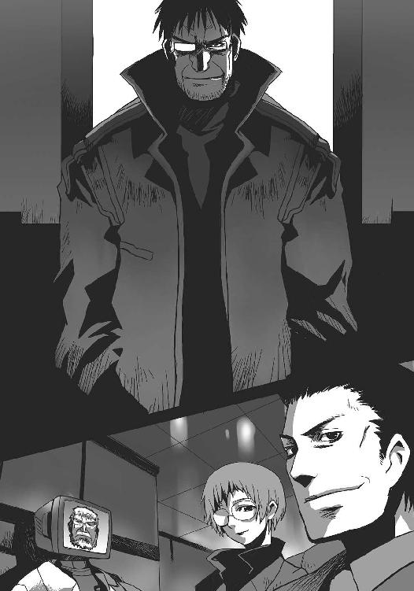

| アプラクサスの夢 A/Bエクストリーム (電撃文庫) | |
| 高橋 弥七郎 | |
| (2014) | |
本書（電子版）に掲載されているコンテンツ（ソフトウェア／プログラム／データ／情報を含む）の著作権およびその他の権利は、すべて株式会社ＫＡＤＯＫＡＷＡおよび正当な権利を有する第三者に帰属しています。
法律の定めがある場合または権利者の明示的な承諾がある場合を除き、これらのコンテンツを複製・転載、改変・編集、翻案・翻訳、放送・出版、公衆送信（送信可能化を含む）・再配信、販売・頒布、貸与等に使用することはできません。
空間殻面の発する微光の下、〈ゾーン〉内構造物の屋上にあたる駐機場の上空に、全長十メートルほどの小型浮遊艇が静止している。
砲弾のように尖ったフォルム、全面装甲を施されたキャノピー、鈍く唸りを上げる重力制御機関など、一見して軍用と分かる無骨な機体である。
ただ、その兵員輸送用コンテナの両側面には、機を所有する企業の名が、明るい朱に純白の縁取りからなる文字で鮮やかに大書されていた。
読んで曰く、『ディビジョン駆除商会』。
その文字があるだけで、連合治安軍の最新鋭機たるマーベル級強襲突撃艇の近付きがたい重厚さは、いきなり宅配便並みのアットホームさにまでランクを落としている。いっそ気の毒なまでにコミカルな仕様だった。
今、この機体──社での呼び名は〈チャリオット〉という──の操縦室に据えられた補助ディスプレイでは、子供向けの教育テレビ番組が再生されていた。
画面内で、お下げを二つ垂らした可愛い女の子が首を傾げて訊く。
『ねえ博士、〈ゾーン〉って一体なんなの？』
「っふふ」
操縦席のリクライニングを倒してその映像を見ていた少女が、小さく笑った。
整った容貌にはあどけなさが残り、だぶだぶの作業服に埋もれる体の線も細いが、己の持つ技能への確信と誇りを、強い輝きとしてその全身に表してもいた。
少女のコードネームは『サーキット』。キットの愛称で呼ばれている。
ディビジョン駆除商会における最長の肩書き『機器整備担当助役兼突入要員輸送艇艇長』を持つ、歴とした社会人だった。
『ふむふむ、いい質問だね。〈ゾーン〉っていうのは、人類社会を大きく発展させた、奇跡の異次元ポケットのことさ』
『異次元ポケット？』
相方である学者っぽい老人の説明に、女の子は再び首を傾げる。たしか、実年齢は外見同様十二歳だと言っていた。年齢に見合った愛らしい仕草ではある。
（でも、ねえ......）
キットはまた少し笑った。
『天使の輪は知っているかな？』
『はーい！ 大きな船なんかの上に浮かんでる、きれいな光の輪っかでーす』
『うむうむ、そのとおり。〈ゾーン〉というのは、その天使の輪を通った向こう側に広がっている空間のことなんだよ』
画面の端に註釈の星型が付く。ここをクリックすれば、〈ゾーン〉の由来やら特質やらを記した、『保護者の方々へ』という細かい説明文が表示されるのだろう。
もちろんキットはその筋の本職なので、そんなものは見ない。種類こそ違え、同じく本職だった女の子の、楽しげな今の姿を、ただ眺める。
『広がってる？ 私には輪っかしか見えませんけど』
『それが異次元ポケットと呼ばれている理由さ。この図をご覧』
老人の前に立体映像が表示された。船を模したモデルの上に天使の輪が浮かぶ、ごく普通の光景である。
『さあ、これが〈ゾーン〉だ』
立体映像に表示が追加された。天使の輪を下端部の断面にした巨大な球体だった。その全景は、船の上に大きな風船が浮かんでいるようにも見える。
『この天使の輪の内にある境界面の向こうには、これだけの空間が広がっているんだ』
『そうかあ。天使の輪を入り口にした、異次元の側にあるポケットってことなんですね。この中の広さは、輪の大きさに関係があるんですか？』
『あるとも。天使の輪が、つまり境界面というのは分かるね？ これを削った〈ゾーン〉の球は、全体の大きさこそ違え、必ず形は同じになるんだ。天使の輪が大きければ大きいほど、その向こうには大きな空間が広がっている、ということだね』
ふんふん、と女の子は熱心に頷いている。
そのこなれた演技に、キットは感心した。
（初演とは思えないな──あ、でも、初めて会ったときも演技はしてたんだっけ）
偽装工作のプロフェッショナル、転じて名優となる。全く、世の中なにが幸いするか分からないものである。
『〈ゾーン〉の中は、どうなってるんですか？』
『うむ、この船を例にとって見てみよう。まず、船体の上甲板には、〈ゾーン〉発生機関がある。ここで、とっても貴重な粒子にエネルギーを加えることで天使の輪を発生させているんだ』
一旦〈ゾーン〉と天使の輪が消えると、順番に──船の上部に小型のブロックが点灯──そこから逆さの円錐が上空に向けて伸びて行き──その底辺である天使の輪が広がり──同時に球体空間〈ゾーン〉も大きくなる──というプロセスが図示される。
『こうして〈ゾーン〉は生まれるわけだ。この図のような、移動する船なんかの場合は、動力源として〈対固定単極子循環炉〉、通称〈カーソン・リアクター〉を設置するのが普通だね。〈ゾーン〉自体の重さはないし、またその中にある物体の重さは外に加わらないから、どれほど巨大な建造物であっても、スペースの許す限り収めることができるんだ』
空っぽだった〈ゾーン〉の中に、デフォルメされた機械の映像が表示される。が、それは船から見ると球体の上部に張り付いた形になっていた。ちょうど、凍った金魚鉢をひっくり返したかのように、境界面まで僅かな余裕を空けて、空間の中を埋めている。
女の子も不安そうに訊く。
『うわー、博士ぇ、こんな逆さまになった形で大丈夫なんですか？ 今にも落ちてきそう......』
『大丈夫、中のものは落ちてこないよ。〈ゾーン〉の中では、重力が境界面を上にする形に変わるんだ。この船の場合は、ちょうど正反対になっているね。天使の輪が横を向いても斜めになっても、中の重力は境界面を上にするという決まりに変わりはないから、入れた物は落っこちたり揺れたりすることはない。完全に安定した空間というわけだ』
『えーと、つまり天使の輪がどの向きになっても、〈ゾーン〉の中では、いつも境界面が頭の上にあるような形になるんですね......あれ？ でも、こんなに便利なのに、街中じゃ天使の輪は見かけませんよ』
老人は大きく笑った。
『はっはっは、どこを見ているんだい？ 街中にはたくさん〈ゾーン〉があるよ？』
『えっ!? どこにですか』
女の子はわざとらしさ寸前、絶妙のオーバーアクションで驚いた。
「ぷっ」
キットは思わず吹きだした。演技が上手い分、余計におかしい。
画面の中の女の子は〈ゾーン〉襲撃に練達した、その筋でも最強クラスといっていい戦闘集団の一員だったのだから、知らないどころではない。むしろ専門家のはずだった。
『さっき自分で言っただろう？ どの向きになっても、〈ゾーン〉の中では境界面が天井になるって』
と、二人を大きくフレームに収めていたカメラが引いた。船の立体映像が消えて、代わりにミニチュアのような街の全景が、二人を取り囲んで表示される。
『どういう意味ですか？』
画面中央に小さく映る女の子が訊くと、隣に立つ老人は得意げに（こっちの演技はあまり上手くない）手を上げた。
『よし、街にある〈ゾーン〉を全部表示してみよう』
その途端、ミニチュアのそこここ、彼女らを囲んで一斉に、先の船と同じ方式による〈ゾーン〉の展開が図示された。光の花が一斉に咲くように、地面に並行する形で、地下に。
女の子は、手を叩いて納得の声を上げた。
『そうかあ！ 天使の輪を、さっきの船とは逆向きの、下に発生させれば、中と外の重力の向きは同じになるってことなんですね！』
『その通り。これは、地階型と呼ばれているポピュラーな方式で、全ての都市圏に数多く、大規模に設置されている。この〈ゾーン〉の登場によって居住地は安価になったし、浄水場や下水処理場、ゴミ処分場などの都市型公共施設の立地問題も解決した。各種工場はもちろん、陽光採取技法の確立でプラントも内蔵できる......前現代のような高層ビルは姿を消し、より広々とした生活空間が、我々人類の前に拓けたってわけさ』
『えーと......つまり、いっぱいたくさん、人とか物を入れられる場所ができて、省スペースになった、ってことですね？』
この可愛らしく頷く女の子が、対地攻撃機をも一撃で吹き飛ばした戦闘サイボーグだったとは、とても信じられない（体ごと着装するタイプだから、外見で分からないのは当然だが）。演技であるにせよ、その笑顔には隠れようのない心の輝きが見て取れた。
キットはその、闇から抜け出た女の子の姿を眩しそうに見つめる。
『それだけじゃないぞ。超が付く高効率を誇りながら、通常空間では不安定すぎて運用が難しかった発電機関〈カーソン・リアクター〉も、外部からの影響を一切受けない〈ゾーン〉に入れることで実用度が大幅に増したんだ。〈ゾーン〉は人類社会のエネルギー供給にも一役買っているのさ』
『すごいんですね、〈ゾーン〉って』
『そうとも。テレビの前の皆も、分かってくれたかな？ これでテストもバッチリだ！』
「あれっ？」
キットは古臭いフレーズとともに番組が終わるらしいことに気づき、驚いた。
（肝心なことをやってないじゃない）
そう、発生が容易で、内包物の重さもなく、持ち運びが可能で、安定した空間......〈ゾーン〉における、最大の泣き所。理想郷は遂には在り得ない、という証明のような事実。
それがスッポリ、抜け落ちている。
（でもまあ、子供向け番組なら当然かな？）
理屈としてそう思うが、しかし自分の職業にそれなりの誇りとプロ意識を持っている彼女としては、存在を無視されたようでなんとなく面白くなかった。脚本どおりに演じただけの女の子に罪はないので、代わりに老人に理不尽な怒りの視線を向ける。が、一瞬で飽きた。
『では、今日の授業はこれまで！』
『次回は、今日もちょっとだけ出た〈対固定単極子循環炉〉こと、〈カーソン・リアクター〉を採り上げまーす！』
『それでは』
『またねー！』
手を振る二人にかぶって、陽気な音楽とテロップが流れ始めた。
キットはディスプレイから目を逸らし、傍らに置いていた手紙を取った。
今朝、初出演の番組を収めたディスクとともに届いたものである。古今変わらず心づくしの証である、手書きの文字が温かい。
「......」
もう何十度目か、少し羨望を交えた表情で、しかし確かに笑って、キットは手紙を読む。
女の子のマネージャーをソツなくこなす優しい男の子のこと、少し前までの働きづめの生活からの反動でグータラしているのっぽさん、そのお嫁さんになると言い張って彼を困らせている頑固な少女らのことが、意外にきれいな文字で記されている。
文面の結びには、『お姉ちゃんも頑張ってください』とあった。
「うん、頑張ってるよ」
キットは微笑みと声で答えた。
彼女の職業は、駆除屋。
今や人類にとって不可欠となった異次元ポケット〈ゾーン〉内部、大エネルギーの所在地に忽然と現れ、設備を破壊し機能を阻害する正体不明の害獣──〈グレムリン〉の駆除を生業とする、現代の花形業種である。
その中でも彼女の所属する一団は特別だった。
社員総数七名という超零細企業ながら、知る人ぞ知る曲者と強者の巣窟。
社名をコンテナ両側面の書き文字に大アピールして曰く、
『ディビジョン駆除商会』。
闇の中に陽気な歌声が響く。
「──まるで砂糖、ああ、可愛い人よ──♪」
床面近くを小さく照らす非常灯に輪郭を浮かべ歌っているのは、黒い死神。正確には、黒金に深く光を吸い込む強化服である。外部出力標識である両目だけが、赤く点っていた。
「──君こそ俺の、キャンディガール──♪」
死神を取り巻き広がっているのはお菓子の山。正確には、無数のキャンディーやクッキーの袋を乗せた製菓工場の生産ラインである。操業を停止したそこは、静寂と薄闇の内にある。
「──こんなにも欲してる、俺は君を──♪」
死神はベルトコンベアの端、お菓子の箱と見紛う、製菓企業のロゴをペイントされた動力部の上にスラリと立って歌っている。どこまでも陽気に。
「──可愛い人、ああ、まるで砂糖さ──♪」
無表情な仮面、無骨な四肢、大きく張り出した両肩、これ見よがしの武装、赤いラインと【Ａ】のペイント......それら剣吞な姿の〈ＰＳＧΞ２ ブラックゴースト〉全制空戦用強化服が、体こそ揺すっていないものの、いかにも楽しげに歌っている。
「──君こそ俺の、キャンディガール──♪」
その全体で特に目立つ、腹部から伸びる長い砲身が、
「──こんなにも欲してる、俺は君──を!!」
声の切りとともに、全く前触れなしに動いた。
その砲の指し向けられる先、やや上方で、工場の高い天井が崩落していた。
砕け散り落下する建材の中に、それは混じっていた。
汚泥を混ぜた紙粘土のような色と形態をした、全長七、八メートルはあろうかという不定形の怪物。機械を狂わせる前現代の魔物の名を与えられた、正体不明の害獣。異次元ポケット〈ゾーン〉に現れ荒す、駆除屋の標的。
〈グレムリン〉である。
その機械とも生物とも付かない巨体の中心部を、死神の砲口から発射された眩いプラズマの奔流がぶち抜いた。まるで予定調和のように。
戦闘機クラスのグレードを持つ〈ブラックゴースト〉の重突撃兵装である〈ジャックポット〉大口径プラズマ火砲の前には、グレムリンの巨体も薄紙同然である。貫いたついでのように、その向こう側、工場の壁面中央にあった制御室までも爆発四散させるほどの、見事な大威力だった。グレムリンが床に叩きつけられる数倍は盛大な轟音と爆火があがった。
「あらら」
《あららじゃないだろ》
前もって示し合わせていたかのような答えが、指向光通信で飛んできた。
天井の穴からグレムリンを追って現れた、青いラインと【Ｂ】をペイントした同型の強化服からのものである。
《出力を絞れってあれほど言ったの、にっ》
【Ｂ】の死神は平淡な、しかしどこか不機嫌な声とともに、同じく腹から伸びた砲を直下に発砲した。床の上で蠢く不定形の怪物を、今度は脳天から一線、焼き潰す。
「ギ・・──■ィイ≡イ・・・──ッ!!」
一目ではどこにあるのかさえ分からない口から、金属を擦りわすような咆哮が上がった。数秒の静止を経て、膨大な熱量を受けてグズグズになった巨体が力なく、床に大重量を放り落とす──
寸前に、
その機械とも生物とも付かない体表から足が突き出た。サイズだけを数倍にした人間そのもののフォルムが、雪崩れる体を支える。同時に頭上、滞空する【Ｂ】の死神に向けて、体表の組織を硬化させた無数の棘が伸び上がり、襲いかかった。
が、
《おっと》
軽く手を下に向けた【Ｂ】の死神の下で、その棘は見えない壁に阻まれたように止まり、
《ほいさ！》
同時に、再度発砲した【Ａ】の死神のプラズマ火弾によって、支えの足が打ち砕かれた。
グレムリンは今度こそ、工場全体を震わせて崩れ落ちた。またついでに、床面を削って飛んだプラズマ火弾が生産ラインを二つばかり吹き飛ばす。
《......アンディ》
《過去を振り返るな、ボギー》
アンディと呼ばれた【Ａ】の死神は弁解のように素早く、腹から伸びた大砲の根元にある砲撃体勢保持のロックを外して、長い砲身を真上に向けた。代わりに、背部のウェポンラックから右脇を潜って飛び出した、給弾ベルト付き機関砲のグリップを握る。
ジャスト二秒で、武装の入れ替え、踏ん張るような射撃体勢、照準が完了。
《フォロー》
《どーぞ》
ボギーと呼ばれた【Ｂ】の死神からの、打てば響くような返答を受けて、アンディは新たな武器、〈ドゥー・イン〉特装機関砲のトリガーを絞る。
重く空気を震わす撃発音と花火のようなマズルフラッシュが間断なくあがり、対象表面で砕けて強燃性チップを体内にばら撒く対人爆弾（といっても、人に使うことは連合条約で禁止されているが）が無数、グレムリンに打ち込まれる。悲鳴もかき消える体内よりの爆発の中、怪物は熱湯の豪雨にさらされた雪像のようにどんどん焼き崩れてゆく。
その巨体を源泉に吹き上がる壮絶な爆炎は、しかし周囲に広がらない。溢れ出そうになる度に押し戻され、また再び崩れてゆく体に襲いかかり渦巻く。
この起こり得ないはずの現象は、やや距離を取って宙に浮き、掌を差し出すボギーによって引き起こされていた。先の棘を押し止めたのと同様の、精神力による物理干渉、いわゆる念動力である。彼は『人類の科学の果実』──特殊技能者なのだった。
やがてグレムリンは欠片となり、灰と化す。しかしそれは残らず、跡形もなく消滅してゆく。正体不明の怪物における、これが常の最期だった。
アンディが撃ち過ぎ寸前でトリガーにかけた指を緩めると、金属の擦れる音を僅かに切れ目と残し、工場の中に静寂が戻った。射撃体勢を解き、周り（の惨状）を眺めながら一息つく。
《よっしゃ、ラスト一匹終了。ちいっと高くついたか》
《ちいっと、ね......社長もそう思ってくれればいいけど》
呆れ声とともに、破壊した箇所に延焼のないことを確認したボギーが彼の前に降り立った。グレムリンの消滅した後に残された弾芯の燃え滓に、気のない視線を流しつつ言う。
「さて、今日はグレムリンを先に片付けたわけだけど」
視界に投影される自己流インターフェイス、融合視界の中に、交信回復の表示がある。グレムリンが吸収したエネルギーを消費する際に発する、妨害電波の消滅によるものだった（だから彼は指向光通信から肉声による会話に切り替えている）。
その彼に、アンディはせっつくように訊く。
「どうだ？」
「ん。感じてる、不愉快だ」
「よおっし！」
アンディは回復したばかりの交信域から一つのチャンネルを開いた。
《マイ・スイート・エンジェル、聞こえるか？》
《そんな人はいません》
張りのある少女の声が、素っ気なく返ってきた。彼ら、ディビジョン駆除商会の実戦部隊である突入要員『アンドロイド』アンディと『サイボーグ』ボギーを、この〈ゾーン〉に運んできた浮遊艇〈チャリオット〉の艇長からのものである。
《......キット》
《うん、二次標的確認。位置信号を送信》
普通に名前を呼ぶと、今度は澱みなく答えが返ってきた。必要なデータも一揃い、滞りなく添付されている。
アンディはそんな少女のつれない態度に、フェイスガードの下で渋い顔を作った。が、それも受け取った情報を一瞥した途端、凶暴な笑みに豹変する。
「ボギー！」
「ん。近いな、今日は接触できるかも」
Ａ／Ｂは強化服の両肩にある荷重力推進機の出力を上げてからスラスターを一発噴射、位置信号の指し示す場所に向けて飛び立った。
ボギーは、傍らを飛ぶアンディが、いつの間にか強化服の手に棒つきキャンディを握っているのに気付いた。ラインからくすねたものらしい。苦い顔を緩めて、からかうように訊く。
「アプローチの方針を、ムチからアメに変えたのかい？」
「そのとーり。『どうか受け取って頂戴。そして俺と勝負を』......って結局同じか」
笑い飛ばしてアンディは、さらに速度を上げる。その飛翔の内に、右脇から伸びていた〈ドゥー・イン〉特装機関砲を背部のウェポンラックに戻して、再び腹部の〈ジャックポット〉大口径プラズマ火砲を立ち上げた。機関砲は反動が大きすぎて、乱戦では使い辛いからである。
やや後方に付くボギーは、強化服の両目にあたる出力標識から開錠信号を飛ばして、前方壁面にある資材搬入用の大型ゲートを開く。
分厚い鉄扉に描かれた製菓企業の看板商品であるダイエット・クッキーのロゴが真っ二つに割れて、標識灯だけを点す殺風景な通路を奥に現す。このすぐ先にある倉庫の一室に、彼らの二次標的がいるはずだった。
彼らの本務は、改めて言うまでもなく〈ゾーン〉の害獣・グレムリンの駆除である。だから一次標的とは当然これを指す。むしろ当然すぎて、この言葉はほとんど使われない。
対して二次標的というのは、〈ゾーン〉内に取り残された作業員の救助や重要区画の防衛、緊急の修復作業など、依頼に時折追加される副次的な物体や達成目標も含めて指す。
しかし今、彼らが目指すその二次標的は、顧客からの依頼によるものではなかった。ゆえに仕事外の余事として後回しにしているのだが、実のところ彼らは最近、仕事を不備なくこなす傍ら、この捕捉に大きく熱意と関心を振り向けている。
まさに意欲を表す猛スピードで、
「出会う前にトンズラってのだけは勘弁だぜ」
アンディが床面スレスレに、
「こっちもせいぜい、駆け足で急ごうか」
ボギーが天井ギリギリに、静止した運搬車や放置されたコンテナなどをかわしながらすっ飛んでゆく。
向かう先にはなんの反応も出ていないが、キットが工場の中にばら撒いたネズミ大の小型ロボット、〈マウスフル〉自律偵察機は、その姿だけをしっかりと捉えているらしい。彼らの求める二次標的は、光学的視認でしか存在を察知できないのである。
ほどなくというも短い数秒で、二人は目的地、倉庫の開け放された入り口へと到達した。
ボギーは速度を上げて先行、天井沿いに倉庫内へと突入する。山積みになった資材と商品コンテナの陰に入って反転、続く相棒をフォローする態勢を取った。
アンディは倉庫に飛び込むと同時に、荷重力推進機の出力を逆進に入れた。標的が正面に入る位置を取るや、踵から出したフックで一瞬だけ床を打突、無理矢理速度を殺して静止する。
「ハロー、お菓子屋の怪人!!」
熱烈な歓迎の言葉、〈ジャックポット〉の砲撃体勢、グリップと一緒に握りこんだ棒つきキャンディなどが、まとめて贈られる。
迷路のように積みあがったコンテナの間にいた人物が、一瞬で砲口に睨まれたことに驚き、探るようにコンテナに付けていた掌を離した。ゆっくりとアンディの方に振り向く。
それは奇妙な存在だった。
大きなポンチョを被った重々しい機械体で、微妙に人型から離れた体形をしている。強化ガラス製のフード内には、薄気味悪いガスマスクのような頭が収まっていた。
が、奇妙なのはその格好ではない。
体全体が、まるでピンボケしたカメラで見ているかのようにぼやけていることだった。
「ちっ、ハズレだ」
その姿を認めたアンディは、露骨に舌打ちした。
「データは無駄にならないさ」
ボギーは簡潔に答えながら、コンテナの上にいる〈マウスフル〉自律偵察機と情報をリンクさせ、二次標的......誰が付けたか、駆除屋業界筋の通称『幽霊』を、自身の〈ブラックゴースト〉に備えられたあらゆる索敵手段で捉えようとする。
が、それを果たす前に、ファントムは消え始めた。
いつものように。
目視確認しているアンディの目の前で、〈マウスフル〉越しに情報を受け取るボギーの知覚の中から、消えてゆく。
輪郭をよりぼやかし、滲むように色彩を失い、煙に紛れるように薄れてゆく。
十秒あるなしのうちに、倉庫には彼らだけが取り残されていた。
眉根を緩めたボギーが、吐息に乗せて相棒に告げる。
「やれやれ、スッキリした......いなくなったよ」
「......──」
「ここじゃ言い訳できないよ、ミスター・アンドロイド？」
「──ちっ」
衝動的な発砲への先手を打たれて、アンディは再び舌打ちした。
ここ二月ほどの間、駆除屋業界は一つ話題で持ちきりだった。
もちろん、ファントムについてである。
環太平洋区域西部の〈ゾーン〉内、自分たちがドンパチ明け暮らす戦場（というか職場）において、駆除屋たちは突然、部外者の侵入を受けた。正体・目的ともに不明だが、何者かの関与のあることだけは明白という、まさに怪事件だった。
もっとも、この怪事件は、現象の不気味さとは裏腹に──連合政府が未だ調査や対策に本腰を入れない理由でもある──実のところ被害らしい被害を、まだ一件も出していない。
初遭遇からしばらくの間、グレムリンを追っていた駆除屋たちを驚かし、避難中の作業員に目撃されて大騒ぎになり、業界筋の情報を求める好事家や研究者の間で注目を集めた、このファントムなる謎の存在......または現象は、しかしすぐセンサーの故障、科学的な根拠を示した錯覚などの原因公表を受けて、日々の情報の中に押し流され、騒ぎも沈静化した。
もちろん、それら故障や錯覚などの原因は全て、沈静化させるための方便である。
その裏、というより少し深いところには、連合政府が詳細な調査が終わるまではそう扱うようマスコミに指示を出し、マスコミも真相発覚の折には隠蔽スキャンダルとして大々的に採り上げることを条件にこれを吞んだ、という経緯が隠されている（マスコミの仕事は真相の究明ではなく、人の耳目を引き付けることだから、彼らの選択は間違ってはいない）。
政府は統治側の論理として、人類社会を支える屋台骨である〈ゾーン〉に関する情報が、善し悪しに関わらず広まることを好んでいない。グレムリンの関連事項についても、禁じてこそいなかったが、関係者や専門職以外の人間には極力触れられないようにしていた。駆除屋が現代の花形業種と言われながら一般への認知度が低い、これはその遠因でもある。
ともあれ、政府は当面の隠蔽だけを行い、実害がないことから動こうともしなかった。
結果、現在ファントムについて詳しい調査と対処法を模索しているのは、事態に直面する駆除屋たち、具体的には同業者組合たる［ＥＸユニオン］だけとなっていた。
そんな彼らが、自身の体験を元に得た情報はというと、
①常に単体である、
②特殊技能者の特殊移動要件とは異なる、
③視認以外の方法で捉えることができない、
④なにをするでもなく彷徨い歩くだけである、
⑤気付かれたり刺激を受けたりすると消滅する、
これだけだった。
以降、何件目撃例を連ねても、これ以上の確定情報は得られていない。
目撃される姿も、最初期における数件の例外を経て、今ではＡ／Ｂが見た、不気味なガスマスクタイプだけとなったいた。出没する一連の存在が同一人物かどうかすら分からない。足取りを追うにはあまりにか細い手がかりだった。
放っておくには現象が奇怪すぎる。
しかし対処する方法が全くない。
そんな歯がゆい状況の下、駆除屋たちは今日も〈ゾーン〉でドンパチ明け暮らしている。
製菓工場の屋上、つまり〈ゾーン〉では境界面に最も近いフロアにあたる駐機場に、〈チャリオット〉が砲弾のような機体を休めている。
その箱型のコンテナ内のハンガーで、Ａ／Ｂは強化服を除装した。
「あー、疲れた──っと！」
「ふう──」
ハンガーに降り立った二人は、大柄と中肉中背、それぞれ体を大きく伸ばした。強化服の内で溜まった心身の凝りが、快感とともに追い出されてゆく。
幾つかのブロックに分離して彼らを解放した二機の〈ＰＳＧΞ２ ブラックゴースト〉全制空戦用強化服は、ハンガーの壁面で自動整備状態に入っている。その様は、死神を描いた壁画にも、悪霊を刻んだ浮き彫りにも見えた。
強化服から取り外した武装を持ってゆく作業用アームやそれらを収容するラック、各所を這い巡るパイプやコード等で狭苦しいハンガーに、キットの声がスピーカー越しに響いた。
《おかえりー。やっぱり駄目だったね》
彼女は操縦席で、〈マウスフル〉自律偵察機の回収作業中である。
「ああ、ハズレの上にすぐ逃げられちまう。ったく、やってらんねえよ」
アンディは言って、インナースーツのフードを乱暴に取った。熱気とともに、硬そうな金髪が広がる。二十歳前後に見える荒削りな容貌に、拗ねた子供のような、陰のない不機嫌さが浮かんでいた。
「まあ、そう簡単にはいかないさ。僕の方はスッキリしたけどね」
ボギーもフードを取る。焦茶のざんばら髪が、尖った顔の輪郭と鋭い目線にかかった。十六、七という歳の頃に不釣合いな、荒んだ雰囲気とこなれた態度に、底意地の悪そうな苦笑がよく似合う。
《二人とも、装弾のチェックと、服の過負荷検知だけやっといて》
事務的に指示するキットの声には、呆れの色がある。
ここしばらくの、ファントムに対する二人の態度へのものだった。
アンディは、ファントムが出没し始めた最初期に、通常出現する不気味なガスマスク面ではない例外と遭遇した、数少ない突入要員の一人だった。全部で四、五種類しか目撃例のないそれを、彼がアタリと呼び、こだわっているのはなぜかというと、
「ケンカを売られたから」
これだけであるらしい。
キットでなくても呆れる理由だった。
とにかく彼の話によると、その事件は二月ほど前の、いつもの駆除作業中に起きた。
場所は、とある発電所のリアクター基部。見る限り支持架や鉄骨という、鋼材の林立する中においてだった。
ボギーがグレムリンを追い立ててくるところを〈ジャックポット〉大口径プラズマ火砲で狙い撃つべく待機していたそのとき、不意に視界の端を過ぎるモノを、彼は見出した。
「......？」
他のセンサーに反応は一切なかった。ただ、強化服の外部モニターに繫いだ融合視界の中に、動くものが映った。それだけの、しかしありえないことが、確かに起こった。
フェイスガードの内に満つ暗闇の中──強化服は概ね融合視界に視覚を直結する方式であるため、ガードの内側に非効率な投影用モニターはない──、アンディは怪訝な顔を作った。
彼はその名のとおりアンドロイド、人権を持つ『二次的誕生による人間』＝ニューロンドーマーではあるが、脳を人工物で再現しただけの存在であるから、情報総体の収集手法は人間と変わらない。
その彼と〈ブラックゴースト〉が備える、あらゆるセンサーの、たった一つだけに、いきなり奇妙な闖入者が現れたのである。怪現象と言ってよかった。
（歩いて、た？）
思いつつ融合視界の一角に映像を再生、その一部を拡大・補正して、自分の認識が正しかったことを確認した。
視界の端に発見してから、速度と時間に勘を一味加えた計算の結果を得るまで、半秒。
得も言われぬ胸騒ぎが体を衝き動かした。
強化服のバネと緊急発進用スラスターによる爆発的な跳躍で、上部の鉄骨に飛び乗った。同時に真下、標的を脳天から狙う形で〈ジャックポット〉の砲身を向ける。
が、その先に標的がいなかった。
アンディの跳躍に合わせて位置を変え、別の鉄骨の陰から危機感もなく悠々と、彼を見上げていたのである。
（限定空間戦の技能者か！）
すぐ分かった。
彼の着装する〈ブラックゴースト〉本来の用途である、開けた屋外での地空双方を占拠対象とする『全制空戦』......それと逆の概念である、閉じられた屋内、あるいは地表のみを占拠対象とする『限定空間戦』の、こいつはプロだった。
アンディは自分の強さを理解しているだけであって、過信はしていない。どんな相手にも、状況次第でかわされることはあると分かっている。だからこのときまでは、意表を突かれたとしか思ってはいなかった。
怒る理由は、このあとに起こった出来事だった。
謎の技能者は上方にある彼を確認すると、まるで自分のその行動が誤りだったかのように体の力を抜き、鉄骨の陰から出てきたのだった。まるで、自分を狙う大砲が目に入っていないかのように。
姿を現したのは、大柄な外装機械式の戦闘サイボーグ、あるいはアンドロイドだった。鬣のように膨れ上がった頭髪、鋭角的なフォルムを持つ上半身、限定空間戦用機体の特徴であるスマートな足回り、全てが純白。そして、同じく白い、無機質な造作をした顔が、牙を剝き出して......笑っていた。
以降彼が見たファントムとは違う、はっきりと見える姿で、たしかに笑っていた。
（野郎──）
アンディには、この不審者の回避行動が、持てる技能からの反射であると分かっていた。目の前に出てきたのが、自分を値踏みし、その銃口の前に身を晒しても問題ない、と判断した結果であることも分かった。
なにかの間違いで迷い込んだ部外者、などという億分の一の可能性さえ否定できる、それは『敵の顔』だった。
その白髪の敵の体には、目につく武装は見えなかった。が、限定空間戦の技能者は基本的にかさばる武器を好まない。外見で判断するのは愚の骨頂だった。
そうして互いに見詰め合ったまま静止する僅かな間を経て、
互いに動きの気配が漂った瞬間、
二人の傍らにある鉄骨が折れ、それが支えていた壁が砕け散った。
轟音と煙の中から現れたのは、駆除屋本来の標的たる怪物・グレムリン。
アンディは反射的に、白髪とグレムリン双方に不利、自分に有利な射角を得られる位置に飛び、〈ジャックポット〉のトリガーを絞っていた。
「──っく」
その僅かな時の中、彼は見ていた。
白髪の不審者が、その身をぼやかし、消えゆく姿を。その笑いを。
スローモーションのようにはっきりと。
それが、
「そったれ!!」
突然、プラズマにぶち抜かれて倒れるグレムリンの巨体で隠され、またすぐ、折れて崩れる鉄骨と壁の建材の煙に紛れ、全ては混乱のうちに消えた。
打ち合わせと異なる位置からの砲撃で、危うくボギーが撃墜されかけたのは余談。
一方ボギーは、実はこの一連のファントム騒動において、あるいは明確な被害を被っているといえる、ただ一人の駆除屋だった。
どういうわけか、彼はファントムの存在を感じることができたのである。
しかも不快感という形で。
彼自身の表現によると、「脳を撫でられるような気持ち悪さ」だという。
最初は、この万事抜かりのない少年らしからぬ体調不良と思われていた。それがやがて、数度にわたるファントムとの接触から因果関係のあることを推測され、すぐ実体験による確信へと変わった。具体的には、目の前でファントムが消えた途端、体調が快気した例を数度、経験したのである。
騒動の起きた当初から、『ファントムの神出鬼没ともいえる現象は特殊技能者による変則的なテレポートである』という仮説は、唱えられてはいた。とはいえ、それでは説明のつかない状況も多く、特殊技能者が同じ現象を起こした例が報告されていないこと、また推測を立証する方法もないことなどから、これは未だに数ある仮説の一つとして扱われている。
他の駆除屋にいる特殊技能者に同じ症状が出ていないことなど、関連性に疑問のないわけではなかったが（最悪、ボギー個人の症状という可能性もある）、それでもディビジョン駆除商会としては、彼の変調が答えの一端、特殊技能者絡みである可能性が高い、と判断した。
特殊技能者の力の根源、思念による物理干渉力を生む脳の電気経路『モザイクパターン』は、解明の道筋さえはっきりしていない謎に満ちた領域である。なにがどう、彼に副作用を起こしているのか、現状では分からない。が、
「分からないものなら、くっつけて考えておくのがいい。まずは全肯定から始めて、現れる否定で切り取っていくんだ。そうすることで、全体の形が見えてくる」
とは、彼らの社長の弁、
「ホットケーキ切りながら言うの止めてくれませんか」
とは、その弁に対するボギーの返答である。
とにかく今は、事態に対する特効薬や解決法を見つけるどころか、その把握すらできていないといった状況である。
一方的被害者たるボギーとしては、手がかりなり沈静化なりを求めながら、目の前のグレムリン駆除に励むくらいしかできなかった。
天頂部に境界面を僅か削った球形をした〈ゾーン〉の内壁、『空間殻面』の発する淡い光の中、〈チャリオット〉が姿勢を変えないまま、垂直に浮上してゆく。
製菓工場の駐機場が遠ざかり、代わりに頭上、真円を描く虹色の湖面が近づいてくる。この虹色の湖面が、〈ゾーン〉と外の世界〈ゲンセ〉──とある文化圏の古語から取られた呼称である──を結ぶ出入り口たる境界面である。
操縦室左側前部の機長席で、キットが境界面通過をカウントする。
「境界面までヒト・マル。出るわよ」
「「どーぞ」」
Ａ／Ｂがハモって答えた。アンディはキットの後ろにある自分の指定席、二人がけの椅子にどっかり足を広げて座り、ボギーはその反対側にある自分の、これまた二人がけの指定席で寝転んでいる。
「ゴ、前」
機長席にあるキットは、昔の板金工が使うようなゴツい鉄の保護面で顔全体を隠していた。これは、無改造で融合視界を備えていない彼女のインターフェース機器である。その内側からくぐもった声が響く。
「境界面、通過」
浮上を続ける〈チャリオット〉が虹色の湖面、境界面を抜ける。この〈ゾーン〉は地階型であるため、基準重力方位は同じである。機の姿勢変更や重力方位の調整は必要なかった。
「〈ゾーン〉離脱」
出た場所は、閉塞感を漂わす、殺風景で薄暗い場所だった。
境界面は、〈ゲンセ〉の側から見ると、地面にへばりつき、内側に黒々とした肌を覗かせる天使の輪である。この光り輝く輪に沿って彼らを囲む壁が、太い円柱をなして上へと伸びており、力学の図式にも似た支柱を内側に幾重にも張り巡らせている。
典型的な地階型〈ゾーン〉の形態だった。
〈チャリオット〉は進路を微調整しながら、グレムリン発生に際して引き上げられた大型エレベーターシャフトに沿って上昇を続ける。
やがて行く先に、円柱の内壁から生えたビルのような建物が現れた。〈ゾーン〉発生機関を内蔵した、地階層管理ブースである。窓からは数人が、手を上げて彼らをねぎらい、帽子を振っていた。
キットはその外部映像を受け取りつつ、管制室に通信を入れる。
「ブロス・コントロール、こちらディビジョン・エクスターミネーターＣ。駆除作業完了。被害状況および付加事項を転送する」
やや間があって、女性の声が返ってきた。キットと馴染みの通信手である。
「ブロス・コントロール了解。セントラルゲート・オープン。リミットは三十秒」
「ディビジョン・エクスターミネーターＣ了解」
「今日は思ったより被害が少なくて助かったわ。また出たらお願いね、交信終了」
安堵と苦笑を混ぜた通信手に、キットは営業用の朗らかな声で答えた。
「はい、早くて確実、ディビジョン駆除商会を、これからも何卒ご贔屓に。交信終了」
手動で通信を切り、また機位を微調整。
〈チャリオット〉の上で、闇が轟音と共に割れた。地階層からの出口、セントラルゲートだった。天井が真っ二つになる形で開くゲートを、リミットの三十秒を待つまでもなく浮遊艇は潜る。〈ゲンセ〉に出た、帰ってきた、その本当の開放感をもたらす大空へと、砲弾のような機体が舞い上がった。
空は、夕焼けに赤く染まっていた。
真下で、彼らの通過を確認したセントラルゲートが閉じていく。その表面は芝生に偽装してあり、閉じると周囲の風景に溶け込んで見分けがつかなくなる。
その風景とは、見事すぎてかえってわざとらしい、風にそよぐ緑の草原に建つ素朴な丸木小屋、というもの。もちろんこれは、製菓企業としてはなにより重要な、イメージ戦略の一環である。今回のクライアントに限らず、大抵の企業は『建ち並ぶ大工場』という、前現代的な傲慢さの臭う絵面を好まない。
見えない場所に大規模な用地を確保できる〈ゾーン〉は、そんな企業の経営者たちにとっても渡りに船の、まさに理想郷なのだった（もちろんグレムリン問題を除いてのことだが）。
特に今日のクライアント〈ブロス製菓〉などでは、地階型〈ゾーン〉内の工場に、発電機関である〈カーソン・リアクター〉を併設する方式を取っている。グレムリンの危険性とコスト節減の折り合いの上に成り立つやり方で、社としてはありがたいお得意様の一つだった。
それら真下の打算を隠す『小さな大工場』は、日暮れの中にぽつんと建って、窓に明かりを点している、見る者に憩いを求めさせる。シチューのＣＭでも作れそうな風情だった。
キットはその外部映像を切ると、航空管制局とアクセス、目的地への空路申請、即時返信のあったデータを自動操縦装置に入力等、熟練ゆえの手軽さでこれら作業をこなす。
そしてようやく、
「ふあーっ、今日のお仕事終了、っと」
言って彼女はシートを倒し、大きく伸びをした。輸送艇艇長の仕事は待機状態が多い代わりに、渉外も含めて突入要員より長く煩雑である。今がようやくの、仕事の切りだった。
「「おつかれ」」
Ａ／Ｂがハモって彼女をねぎらう。
うん、と答えてから、キットは保護面を外して傍らに置いた。倒したシートから逆さに見上げる形で、自分の後席にあるアンディを見る。
荒削りだが、精悍と言えなくもない顔。それがお気楽にくつろいでいる......ように見せかけて、ふてくされている。口の端が僅かにひん曲がっているのが、その証拠。
そんな彼を可愛く思って、キットは逆さのまま、くすりと笑った。
「なに、まだ愛しのホワイト・ヘアとすれ違いでおかんむり？」
アンディは、組んだ腕をぴくりと動かした。平静を装って答える。
「すれ違うもなにも、まず会えないんだよ」
「勝手な見当だけで自分に大砲向けるような非常識な男には、私も会いたくないけど」
私も云々、のところで僅かに表情に動揺を走らせ、しかしアンディは口答えする。
「敵に大砲向けて何が悪いんだよ」
「敵、ねえ」
「敵さ」
確信を声にしたような断言に、キットは呆れの溜め息を吐く。
「変なトコで自信満々なんだから、もう。会うとか敵とか言っても、どうせファントムはすぐ消えちゃうのに」
と、不意に、シートで寝転ぶボギーが口を開いた。
「ところがそうでもない、かも知れないのさ」
不愉快な口調で、
「不愉快なことにね」
と強調する。
「え？」
「見てみな」
訝るキットのために、アンディが眼球の出力子からデータを一つ、コンソールに送信した。
操縦席唯一の飾りである猫の人形の横、小さめのサブディスプレイに、一つの記録映像が映し出される。
キットはシートを戻してそれを見、仰天した。
「!! ......これ、もしかして」
「ああ。手形だ」
ファントムの消えた場所に、それはくっきりと残されていた。
ボギーが情報を補足する。
「寸前の映像と立体構成を照合した。間違いなく、奴のものだよ」
「そんな......物体と、接触を......？」
キットは戸惑いに声を切った。
これまでファントムは、目撃されただけだった。ときおり姿を見せ、すぐ消える。行動に特別な意図を感じさせることも、まして周囲に痕跡を残したことも一度たりとなかった。それは実は、この怪しい存在に関わる人間たちにとって、密かな安心の保証でさえあった。
それが、この映像一枚で全て覆ってしまう。
（まるで、あの世から幽霊が這い出してきたみたい......）
キットは空恐ろしさに背筋を震わせた。
ところが、後ろの男どもはといえば、
「まあ、スカってもただでは済まさないのがアンディ様ってことさ」
「見つけたのは僕だよ」
「うっ」
「これを報告すれば社長も、［ＥＸユニオン］にいい顔できる、って喜ぶだろうね」
などと軽く声を交わしている。全く、恐れを抱くことが馬鹿らしく思えてくるほどのお気楽さ、明るさだった。
そう思わせてくれたことに、少女は感謝を込めて笑い、努めて明るい声を出す。
「社長って言えば、今日の仕事が上がったら〈ワン・フォー・ザ・ロード〉で奢ってくれるそうよ。実は今、そっちに向かってるの」
Ａ／Ｂは声を揃えて賞賛した。
「「ブラボー」」
国家を統合して生まれた［連合］が、人類社会に『権利兌換制』を布いて長い。
これは、欲する権利に相応の義務を課すという、ひどく単純な原則からなる制度である（もちろん、全ての法がそうであるように、実施においては複雑怪奇の様相を呈するが）。
誰もが食うに困らなくなる要生存剤培養槽の開発や、〈ゾーン〉による生活空間の爆発的な膨張などと合わせて、この制度は現代の人類社会を動かす動力源となっている。
人間と二次的誕生による人間は、生きる、それだけは無条件で保証されていた。しかし、それ以上のこと──物・地位・名声・充足感などは、課される義務と引き換えに社会へと参加し、自身の持てる知力を尽くしてもぎ取らねばならなかった。
意に染まぬ代償を払ってでも『なにかをしたい』という生命の活力......野心や欲望を持っている者は、その心のまま、ときには休みつつ、艱難辛苦の中を前進していた。
その活力を失った者、端から持たない者は、ただ生きていた。彼らの多くは偽装経験領域と呼ばれる架空の電子世界で、無限に供給される娯楽の中、死までの時間を潰している。
現代社会はこの、基本的になにも強制してくれない制度の元、『去るを追わず、来るを拒まず』の格言、もっとくだけて『やりたいやつだけでてこい』の一言に拠って、運営されている。
こんな、人が欲し望むものを得ようと血道をあげる世界には、ときおりイレギュラーのように忽然と、あるいはレギュラーのように平然と、すいすいすらすら気儘に過ごす異常人が生まれることがある。
ディビジョン駆除商会にも、その代表者たる男が一人いた。
巷間『世間師の中の世間師』と呼ばれ恐れられる、しかし当人は飄々洒脱に過ごしている、社のオーナーにして経営責任者、つまり社長。
名を『ディビジョン』という。
照明を抑えた店内に、『アズ・タイム・ゴーズ・バイ』が微かに流れている。
そのバー、〈ワン・フォー・ザ・ロード〉は、踏めば音撒く板張りの床、古い映画のポスターや外したダーツが開けた穴だらけの壁、端の削れも滑らかなテーブルセットなど、店全体に骨董品のような歳月の煤けを表していた。
ただ、バーカウンターと、その奥壁一面を占める『酒場の顔』酒棚にのみ、見える形での手入れが成されている。
今日の客は、カウンター席に並んでかけている四人きり。
貸切ではない。この店は普段からこんなものだった。
カウンターの内にある、落ち着いた雰囲気をまとう中年のマスターが、その客の前に、コースターに載せたロックグラスを、す、と滑らせる。
並んでかける男女、その中の一人がグラスを受け取り、目線と僅かな息づかいのみで礼を言った。マスターも目線だけを伏せて、洗い場に引く。
グラスを取ったのは、男。
スーツ以外の姿が想像できない、上品な四十がらみの紳士である。
紳士は優雅な仕草でグラスを傾け、琥珀色の酒を一口、緩やかに咽喉へと流し込む。数秒、吐息に薫る風味に満足してから、ようやく感想を漏らす。
「たまにはブレンデッド・ウイスキーも悪くないね」
風格漂う容貌に、明るくも胡散臭い笑みを見せる男。
コードネーム『ディビジョン』である。
嫌う者は結構少ないが恐れる者は馬鹿に多い、ディビジョン駆除商会の社長。訳あり傷持ち腕利きの面子を束ねあげ、その威力をもって世に知らしめる怪人にして粋人だった。
「それで、フォートラン君、どうだい」
その彼の、よく通る声の問いかけに、間に一人挟んだ左側の席から、老人が答える。
「残念ながら、ご期待には添えんよ、社長。手形を見ても、武装の形式に特定の心当たりのない以上、儂に提供できる新しい情報はないな」
特別な素材と構造で補強された指定席に巨体を沈める、露骨で無骨な機械からなる──おそらくは──老人である。
コードネーム『フォートラン』、通称とっつぁん。
社の機器整備担当重役を務める、キットの上司にしてメカニックとしての師匠である。
「まあ、構造解析と設計思想の推測ならやっとるがね。特にあのホワイト・ヘアは、なかなか興味深い機体じゃしな」
頑固親父の顔を映し出す古臭い二次元モニターの頭や、〈チャリオット〉から転送された写真をつまむ鋼鉄の手、その他もろもろ、全てチープな機械仕掛けだが、これでも歴とした元・人間、サイボーグである。この社会では、アンディのように人間と変わらない体を使うことになんの制限もないのだから、これはわざとそうしているはずだった。
もちろん、誰もその理由を尋ねたりはしない。互いの詮索をしない、というのは社の不文律である。彼は神がかった腕前の技術者である、それだけが分かっていれば、社員たちにとっては十分なのだった。
ディビジョンは、予想された老人からの回答に頷く。
「ふむ。現象として面白くはあっても、正体不明であるのは同じ、か」
伸ばした人差し指と中指に写真を挟んで受け取り、胸元で翻し眺め直す。
その右隣から、年齢不詳の細面にサングラスをかけた男が言う。
「ヤバい改造を請け負う人間なんざ、その筋には掃いて捨てるほどいますからねえ。ここまで大掛かりなことしでかす連中が、装備品から足の付くようなヘマするとも思えないっスよ」
男は、インターフェース機器である幅広のサングラス、前も開けたよれよれのスーツに緩めたネクタイという、チンピラチックな格好をしている。
「シラガ野郎も同じっスね。めぼしい限定空間戦の技能者を当たってみましたが、治安当局や［情報部］の要注意人物Ａクラスだけでも、まあいるわいるわ。情報があの一回きりの遭遇しかないんじゃ、とても絞りきれませんや」
言って、苦笑いを見せる。
コードネーム『ゴシップ』。
社の事務全般を取り仕切る経理財務担当重役にして、危急の際、各種の情報収集と操作にあたる超級のクラッカーである（もちろん、要注意人物云々の勝手な情報閲覧は完全な違法行為である）。とっつぁんがハード担当なら、彼はソフト担当だった。
「......でも、その映像自体を利用する算段は、ついてんでしょう？」
力の抜けた笑いや、ついでと取り上げたショットグラスをかざす姿も、ディビジョンの優雅なそれとは対照的なＣ調である。
「もちろん。エリー君？」
「はい」
ディビジョンととっつぁんの間に背筋を伸ばして座っていた、ショートの金髪に丸眼鏡の女性が、柔らかくも毅然とした声を返す。
「すでに［ＥＸユニオン］環太平洋地域本部にはアポイントメントを取りました。緊急総会を開くとの旨、評議委員会より返信も受けています」
スラスラと、なにを見るでもなく報告する。
コードネーム『エレメント』。通称エリー。
社長付き秘書として、当意即妙諸事的確にディビジョンを補佐する、非常な美人である。歳は二十代半ばに見えるが、本人の申告はない。有能ながら才知に奢らない気さくな人柄から、社外の人気も高い。
ちなみに［ＥＸユニオン］とは、駆除屋の同業者組合のことである。各地域に大きな本部を構え、連合政府にもそれなりの発言権を持つ、世界的な組織だった。
「地域で活動する加盟員の出席をできるだけ増やすとの主旨から、時間は環太平洋地域第一標準時で明日の１２００時にずれ込みましたが、同地域本部第二会議場にて執り行われることは確定しています」
ディビジョンは笑って答える。
「結構。まあ、抜本的な対策があるわけでなし、いつも以上の『発表会』として議事を進めるしかないね」
「はい。でも、事前交渉や工作は不要ですから、楽ではあります。どうぞ」
エリーは社長の前に小皿を押す。
敷いた和紙の上に載っているのは、上品な薄紅色の御干菓子。
ちょうどいい、とばかりにディビジョンは御干菓子を取り、口に運ぶ。
「ありがとうボリ......ほう、和三盆か」
「はい」
社長の笑顔に、エリーもにっこりと満足げな笑みで答える。
（......ウイスキーに、干菓子？）
（二人とも、舌は確かだっつーのに、どーしてこう妙なチョイスばっかりすんだ？）
とっつぁんとゴシップは、この二人の相変わらずどこかズレた食事感覚に、両脇から呆れ顔を作った。
彼らの社長とその秘書には、ロブスターの付け合せに羊羹、鰹のたたきの箸休めに熱々のココア、イカ五目飯のあとにシフォンケーキなど、出す方も出す方、食べる方も食べる方という、曰く言い難い前科が無数にある。
と、そのとき、
「儂も、ご相伴に与らせてもらえんかな？」
彼らの背後から、重く深い声がかけられた。
四人はそれぞれの仕草で──ディビジョンは悠々と、エリーは小気味よく、とっつぁんは首だけ正反対に、ゴシップは面倒くさげに──振り向く。
老人が一人、立っていた。
皺を一つ一つ鑿で刻みつけたような、古豪と呼ぶに相応しい面構えである。

細いサングラス越しに向けられる、銃口の暗さを持つ黒い相貌。ロングコートの立て襟の内に覗く、獰猛な戦意を表す切れ上がった口の端。
その全身には、年の枯れどころか、むしろ迫る砲弾の如き、野放図な迫力と破壊の予兆、煮え滾るような活力が満ち満ちていた。
ゴシップは、その老人の撒き散らすあまりな強さに吞まれて、彼が銃を構えてなどいない、ただのスーツにコート姿だと気づくのに数秒かかった。
顔自体に見覚えはない、しかし、いつかどこかで、これと似た気分を味わったような気がする......などと、思考を整理する中で、とっつぁんが言った。
「──『ウィッシュ』!!」
驚愕がその声に、頭のモニターに映った顔に、隠れようもなく表れていた。
とっつぁんはこの老人のことを知っているらしいが、ゴシップにはやはり、聞き覚えはなかった。しかし、全く知らないわけでもない。異様な焦りとともに思う。
（俺は、こいつを知ってる......なんだ？ いつ、どうやって会った？）
思い出すことへの恐れと、思い出さねばならないという危機感を、同時に抱く。
バーの薄暗く落ち着いた雰囲気の中に、切り取ったように場違いな戦いの臭いを発散する老人・ウィッシュは、首をやや仰け反らせるように、とっつぁんの方を向く。
「やあ、我が第二の父の一人、偉大にして愚かな、愛すべき友よ。長き別れの時も、貴方のメモリーから我が名を奪えなかったようだな。世捨て人が如き『棺』の居心地はどうだ？」
やけに複雑な言い回しによる挨拶に、とっつぁんも複雑な成分からなる苦笑で答える。
「酒は飲めずとも、最高に酔っておったよ。たった今まではな」
ウィッシュは獰猛な笑みで答えつつ、肩をすくめた。
「そうか。酒の邪魔は悪い、と分かってはいたんだがな......まあ、無粋は旧知の間柄と用件の切実さに免じて見逃してくれ」
用件、という単語に反応して、ディビジョンが椅子を回して体を向け、その前に立つ。
「久しぶりだね、ウィッシュ」
彼は誰に対しても、等分の気軽さで声をかける。
「用件とは、公用、それとも私用かな？ それによって対応は当然変わるんだが」
いつの間にかエリーも、まるで自分の指定席のように社長の右後方に立っている。
ウィッシュはそんな二人に目を転じ、苦笑する。
「さて、どっちとも言えるが......」
と、考える老人の、やはり右後方から、か細い女性の声があがる。
「もとより、■■■■の許可は出ておりません」
言葉がＮＧワードに触れて、自動消去された。
老人の後ろに誰かが立っていることを、四人は初めて知った。気配の薄さが老人の迫力によって助長され、存在感を搔き消していたものらしい。
そうなるのも無理はないと思わせる、小柄で瘦せぎすな女性だった。ほっそりした血色の悪い顔立ちを隠すように、ブルネットの髪を僅かに伸ばしている。
ただ、隠れていたのは単に結果であるらしく、声は細くても態度に怯えや萎縮は見られない。女性用のハーフコートは、鉄棒でも入っているかのようにすらりと伸ばされている。
「■■、本件は独断専行ゆえに、またその内容ゆえに、私用と規定すべきです」
そんな女性に、ディビジョンはやはり軽く声をかける。
「やあ、ミス・『クエル』。あなたとも久しぶりに会うね」
「......」
クエルと呼ばれた女性は前髪の間からディビジョンを睨み、しかしやがて、それが柳に風だと分かって、老人に話を返す。
「■■、こうしてここにいるだけでも重大な■■■■■■です」
ウィッシュは、そんな彼女に、僅かに困ったような顔をして見せる。
「しかし、儂は■■のためを思えばこそだな」
「それを決めるのは、■■ではありません。また......私も、賛成しておりません」
ようやく、感情らしきものが瘦せぎすの面に揺れた。
「そう言うな。永遠に味方たるを誓い合った仲だろう」
「だからこそ、です......」
クエルは僅かに顔を伏せた。それだけで、前髪に表情が隠れてしまう。
その沈黙の様を自分の勝利と見て、ウィッシュは再びにやりと笑い、ディビジョンに向き合う。
「すまんな。いい女だが、心配性が玉に瑕だ」
クエルはさらに顔を伏せた。
「さて、公私はともかく、用件といこう。分かっているんだろう？」
「......ふう、む」
ディビジョンは、顎に手をやった。
ゴシップは一人蚊帳の外なのが面白くない。サングラスの奥、横目でとっつぁんを睨み、融合視界内でチャンネルを開く。
《よう、とっつぁん、なんの話だ？》
《うーむ、これは言ってよいものかどうか》
《あん？ どういうこったい》
「返してもらおう、『恐怖』という名の落とし物を。あれはもともと儂の──」
ウィッシュが言葉を切った。肩越しに入り口の方を振り返る。
その後ろにあるクエルも、やはりいつの間にか体ごと反転していた。腰をふと、低く落とす。
エリーが最初にそれを見、反応し、判断し、実行した。ディビジョンの腰を腕で抱え、とっつぁんの方に身を投げ出したのである。
《襲撃!!》
「むうっ!?」
「げえっ!?」
彼女の丸眼鏡から緊急信号が飛び、とっつぁんとゴシップは驚愕した。
途端、入り口の扉が発砲音と共にバシバシ穴を開けて揺れ、弾けた。
機関銃の乱射だった。
続いてガン、とブーツの底で扉が蹴破られ（鍵などかかっていなかったのだが）、どやどやと銃口を先頭にした集団が店内に雪崩れこんできた。全員が都市迷彩の軍装をまとい、どういう理由からか、両の手に一丁ずつ銃を構えていた。
「あーっはははは！ こんばんわー！」
その中心に立って長物を振りかざす、背の高い女が甲高い声を上げた。
「ステキな夜ですわねえ、皆さーん!?」
そんな挨拶をよそに、彼らによるものではない梱包粘着弾が二つ、それぞれ店の反対側の梁に撃ち込まれた。ゲル状の低速弾頭は無音で着弾、梁に張り付いて、中に込められた指向光通信用の中継器が受光部を伸ばす。
《交信開通確認》
《交信開通確認・良好》
《良好》
これらを撃ったのは、襲撃のあると同時に左右に分かれ、店の両の隅、遮蔽物の陰に隠れたウィッシュとクエルである。
「そんな夜に、私たちからのプ・レ・ゼ・ン・ト──さあ、やっちまいなさい！」
武装集団は、そんな二人の行動に全く気を払っていない。店の中央に広がって、銃口を店の全方位に向ける。装備はバラバラで、中には場違いなロケットランチャーを背負っている者までいた。
「ヤー！ 全部ぶっこわしてやるぜ」
「へへ、よーし、見てろ」
そんな騒ぎを無視して、ウィッシュとクエルは指向光通信を介した会話を続ける。
《なんだ、妨害電波の展開もないぞ？》
《そのようで。ただの間抜けのようです。発見が遅れたのは、この建物自体に防諜対策が施してあったためかと。気付かなかったとは不覚でした》
《要注意人物Ｓ─Ｌ（放置対象）『ディビジョン』行きつけの店だ、それくらいは愛嬌として許してやるべきだろうさ。おかげでこのボックス席も》
「ターゲットは俺がいただくぜ！」「させるか！」「そらそらぁ！」「いひゃひゃひゃ!!」
それには全く気づかず、武装集団は馬鹿笑いとともに一斉に発砲した。古い内装が弾けて砕け、火を撒いて飛ぶ。酒瓶は容赦なく割られ、高価なシャワーとなって散った。誰も照準など合わせていない。彼らの方針は硝煙の中に響く、
「あーっはっはっは！ そらそら、皆殺し、皆殺しよー!!」
この女の甲高い声によって示されていた。
銃声以上に耳障りなその声に、お互い顔を顰めつつ、会話。
《見ろ、壁の中は防弾鋼板だ。あそこで飛び散っている酒も、まあもったいないが、大したものではなかろう。連中は無事だな？》
ウィッシュの確認に、カウンターにより近い位置にあるクエルが、その中に避難したディビジョン駆除商会の面々の状況を探る。
《はい。エレメントは流石に良い反応をしています。即座に護衛対象を『ノスフェラトゥ』の方へと押し込んで、ともにカウンターの中に飛び込みました。『青い蜘蛛』は自分で逃げ込んでいます》
彼女はとっつぁんやゴシップのことを、古い方のコードネームで呼んでいた。犯罪記録のある方の名で呼ぶのが、彼女ら追う側の通例なのである。
《全員、マスターともども身を伏せています。音声、採取しました》
二人の通信に、ディビジョンらの声が入る。
《──「今日に限って別の酒を飲みたくなったのは、これを予感していたからだろうか」──》
《──「はい。おかげで貯蔵庫に置かれた、とっておきのシングルモルトは無事です」──》
《──「とうとうドアも破壊、か。これで改造できる箇所はなくなってしまうのう」──》
《──「あー、さらば愛しのスピリタス......半分も空けてやれなかったぜ」──》
ウィッシュの顔が愉快げなものに代わる。
《ふん、相変わらずな連中だ。交渉相手としては最悪だが、もしものことがないというのは安心でもあるか。死んでしまっては、取り戻せるものも取り戻せん。下手すると奴に逆恨みされ──》
《閣下、それよりも》
《ああ。そろそろドンチャカやらかすのも飽きて、相手に構ってもらいたくなる頃だろう》
《では》
《やり口からしてどうせ下っ端だ、ろくな情報も持ってはいまい。皆殺しでいい》
《イエス・サー》
ウィッシュの言ったとおり、ほどなく武装集団は発砲をやめた。
その合図として上げていた、長物を持った手を女は下ろし、口を開く。
「どうしたのー？ 誰も反撃しないわけー？ あ。穴だらけでできないとか？ それとも怖くてチビっちゃった？ もしかしてパニック？ キャッハハハハハ！」
「キヒヒ、そりゃそうだ。これだけ食らってんだからよお」「楽勝でクリアってねえ！」「たしかに。反撃もなしだ、こりゃちょろいぜ」「俺なんか弾まだ余っ──」
「おい」
ウィッシュは、どんなときでも深く響く声で、集団に声をかけた。
その、自分たちの軽薄さを吹き飛ばす強い声に、一瞬びくっとした彼女らは、一斉に声のした場所へと銃口を向けた。
「おまえたち、なにが目的だ」
女は一瞬気圧されて、しかしすぐ、戦況への打算ではなく、嗜虐心のみによって余裕を回復した。なぶる相手が生き残っていたことに、舌なめずりするような顔になる。手に持ったライフルに手をかけ、ボックス席に居るらしい獲物に向き合う。
「交渉がしたい。いったいなにが目的──」
バン、
とウィッシュの話の途中で銃声がして、女が死んだ。
頭を、それ自体が爆弾となったかのように破裂炎上させて。
全員がウィッシュに注意を向ける、その間抜けさを突いた、クエルの〈イロコイ〉軽拳銃による一撃だった。
「な!?」「？」「ぅわ、ジョコーソ？」「ひっ！」「え？」
次にクエルは、集団の中で事態を把握して驚き、危機への対応措置を取ろうとした、『比較的切れ者』を撃つ。ヘルメットと防弾ジャケットの狭間、首を狙って（ジョコーソとか言うらしい女は、ヘルメットさえ被っていなかった）。
二人目の首が弾け、首と頭が別々に燃え砕けた。
弾種は、通常は大口径の銃にしか使われない、しかも人に対して使うことを禁止されている対人爆弾だが、彼女らに、禁止事項は適用されない。なにも問題はなかった。
「ひいっ!?」「うわ」「どうした」「落ち着──」
さらに次。周囲を一旦冷静に戻そうとした者を殺す。
「くそっ！」「あそこだ！」「野郎！」
位置に気づき、集団はまた一斉にクエルへと銃口を向ける。
その背中を、悠然と立ち上がったウィッシュが、愛用の〈ジェイホーカー〉重拳銃でめった撃ちにする。無駄弾は一切ない。一発必中と一撃必殺の嵐。
誰も逃げられなかった。
武装集団は、左右から上がる銃火の中で、なすところなく、その全員が首の上下を爆発四散させて、死んだ。
銃撃戦、と言うほどの交錯もないまま数秒が過ぎ、気づけば壁土か天井かの、パラパラ埃を落とす音だけが店内に残っていた。
「うひー......冗談じゃねえぜ」
ゴシップがカウンターから、恐る恐る頭を出した。
「さすがに見事なものだね」
その隣から、合金製のサラダボウルを頭に被ったディビジョンと、それを被せたエリーが立ち上がる。
「はい。他に来客もなくて幸いでした」
「災難だったのう、マスター」
さらにその隣、マスターをかばっていたとっつぁんが、いけしゃあしゃあと言いつつ機械の体を起こす。
マスターはなにも言わず、頷くだけで済ませた。
バーテンという職業は、客の事情を詮索しないものである......にしても程があろうというものだが、実際いつものことなのだった。破損した店の修復や酒の弁償についても心配はない。ディビジョンという男は、こういうことについての金離れは良かった。金銭は迷惑料込みで少少多く、新しい店はとっつぁんの手入れでまた無駄に頑丈になって帰ってくることだろう。
だからマスターは、グラスときれいな布巾があるかどうか、それだけを心配した。どうせ彼らはこの後も飲むのある。
そんな面々に向けて、
「妙な邪魔が入ったものだ」
懐に重拳銃を収めたウィッシュがズカズカギシギシ、床を鳴らしながら歩み寄って、弾痕残るカウンターに、詰め寄るように手をついた。
真正面に立つディビジョンも、こちらはカウンターに軽く手を持たせかけるようにして、平然と対峙する。老人の圧倒的な強さを目の当たりにしても、全く動じた様子がない。こんな程度の荒事は歩く一踏みより容易い男だということを、よく知っているのである。頭に被ったボウルさえなければ、映画の一場面と言っても通じるほどの決まりようだった。
その格好のまま、飄々とした調子で訊く。
「どっちの客だと思うね、ウィッシュ？」
ウィッシュは鑿で刻んだような笑みで答える。
「さあな、どっちでもいいさ。儂が狙われたのなら、なんの問題もない。蹴散らすだけだ。おまえたちが狙われたのなら、より問題はない。儂には関係のないことだ」
ディビジョンも屈託なく笑い返した。
「ははは。なるほど、君らしい言い草だ」
「面倒だから、警察の事情聴取は任せるぞ。命を守られた代金としては安かろう。もしこじれたときは、儂の名を使ってもいい」
「分かった。せいぜい煙にまいておくよ......もう、帰る気なのかい？」
ウィッシュは答えず、踵を返した。
とっつぁんが訊く。
「肝心のお目当てを待ってはいかんのか？ そのために来たのじゃろう？」
「この有様を見て、奴に妙な深読みや警戒をされては元も子もないからな。長期的には急いでいるが、短期的にはそうでもない。また来るとしよう」
肩越しに手を振ったウィッシュは、不意に立ち止まり、店内を改めて見回した。
「ああ、そうだ。店長には、いずれ儂の方からも、見舞いをさせてもらおう」
その彼の前、扉も吹き飛んだ入り口から、クエルが姿を見せる。武装集団のバックアップを始末していたのだろう、さっきから散発的に銃声が起こっていた。
通信し合うでもなくそれを受け取って、ウィッシュは最後にディビジョン一味にではなく、マスターに言葉をかける。
「そのついでに、儂のコレクションから店長個人の嗜好品として二、三本贈らせてもらおう。儂はラムしか飲らんが、構わんかな？」
マスターは僅かに頭を下げて頷き、一言。
「また、お越しください」
ウィッシュは豪快に笑って、クエルは影のように静かに、店を去った。
しばらく経ってから、ゴシップが呆然とした声を出した。
「嵐のようなジジイだったな......」
「奴はいつだってそうさ。旧知が変わらぬ姿を見せてくれるのは嬉しいことじゃよ」
とっつぁんが答えて、社長の頭からボウルを取った。
「抜け目のないところも変わらないね。彼は『儂ら』が狙われた場合については何も言わなかったよ。さて」
ディビジョンは言って、カウンターを指で一つ、トンと叩いた。
「今日の事件について小会議でも始めるとしようか。この事態を、今後の利益にどう繫げるべきか......ああ、そうだ。エリー君、さっきはどうもありがとう」
ディビジョンは律儀にお礼を言った。
エリーもにっこり笑って腰を折る。
「はい。全員無事でなによりでした。ウィッシュさんには、今日のお菓子を折詰にして贈っておきましょう」
と、そこへ、警察よりも早く三人が姿を見せた。
「ちょっと、なにこれ？ あのサイレン、まさかここに向かってんの？」
うんざり顔のキットに続いて、Ａ／Ｂが呆れ顔を見せる。
「おや、まーた派手にぶち壊しちまって、まあ」
「今度はなんです？」
ディビジョンは、埃まみれの姿でも、涼しげに明快に答える。
「さあ？ とりあえず、一杯やりながら皆で考えよう」
マスターが、黙って人数分のコップを出した。
輝くような純白のシャッターが、両開きにスライドして開く。
「ラーラーン、ルララーラー、ラーンラーランラー♪」
その向こうに広がるのは、壁の全面を占めるモニターの群れだった。それらは今、眩しい寸前の光沢を放つ純白の床と天井の間で、黒く沈黙している。
「ラララーンラーラ、ランラーラ、ラーンラララーン♪」
埃一つない床をきゅっきゅと小気味よくブーツで擦って、背の高い女が部屋に入ってきた。
「ラーラーン、ルララーラー、ランーラーランラー♪」
ひどい音痴だが楽しさだけは伝わってくる、そんな鼻歌を鳴らしながら。
「ラララーンラーラ、ラーンラーラーラー♪」
垂れ目で愛嬌のある顔立ちだが、その全体にはどこか暗い、粘りつくような殺気を漂わせている。胸に赤い唇をペイントしたパイロットスーツをまとい、小脇にはやたらと接続ソケットの多いヘルメットを抱えていた。
「ラーンラーラーラーン、ラーンラーラー、ラーンララー♪」
「やかましいぞ、ボランテ」
部屋の中央、コンソールの前にある大きな椅子から、女とは逆の、抑制の利いた低い男の声が投げかけられた。
ボランテと呼ばれた女は鼻歌をやめ、
「いやーん、リゾルートちゃん、怒らないでー？」
身をくねらせて甘えるような仕草を取り、
「俺様に指図すんじゃねえよ、このドサンピン」
と続けた。
部屋に一瞬の沈黙が下りる。
が、すぐにボランテは弾けるように馬鹿笑いを始めた。
「あっはははは！ なーんちゃって、なーんちゃって、びっくりした!? あはははは！」
「やかましい、と言った」
椅子の向こうから、再び男の変わらない声。
「もー、つーれないのねー、リゾルートちゃん」
つまらなそうに唇を尖らせ、ボランテは椅子の傍らに立つ。ヘルメットをポンポンと両手で玩びながら、コンソールに目を落として軽く言う。
「ジョコーソが返り討ちにあったってさ、どーしようもない無能よねー」
「なに？」
ようやく興味を引かれたように、男・リゾルートは答えた。
「昨日の任務は、我々が出るまでもない。その無能で十分こなせる容易さだと、トランクイロ殿は言われたはずだが」
「そーなんだけどねー。セクションごと全滅しちゃったのよ、これが」
ボランテは十数人からの死者が出たことに対して、特に負の感情を込めるでもなく言う。
「ポリスメーンは全体状況を調査中で、実地検分とかがまだだから、さすがのトランクイロちゃんでも詳しいことが分かんないみたい」
ボランテは言いながら、椅子にもたれかかる。
「で～、ポリ公どもへの工作はなんとかするから、私の方はとりあえずジョコーソの馬鹿の尻拭いをやれって」
「トランクイロ殿が、貴様に出撃命令を出したと？」
その声に過った不安の色に、ボランテは凶暴な笑みで答える。
「なーによ、いーじゃん。たまには実戦もくぐらないと、腕なまっちゃう」
リゾルートは頰の部品を動かして嘲笑う。
「いくら気を遣う必要がないとはいえ、演習で十人は殺していようが。よくそんなことを言えたものだ」
「んもー、野暮なツッコミしないの。張っ倒すぞ、このタコ」
鋭く指摘した男の硬い頭を、ボランテは甘い声とともにヘルメットで、ガン、と叩いた。
叩かれた方は当然のように動じず、その作り物の目からコマンドを出力する。
「......それで、トランクイロ殿は何セクション引き連れてゆけと言われたのだ」
彼らの前面にあった無数のモニターが一斉に点った。
が、ボランテはそちらには目もくれず、体をくねらせて文句を言う。
「いやーん、ノリ悪いわねえ、リゾルートちゃん。そういうときは」
空いた方の手の人差し指と親指で唇の両端を広げ、座る男の口真似をする。
「──『もう叩いているではないか、このカワイコちゃんめ』って言うのよー？」
「何・セクション・だ？」
いつものやり取りにもいい加減苛立って、リゾルートは訊きなおした。
ボランテはその首に腕を回して抱きつき、白髪に唇をつける。
「もーう、クソったれなくらい真面目なんだからー、十セクションよん」
「多いな......装備は」
「さっそくポンポーソのスルメ爺いが運び込んでたわ。全制空戦用で、いつもどーりにピッカピカの密造品。まー、中身が［ストック］のヘッポコピーどもじゃ、私の援護が精一杯だと思うけどねー」
「......用心してかかれ」
その言葉に、ボランテはヘルメットを上に放り出して顔を輝かせた。
「キャー!! なになに、今の!? もしかして私のこと、ド愛してる!?」
落ちてきたヘルメットを、頭上に真っ直ぐ振り上げた足に曲芸のように乗せ、白髪に包まれた金属の顔に頰擦りする。
「あーんもう、なによこの鉄面皮鬱陶しいわね痛いったらありゃしない、ス・テ・キ」
「トランクイロ殿の挙を気取られるな、と言っているのだ」
素っ気ない答えとともに、メンバーの選抜を終了した旨、情報が伝達される。
「ぶー、なーによそれ、フッザケんじゃないわよ、このムッツリスケベのロリコン野郎」
ボランテはギャーギャー言いながら一撃、頭突きして顔を離した。しかし、そこには満面の笑みがある。もちろん、粘りつくような殺気も匂わせている。
「じゃ、私は可愛い可愛い〈ワイルドギース〉と出っかけまっすよー、ん──」
彼女の唇が再び近づき、胸にあると同様の印が、無機質な造作の顔に刻まれた。刻まれた方は部品一つ、ピクリとも動かさない。
そういう態度に慣れているボランテは、ヘルメットを肩にかけ、自分の用事へと軽快に歩き出した。と、思い出したように振り向き、
「あ、そーだ。トランクイロちゃんがねー、襲撃用のメンバー選定が終わったら顔出して、ってさ」
「どんな用件だ」
「自分で聞きなっさーい。ぬふふふ、あの子ったら、柄にもなく楽しそうな顔してたわよー」
「トランクイロ殿が楽しげ......？」
リゾルートは怪訝な声を出した。一連の作業の中で、たまに儚げに微笑むことくらいはあったが、楽しげと呼べるほどに明確な感情を彼女が見せることはなかった。不思議に思い、僅かに機械仕掛けの顔を動かす。
それを声から感じ取ったボランテは、イーッと忌々しげな顔を作り、また言う。
「もーひとつ」
「なんだ」
「今週のお花が届いてたから、ついでに持ってったげなさいよ」
「......なぜ、それと気付いたときに持って行かんのだ」
垂れ目が、今度は軽い嘲笑に歪んだ。
「んもー、このボケナスの超弩級朴念仁野郎が。女の子の部屋にお花持ってくのは、男の役目だろうがよー!?」
ニヒャヒャ、と笑い置いて、ボランテは部屋から出て行った。
リゾルートはしばらく、その愛嬌たっぷりの罵りについて考え、
「......ふん」
やがて鼻で笑うように、あるいは溜め息を吐くように言って、外装機械式の巨体を起こす。花を携えて、雇い主を訪うために。
純白の髪と鋭角的な体のフォルムが、部屋の照明の中で照り輝いた。
環太平洋地域の西端に位置する島嶼区画、その主要都市の郊外であるこの場所に、ディビジョン駆除商会はあったりなかったりする。
より正確に表現すると、社の借りている広大な土地はあるが、そこに建っているべき社屋がない、という状況だった。
数ヶ月前、とある騒ぎで、丘の上に建っていたコンクリ二階建ての社屋は、その真下にあった広大な地階型〈ゾーン〉内の地下部もろとも全壊してしまったのだった。
より正確に表現すると、地上部を全壊させたのは騒ぎを起こした部外者で、地下部を全壊させたのは社の連中ある。
よって今現在、彼らディビジョン駆除商会の社員七名は、社員寮も兼ねた仮社屋を使って日常生活を送り、各種業務に勤しんでいた。
より正確に表現すると、丘の上に着陸させた複合戦闘爆撃機〈王者の一撃必殺〉の下やら周囲やらに野営用のテントを張り、そこに必要な機材を運び込んで仮住まいしていた。
薄灰色の敷石を敷いた道の行く先、木々立つ緑の丘の上に漆黒の戦闘爆撃機が佇み、それを牧歌的な白いテントが囲んでいる......なんともシュールな光景ではあった。
バー〈ワン・フォー・ザ・ロード〉襲撃から一夜明けた朝。
その光景の中に、ディビジョン駆除商会の面々が混じっている。
丘の中腹、春も過ぎて緑の色と匂いも濃くなった芝にシートを敷いて、車座になっていた。
エリーが、サンドイッチ全滅の証拠であるきれいなレースペーパーを畳んでいる。
その横では、例によって一分の隙もなくスーツを着こなすディビジョンが、胡坐をかいて水筒の蓋に注いだホットコーヒーを賞味していた。芳香も含めて楽しみつつ、話を切り出す。
「さて、朝食も終わった所で、昨日の話になるが......ゴシップ君？」
「はいさ」
眠たげに肩を落とす、よれよれスーツのゴシップが、座の中央に置いた大皿のような丸型ディスプレイ付き情報端末（さっきまでは実際にサンドイッチを置いた皿だった）に、警察の事件調書を転送する。映し出された各種情報には、不明を示す赤の項が多い。
「ケーサツの方では、なにも分かってないようっスね。あれだけ人を押し止めてしつこく訊き出しといて......ま、最初からあてになんざしてないっスけどね」
薄く嘲笑しつつ、次の情報を転送。
「あの爺いが撃ち殺した突入部隊、女が始末したバックアップ要員、みんな身元不明っス。バックアップは店の前と通りの南北の角に一台ずつ、計三台で、他には逃げた痕跡もなし。車はレンタカーですが、市民パスはレトロな形での偽造品で、痕跡は追えそうにないっス」
続いてとっつぁんが皿から情報を引き出す。融合視界内で、自分の興味ある項目を軽くチェックし、顎に手をやる。
「検死報告は......脳組織の完全焼却か。いかに対人爆弾でもここまではいかんな。自壊装置で証拠を消したということか......妙じゃな」
「なにがです、親方？ 証拠を消す周到な準備をしてたってことでしょう？」
その隣で作業着のキットが訊いた。彼女は自分の上司であるとっつぁんのことを『親方』と呼び慕っている。
「だからこそ、じゃよ。戦闘経過は読んだじゃろう？」
「あー、ひっでーのな。素人どころじゃねえ、ただの馬鹿だな、ァング」
今度はさらに隣、上下ジャージのアンディが答えて、サンドイッチを頰張った。両手にはまだ確保したサンドイッチが二つほど残っている。
またさらに隣、だらしない寝癖の髪と寝巻き姿のボギーが、底意地の悪い笑みで断罪にも似た評価を下す。
「あんまり戦い方が馬鹿すぎて、結局その二人連れと社長たちの、どっちを狙ったのか分かんなかったくらいだよ」
「あ、そうか。戦い方が下手くそなのに、後始末だけ手際がいいってことね」
キットは皿のボタンを押して、検死報告書を確認する。
「ふーん、おまけに全員、ニューロンドーマーじゃなくて自然脳保有者かあ。訳わかんない」
言って、可愛らしく首を捻った。
普通、どんな非合法武装組織であっても、こういう荒事において自然脳の持ち主＝人間を使い捨ての戦闘員とすることはない。その手の役割を担うのは、概ねニューロンドームの持ち主＝ロボットのはずなのである。
これは差別云々ではない（今時そんなことを言うのは霊魂原理主義者くらいのものである）。単に、大きな組織ならその内部で、基本的な動作や戦闘に関する機能だけを備えた簡易型ニューロンドーマーを製作できる、その方が万が一の足もつかず使い捨てにできる、という利便性からの話である。
しかし、人間を使い捨てにするほどの真性馬鹿の集団、というには、後始末の手際がよすぎた。どういう意図を持っているのか、とにかく人間の使い道が無茶苦茶すぎるのである。
「ウィッシュと我々、どちらを狙ったかについての推測は簡単にできるよ」
考え込むキットに、ディビジョンはあっさり言った。
「......」
「──」
キットが顔を曇らせ、それにアンディが眉根を寄せるのを無視して続ける。
「あんな戦力で、あの二人を狙うわけがない。謎の連中の標的は我々だよ」
事情を知らない、詮索をよしとしない、興味もないゴシップが、その断言に訊き返す。
「じゃあ、ウチが狙われた理由はなんなんスかね」
「心当たりがありすぎて分からんのう」
同じくとっつぁんが、画面の中に映った顔だけで首を捻る。
ディビジョンも、
「私は万能じゃないし、千里眼も持っていない」
と困ったように笑って見せる。
「正直、戦闘があんな手際だったから、もっと容易く足がついたりネタが割れたりすると思っていたんだよ。この調書で見るとおり、少し裏をかかれた気分だね」
「相手の無能と不手際に足を取られる、か。やれやれだな」
溜め息を吐いてコーヒーをすするボギーに、アンディがからかうように言う。
「それでなくてもファントムの件でこっちは頭が痛いってのにな」
その下手なジョークでキットは笑みを取り戻し、社長に訊く。
「どっちにしろ、あれで終わりじゃないんでしょう？ どうするんですか？」
「ふむ......」
ディビジョンは物思いに耽るときの癖として、顎に手をやって口元を隠す。
「......エリー君、今日は駆除の要請は来ていなかったね？」
「はい。警備契約は一週間前に、定数即応出動の待機契約は昨日で満了、公団との定期巡回契約は更新手続き期間中です。現在時間を拘束されている依頼はありません」
エリーは、なにを見るでもなくスラスラと答える。
ディビジョンは頷くと、意外な相手に顔を向ける。
「結構。フォートラン君、二つばかり頼まれてくれないか？」
「む、なんじゃ？」
「まず、航空管制局に掛け合ってほしい。次に、少し片付けを頼みたい」
「......？」
「ちょっと騒がしくなるが、まあ自衛のためだ、ごり押ししてもらおう」
とっつぁん始め、怪訝な顔をする面子の中、一人例外たる社長付き秘書が、可愛い小箱を社長の前に差し出す。
「はい。どうぞ、社長」
「ありがとう」
言って、ディビジョンはその中のものを受け取り、口に入れる。
他の面々は、とっつぁんへの頼みの内容ではなく、
（......だから、なんでコーヒーのあとにハッカ咽喉飴をつけるんだ......？）
ということの方に、より深刻な疑問を持った。
淡い陽光に、薄手の白いカーテンが揺れて混じる。
病室のように素っ気ない内装の部屋に、切り取られたように大きな窓が開いている。
青い空と一対の湖、白い砂浜から青々と茂る草原までを高みから見下ろせる、その窓枠に一人、パジャマ姿の少女が座っていた。
肩までの黒髪がカーテンとともに風に玩ばれる中、十代半ばと思われる繊細可憐な容貌が、立てた片膝に頰を乗せ、眠るように目を閉じている。
声をかけるのを躊躇われるその姿に、リゾルートはドアのない入り口に数秒立って待つ。
少女はその気遣いに向けて、吐息のように言葉を紡ぐ。
「......ああ、リゾルートさん」
「お休みのところ、邪魔を」
重たげに瞼が開き、謹直に返す純白の巨体を黒い瞳に映すと、花のほころぶような微笑が生まれた。
「いえ、呼んだのは私ですから」
少女は窓枠から降りてスリッパを履くと、部屋の真ん中に進んだ。ダブダブのパジャマを着た少女と厳しい機械体が、陽光と風の中で対峙する。
リゾルートは、ボランテに対するときとは打って変わった労りの声を、少女にかける。
「花は、いつものように、外に置いておきました」
「ありがとう、いつもすいません」
僅かに頭を垂れた少女は、歳に似合わない落ち着いた声で尋ねる。
「ポンポーソは、よくやってくれていますか？」
「は。身体機能は高いレベルで安定しています。実働試験についても期待値をクリア。『飼い猫』の世話の方も、とりあえず許容レベル範囲内に収まっています」
「報告書は読みました。うん......あれなら、いけるでしょう」
自然な理性を表す少女の容貌の中に、僅かにいたずらっ子のような稚気が見えた。
リゾルートはなにを言われたのか分からず、訊き返す。
「......は？」
少女は歩み寄って、小さな拳骨でリゾルートの硬い腹を叩いた。
「〈アプラクサス〉の、連続運転を開始します」
「!!」
無機質な機械仕掛けの顔が、出来うる限りの驚愕の表情を作った。
その様子に満足げな顔を作って、少女は言う。
「一週間ほど前に、ポンポーソからパーツ・ライン整備完了の報告が入っていたので、その機会を窺っていたのですが......昨日の件で、決めました」
「ジョコーソ・セクションが返り討ちにあった件ですか。なにか、関連が？」
今度は隠さず、少女は愉快げに笑った。
「ええ。突入要員でもない、事務方であるバックアップ要員程度に蹴散らされたでしょう？ 妙だと思って調べてみたら、思わぬ顔に巡り合えたんです......我々の戦闘準備が整った、この時期に。一つだけなら偶然で片付けたでしょうが、二つとなれば、必然と言っていいでしょう」
「昨日の標的に、知友の顔があったと？」
「ええ。バックアップ要員に、私の。突入要員に、あなたの」
「私の？」
「最初期出動で、あなたに〈アプラクサス〉を実体験してもらったときのことです。帰ってから言われたでしょう？ 『面白そうな敵に出会った』、と」
「......！」
リゾルートの顔が再び、僅かに動く。
ただし、今度のそれには──喜びの色も同時に宿っていた。
少女もおかしげに言う。
「みんな、これから忙しくなりますよ。リゾルートさんには、標的座標近くに時空震発生を検知し次第、［ストック］十セクションを率い、打って出てもらいます。いよいよ、本格的な戦闘実験に入りますが、よろしいですね？」
「無論です」
白髪の機械体は、重々しく直立拝命の姿勢を取った。期待を込めて、付け加える。
「しかし、奴は来ますか、トランクイロ殿？」
「罠というのは、獣の習性を理解した上で張るものですよ」
少女・トランクイロは、少し意地悪そうに言った。
低く機関が駆動する暗闇に、陽気な声が木霊する。
「やい、ポンポーソの爺い」
非常灯の中に浮かぶ吊り橋のようなキャットウォークを大股に歩くボランテは、前をゆく老人に声をかける。
「ここのシャワー、お湯になるのに時間かかりすぎよ」
坦々と歩を進める老人・ポンポーソは、汚れた作業服とゴツい安全靴、照明・センサー付きのヘルメットなど、技術者というよりは現場監督のような格好をしていた。顔にも横一線覗き窓を入れた大きなゴーグルをつけていて、老境は顔下半分の髭面にしか見えない。
その髭を動かして、歩みのペースは緩めず、振り向きもせず、ただ、
「それは温水器と部屋が離れているからだ。ブリーフィング時に転送した船体構造図５─３─１の配管構造を、透視立体Ｄ式で融合視界に表示しろ。説明する」
と、まるで説明書を音読するような声を背中越しに放った。
ボランテはイーと忌々しげな顔を作って言う。
「しないわよ、面倒くさい」
「そもそもおまえは、雑菌の繁殖に比して、洗浄の頻度が高すぎる」
これは、風呂に入る回数が多い、という意味である。
ボランテはそれを鼻で笑う。
「出撃前に限らず、入浴ってのは女の嗜みなの。枯れた爺いにゃ分かんないでしょうけどね」
「リゾルートには性交のための機能は付属していない。生物学的な興奮を誘引する行為にはなんの意味もないぞ」
二人の歩くキャットウォークの真下、薄明かりの中には、自動車大の金属製カプセルが多数、居並んでいる。
「やーん、ポンポーソの爺いったら。それ、セクハラ発言よー？ 人の恋路に皺首突っ込んでんじゃねえよ、てめえは黙って武器揃えてりゃいいんだ」
ボランテは例によって、脈絡のない罵りとともに軽く老人の背中を叩く。
「もちろん、揃えているとも」
それを気にする風もなくポンポーソは答え、僅かに首を上げる。その目を隠すゴーグルからコマンドが発信され、二人の行く先に照明を点した。
カプセル群の上に一枚、ステージのようなデッキがライトアップされた。
鋼板の舞台でスポットライトを浴びているのは、バイクのような前傾搭乗式のコクピットを開けた、一機のガンビークル。
素形は一人乗りの超小型グライダーに似た機種らしかったが、その全体には過多なまでの武装が施してあった。折り畳まれた翼の前面には、エア・インテークに並んでやたら多種多様な射出口や弾頭が並び、翼面や機体の上下にも飛行や戦闘を危ぶませるほどの装備がゴテゴテとくっついている。機能美を通り越した『やりすぎ感』が、その全体には漂っていた。
「うーん、今日も最強に美人ねえ、私の〈ワイルドギース〉ちゃんは」
ボランテは愛機の、尖った嘴状の前面装甲にペイントされた深紅の唇に、チョンと指を突いた。
「前回の演習結果に則り、ロールにおける荷重力推進機関とスラスターの姿勢制御比率を77対23に調整した。慣熟飛行は緊急出撃のため間に合わなかったが──」
説明するポンポーソの前に、接続ソケットの穴だらけのヘルメットが押し付けられた。
「私の要望どおりなんでしょ、だったら問題なしよ。無駄口グダグダ抜かしてっと口をワイヤーで縫いつけっぞ、あ・り・が・と」
「......」
ムチャクチャなお礼にポンポーソは沈黙した。
構わずボランテは操縦席を跨ぎ、ヘルメットを被る。
「んーなことより、私たちの離脱後の脱出、しくじるんじゃないわよ？ リゾルートちゃんから『ばれちゃダメですよ』って念押されてんだから」
「問題はない。港湾管理局の監視網は、衛星含めてトランクイロ殿のものだ。自沈弁は既に抜いてあるし、湾に着底した時点で分解する。ブリーフィング時に転送した船体構造図──」
「あーあーあー、うるさいっつの、このスルメ爺い。そういう時は『大丈夫』って言えばいいのよ」
言いながら、ボランテはヘルメットの接続ソケットに次々と配線を繫いでゆく。見えない部位の作業にもかかわらず遅滞がない、熟練の手つきだった。
ポンポーソは、その起動準備を自分のゴーグルでチェックしながら言い返す。
「私の方は事を起こす前だから、どうとでも脱出はできる。それよりもおまえの方が心配だ。誰一人連れ帰る必要がないとは言え、肝心のおまえがしくじっては話にならない」
「ふん、誰に言ってやがる。撃ち殺すぞ爺い」
キュイ、と翼面の機銃が一つ、老人を指向した。
「ロクな支援戦闘機も連れてないデカブツ相手に、どうやって苦戦しろってのよ」
「撃墜は間違いないだろう。その後のことを言っている」
二つ目の銃口が動く。
「回収地点にてめえがきっちり仕掛け作ってりゃ問題ねえ話だ。抜かるなよ、クソ爺い」
平然と老人は返す。
「おまえがきっちり帰ってくれば問題ない話だ。抜かるな、小娘」
「うっひょー、言うわねえ」
ボランテは肩をすくめて、操縦席を閉じた。気密の圧搾音と接続の機械音を経て、彼女は鋼鉄の鳥と一体化する。
ポンポーソは各部の駆動チェックを終えると頷き、踵を返してデッキから降りる。
「ハッチ開放、作戦開始だ」
降りがけに彼が発した声を受けて、天井のハッチが無音のまま割れた。貨物船内に作られた秘密格納庫の中に強い陽光が射し込み、きつい潮風が吹き込んでくる。
「あい、あーい。ボランテ・セクションは作戦領域に到達後散開、リゾルートちゃん・セクションのタイムスケジュールに合わせて待ち伏せに入りまーっす」
今度はボランテの陽気な声を受けて、デッキ下方にずらりと並ぶカプセルが、次々と開放された。
隙間から噴き出し、格納庫内に立ち込める水蒸気の中、一斉にデッキアップされたのは、巷間『ファントム』と称される機械体からなる、戦闘集団だった。
薄気味悪いガスマスク型の頭部を始め、全体のフォルムは同じだが、ポンチョはまとっていない。代わりに、背部に一対の荷重力推進機関と旗指物のように長く伸びる機関砲、両腰のミサイルポッドなどの武装を備えた、全制空戦仕様となっている。
「そーら、起きろ野郎ども、新ステージの開幕よ！」
号令を受けて、全員の両目の出力端子に、起動灯が点る。同時に、それらを従える鋼鉄の鳥〈ワイルドギース〉が、荷重力推進機関の唸りを上げていく。
「んじゃま一発、ブチッ殺してくるわよー」
「幸運を」
ガン、と爆発のようにスラスターを噴射して、ボランテは直上の蒼穹に飛翔した。
それを追って、ファントムの群れが次々と舞い上がってゆく。
砲火交わす饗宴の始まりに相応しい、それは不吉で凶悪な光景だった。
同時刻、別の場所で、もう一つの作戦が開始されていた。
とあるリアクターの機関中枢部に、銃火が爆ぜる。
《くそ、なんで、効かない......!?》
強化服の突入要員が、突撃銃を乱射しながら叫んだ。
彼に向かって、真っ白な化物は、ガスマスク面の一団を引き連れ、進んでくる。
倒れ伏した突入要員の一人を無造作に踏み越えて、進んでくる。
突撃銃による銃撃を全く意に介せず、進んでくる。
《うわああああ!!》
半狂乱になって打ちまくる、その後方からもう一人の突入要員が、射撃体勢を整えた大口径砲を構えて怒鳴った。
《離れろっ、スキャンメル!!》
指示が実行されるギリギリ、壮絶な発砲音とともに、グレムリンなら一撃で爆裂させられる焼夷徹甲弾が真っ白な化物の腹に叩きつけられた。
《っしゃー！ やったぜ！》
《は、早く、レイを手当て──》
ズン、と白煙の向こうから。
《──無、傷っ!?》
《......うそ、だろ》
受け入れ難い現実が再び、ズン、と足音を響かせる。
三歩目からは、引き連れられた一団の歩が無数、合わさる。
彼らの目の前には、無傷の──
「ど、どうしたの!?」
リアクター上空に浮かぶ輸送艇の中で、通信手が叫んだ。
「ねえ、返事して、ベッドフォード!?」
グレムリン出現に伴う妨害電波の氾濫から、通信は中継器越しの指向光通信のみで行われている。戦闘の余波による途絶は珍しくなかったが、今回はどうも様子がおかしかった。
「この数を発砲して、まだ活動だと......どうなってんだ？」
その席にのしかかって音声を受け取っていた艇長が、強張った顔でコンソールをいじる。
「ちょ、勝手にいじんないでください、艇長」
「バッカ野郎、おめえが──」
不意にノイズが途切れ、
《出た、白い奴、出た、攻撃を受けて、こっちのが効かない、出たあ!!》
混乱しきった突入要員の叫びが入る。
「スキャンメルか！ どうした、な──」
なにが出た、という艇長の問いを先取りして、最後の絶叫が迸った。
《ファントムだ!!》
郊外に広がる緑地帯の中、薄灰色の敷石延びる木立の向こうに、絵画めいた春の丘がある。
ディビジョン駆除商会の社長室は、その上に、ドンと駐機してあった。
漆黒の巨大戦闘爆撃機〈王者の一撃必殺〉の内部に、社の頭脳中枢であるコンピューター〈ポーカーハンド〉ともども設置されているのである。
この機体は、航空師団を指揮管制するために作られたフィリップスＶ／Ｆ／Ｂ─２〈バルトロメオ〉複合戦闘爆撃機の改造型で、本来の仕様であった司令室区画を社長室に改装してある。もちろん社屋が壊される前からで、他にもいろいろとっつぁんの手によって、カタログスペックが参考程度にしかならない改造を施されている（普段は、私室を含むディビジョンの生活空間として、非常～に無駄な使い方をされているのだが）。
その社長室は今、社長用の柔らかな椅子とマホガニーの机、背後の壁一面を占める名画、という常の装いから、物々しく各種機器を展開する操縦室へと変貌していた。
左右の壁が、部屋の奥にある社長席の方へと折れ曲がり、その壁から現れたコンソール前の椅子には、それぞれとっつあんとゴシップがかけている。
「さてさて......思いもよらぬことになったのう。これは偶然なのかどうか」
右側の、機関調整と操縦を兼ねるコンソールを操作して発進態勢を整えるとっつぁんが、頭部モニターの中で眉根を寄せて言った。
左側で通信網を移動方式に整備し直しているゴシップも、肩をすくめて答える。
「たしかに気持ち悪いわな。昨日今日で事が起こりすぎだぜ」
その二人の背後では、社長の椅子が机ごと大きな円形に床を一段せりあがらせて、司令区画を形作っている。
椅子自体は変わらない機長席にあるディビジョンが、深く溜め息を吐いた。
「せっかく我々がリードできるはずだった会議も、さっきの一報で意味のないものになってしまったし、行ったところで新しい何かがつかめるとも思えない、とはいえ［ＥＸユニオン］の緊急召集を断るわけにも行かない......なんとも、そそられないお出かけだね」
ちなみに、彼の背後で明度を落とし、大型ディスプレイとして各種情報を表示している今日の名画は、ドガの『楽屋の踊り子達』である。
「はい。しかし、例の襲撃の件もあります。とりあえずは万全の態勢を取れたことを喜ぶべきでしょう」
社長席の右後方に立つエリーが、ボード型の情報端末に目を走らせながら答える。その後ろには副官用の席が用意されていたが、彼女はまだ座っていない。
「そう言ってもらえると、航空管制局にかけあった甲斐もあったというものじゃよ」
とっつぁんが苦笑した。
社長が彼に要請したのは、まず航空管制局にかけあって、この緑の丘から［ＥＸユニオン］地域本部までの、〈王者の一撃必殺〉の飛行許可を取り付けることだった。道中はさておき、会議場自体は当然、都会のど真ん中にある。こんな戦闘爆撃機を飛ばせる場所ではない。
それをとっつぁんは、
「こいつは社屋だ。社の営業許可を得ている以上、その一時的な引越しと営業活動にとやかく言われる筋合いはない」
などと管制官に堂々言い放って、押し通してしまったのだった。
いちおう、この成功の背景には、エリーが警察と連絡を取り合い、昨晩に襲撃を受けた事実から揺さぶりをかけて、自衛のための武器の携行許可を取り付けたことも大きく働いている。無論、警察は自分たちの許可した武器が戦闘爆撃機だとは考えてもいない。
もともと駆除屋というのは、その役割上、世間に武装を黙認されている向きもある。彼らの無茶も、押しどころを心得てさえいれば、それなりに通るのだった。
「昨日の手際から考えて、それなりの武装さえしていれば問題はないだろうと思った、それだけの、安全策のつもりだったんだがね......どうも事件というのは、起こるときにはまとめて起こるものらしい。それとも──」
そこまで言って、ディビジョンは口元に手を当てて黙った。
と、代わりに、
《──『分からないものなら、くっつけて考えておくのがいい。まずは全肯定から始めて、現れる否定で切り取っていく』──ですか？》
ボギーの声が通信で入った。
ディビジョンは笑って答える。
「ははは、私の言ったことを暗記するほど心に刻んでいてくれるなんて嬉しいね」
《純真な少年としては、巧言令色に誑かされないよう、日々の勉強は欠かせませんよ》
裏稼業の経験も豊富な少年は、大それた詐称と露骨な皮肉を同時に飛ばした。
飛ばされた方は当然これを無視して、後ろのエリーに言う。
「ところで、ホットケーキが食べたくなったんだが、エリー君」
「はい。今は粉を切らしていますから、帰りに［せみ屋］に寄って行きましょう」
ショッピングセンターの駐車場に強行着陸する戦闘爆撃機──という光景を思い浮かべてゲンナリするゴシップが、焼き方の相談に入った二人に代わってボギーに言う。
「よお、それより外の片付けは終わったのか？」
《ん。終わったよ。これから機体上部の待機ポケットに入る》
同じくゲンナリした声でボギーが答える。
彼はとっつぁんの指示で、〈王者の一撃必殺〉の周囲に張られていたテントの撤収作業に当たっていたのだった。もちろん、〈ブラックゴースト〉Ｂ号機を着装しての作業である。砲身のかさばる〈ジャックポット〉は外して、代わりに小さな三角形で組んだ鎧のような〈ブルーチップ〉多弾倉ミサイルポッドを前面装甲にマウントしている。
仮社屋の機材を格納するスペースはそこここに隠してあるため、手順さえ分かっていればさしたる苦労はない。社長が頼んだもう一つの要請は、この撤収の指示なのだった。今や仮社屋のあった緑の丘には、頂に地肌を覗かせる広場（無論、擬装である）と、漆黒の戦闘爆撃機のみとなっていた。
《まさか、本当にお供させられるわけじゃないだろうね》
「どうなるにせよ、おめえが自分で残るって決めたんだから、自業自得だろ」
《......はあ》
ディビジョン駆除商会に、［ＥＸユニオン］からの驚くべき報せが非常用緊急回線によってもたらされたのは、ほんの二時間ほど前のことである。電文に曰く、
『緊急事態。不確定存在ファントムの実体化、および襲撃によると思われる、突入要員三名の遭難が発生』
この、恐れつつも備えていなかった事態の急展開に慌てた［ＥＸユニオン］の評議委員たちは、ややヒステリックな追伸を電文に付け加えていた。つまり、
『付近で余剰の突入要員を擁している駆除屋は、その総員を早急に該当〈ゾーン〉へと派遣されたし』
というものである。
もちろん、連合政府にも報告を行っていたが、その方面の即応能力を、駆除屋たちは全く評価していない。硬化した組織で調査・報告・検討・協議・調整・妥結の段階を経ている間に、助けられる人間も助けられなくなってしまう。
要救助者の生存を楽観的に、残された時間を悲観的に捉える駆除屋たちは、『他者を頼らず自分を頼る。頼る他者でも同業者』との行動原則を持っている。
そもそも［ＥＸユニオン］とは、衆を頼んで人を脅す労働者の組合ではない。〈ゾーン〉内での突入要員遭難や、一人・一社だけでは対処しきれない緊急事態（もちろん、戦闘だけとは限らない）に備えるため発足した、最も直接的な意味での『互助』組織なのである。
自社に危難が降りかかった場合の保険として、遭難への協力は無条件で行うのが暗黙のルールだった。また、この逸れ者揃いの業界は、あるいはそれゆえにこそ、義理人情や信義に厚い人間が多いということもある。打算を持ち出すべきとそうでないときの見極めができない人間は、どんな場所であれ、渡っては行けない。湿っぽい馴れ合いではない相互扶助なら、駆除屋たちはこぞって駆けつけるのだった。
ディビジョン駆除商会も、そんな駆除屋気風の例外ではない。当然、突入要員を派遣した。
ただし、三人いる実戦部隊のうち、アンディとキットの二人だけを、である。
襲撃を受けた直後であることを理由に、ディビジョンは突入要員を一人、自分たちの護衛につけるという要求を［ＥＸユニオン］に吞ませている。彼はボギーの考えたように、両事件の関連を疑ってかかっていた。自衛の手札は多く持っているに越したことはない。いつものことだが、反対意見は出なかった。
Ａ／Ｂのどちらを向かわせるか、ということについては即決した。
《出た、白い奴、出た、攻撃を受けて、こっちのが効かない、出たあ!!》
この途絶寸前の通信を聞いたアンディが、断言したのである。
「来たな。俺の『敵』だ」
キットはそんな彼に納得ずくの苦笑を向けつつ、社長に訊いた。
「直接情報を得る前進基地が必要ですよね？」
ディビジョンは当然、この二人に快諾で答えた。
ボギーは、不快感の嵐に苛まされるファントム──今度はすぐ消えてくれない、しかも部隊規模の出現だという──絡みの〈ゾーン〉に入らなくていいことから、これも当然、反対しなかった。
（とはいえ、［せみ屋］のお供だけは勘弁願いたいな）
思いつつ、黒光りする上甲板にある手動コックを捻って、強化服戦闘員の機外待機用ポケットを開ける。中に滑り込んで、再び通信。
《機外乗員待機完了》
《うむ》
とっつぁんが答え、機体が鈍く重く振動を開始した。
巨大なものが動き出す予感に連れて、たまらない快感が湧き上がる。
《チェック・オールグリーン、航空管制局から進路受信、一次推進機関予備稼動開始、ＦＣＳ高度計に連動、地対空防御から制空戦闘に切替え、荷重力推進機関──作動》
とっつぁんの溜めを置いた号令一下、機関の大きな唸りだけを鳴り響かせて、逆巻く風も噴煙もなく、漆黒の戦闘爆撃機は直上へと浮かび上がってゆく。
ボギーは上甲板中央に設置された待機用ポケット内で、長砲身の〈スクリーマー〉連装機関砲を二門、背部の武装ラックから両脇を通して引き出した。銃身を直上に向けられるよう、銃床の可動部を体の線からやや前方でロック、空戦に備える。
そうしてからようやく、空を見上げた。
雲が、蒼穹を白く彩る棚引きが、ゆっくりと大きくなる。近づいてくる。
舞い上がっているというのに、空は狭くなるどころか、巨大な戦闘爆撃機を包み込むようにどんどん広がってゆく。
やがて、予定高度を得た機体が上昇を終える。特に急いでいるわけでもないので、推進剤を噴射しての初期加速は行わない。荷重力推進機の、ゆっくりとした加速が、本来進むべき方向に向けての力を蓄えてゆく。
《さあ諸君、少々予定とは違ったが、パーティーに出かけよう》
ディビジョンが、無邪気に弾む声で、高らかに格好よく、宣布する。
《──〈王者の一撃必殺〉、発進！》
ズン、と僅かな始動の衝撃を走らせるも半秒、
漆黒の戦闘爆撃機は、巨大な矢のように流星のように、蒼穹を滑り貫いていった。
駐機場の広さばかりが目立つ、その低く小さなビルは、街中に建つ発電所である。その地下に広がる地階型〈ゾーン〉には、大型の超高効率発電機〈カーソン・リアクター〉が内蔵され、周囲の都市に膨大な電力を供給していた。
しかし、今そこは〈ゾーン〉にはびこる謎の害獣・グレムリンの出現によって機能の阻害を受け、ほぼ停止の状態にある──だけではない。駆除屋たちを薄気味悪がらせてきた、それだけだったはずの不気味な影・ファントムの侵攻に晒されていた。
からかいをもって呼ばれた職場では、もうなくなっている。
明白な敵意を持つ者を奥に潜ませる、ここは戦場だった。
「来たぞ。連絡があったのは、あと二つか？」
境界面を潜って、その〈ゾーン〉内部にディビジョン駆除商会の小型浮遊艇〈チャリオット〉がゆっくりと降下してくる。
向かう先、リアクターの上空には、直径三十メートルほどの広く薄い丸盆のような物体が浮かんでいた。［ＥＸユニオン］が駆除屋たちの臨時集会場として提供した、簡易敷設式プラットホームである。
「お、ディビジョンだ、こりゃありがてえ」
「ふふ、連中もとことん騒ぎに好かれてるわねえ」
プラットホームの円周部や上空には、二十に余る浮遊艇が係留されている。いずれもこの付近に居を構える駆除屋たちのものだった。浮遊艇から下りた面々はプラットホームの中央、情報総合用の机型ディスプレイを囲んで、新たな来援を見上げている。
やがて、円周部がいっぱいであることに気づいたのか、〈チャリオット〉はプラットホームの上空五メートルほどで静止した。ボン、と圧搾空気の抜ける音とともに装甲扉が開き、降下用のロープが垂らされる。
その途端、
「ぎゃー！ なにすんのよ、この痴漢！」
中から、ディビジョン駆除商会の浮遊艇艇長・キットの叫びが上がった。
「おわっ、いや、折角だから抱いて飛び降り──」
答えるのは、明るく無邪気な男の声。当然これはアンディのものである。
「だ、だから放してったら、みんな見てんのよ！」
「んー、それはそれでっ！」
全員が呆れ顔で上を注視する中、少女を下から両手で抱え上げる、いわゆる『お姫様抱っこ』の格好でアンディが飛び降りてきた。
「ひやっ!?」
着地の衝撃で思わずアンディの首にすがりついたキットは、次の瞬間、自分の行為と周りの視線に気がついて真っ赤になり、そのまま腕に力を込めた。
「ちょ、キ、ぐ、ぐるじ」
「こ・の・エ・ロ・ボット～～～!!」
「チョ、チョークチョーク、ちょ、マ、マジで......」
「マジで、締めてん、だから、当然、でしょ」
その二人に、笑いながら進み出た一人が声をかける。
「ほ～らご両人、妬かす抱擁はあと、あと」
「あっ、ヴァンプ！」
「はいはい、ヴァンプですよー」
締めていた腕を放したキットを、ヒョイと軽く痴漢からさらって地に下ろしたのは、クズ鉄の塊──のように見える馴染みのハンター、ヴァンプだった。
穴一つ開いた鍔広帽子とボロ布のようなマントに身を包んだ、棒のように細いフレームの外装機械式サイボーグである。
とっつぁんのように、形式は古くても手入れの行き届いたタイプではない。そこここに錆が浮き、緩んだネジやグルグル巻いた補修テープ、針金で結わえつけた装甲板など、いい加減な手入れが......というより手入れをしていないのが目立つ、本当のポンコツである。
背中にかけた二世代ほど古い型の〈ネイル＆ピック〉狙撃銃、ゴツくてダサいガンベルトに収めた破壊力だけの超イロモノ兵器として有名な〈ハードヒット〉重拳銃、ともに並みでない使い込まれようで、その全体はまるで野ざらし案山子のガンマンだった。
「ヴァンプ、あなた［ＥＸユニオン］に入ってたっけ？」
キットの質問に、彼はひび割れた方のアイカメラを点滅させるウインクで返す。
「いやなに、たまたま近くを通りかかったもんでね。ギリとニンジョのハンター稼業、黙っていられず推参、というわけ」
ハンターとは、通常の駆除屋では受けない小口・格安の依頼や表沙汰にできない裏の仕事を個人で請け負っている『ちょっと物騒な何でも屋』である。
普通ならこういう組織主導の作戦行動に参加することはないはずだが、すぐ人に馴染む気のいい彼（？）は、この業界でも顔が広い。参加していても特に違和感を抱かれなかった。もちろん、腕が立つことは言うまでもない。ここにいる大前提の話である。
「おいらも〈ゾーン〉での仕事は多く受けるから、ファントムには個人的な興味があるしね」
「ふう、ん......ま、そういうことでいいか」
「そうそう、そういうことでいいの」
悪戯っぽい笑みを交わす二人に、露骨に面白くない顔をしたアンディが言う。
「ほら、くっちゃべってないで仕事だ、仕事」
折りよく頭上に、最後のものらしい浮遊艇が二機、降下してきていた。
キットは笑って答える。
「はいはい、もう」
「やーねえ、ミスター・アンドロイド。男のジェラシーって、みっともなくてよ？」
「変な言葉遣いすんな！」
ほどなく、要請に応え集った駆除屋たちが全員、プラットホームの中央、情報総合用の机型ディスプレイを囲んで立った。
皆、一様に表情が硬い。ここしばらくの心配の種がとうとう芽吹いたのだから無理もなかった。報告の内容もそれに追い討ちをかけている。
ディスプレイに〈ゾーン〉とリアクターの全体構造図を示しながら当時の状況を説明するのは、遭難した突入要員三名の上司にあたる輸送艇艇長である。駆除屋たちの間には上下関係がないので、事故などの場合は当事者が音頭を取ることになっていた。
大まかな説明が終わると、一人が訊いた。
「気になってたんだけどさ、このプラットホームは安全なの？ グレ公ならともかく、ファントムにもその法則は当てはまるわけ？」
その言うとおり、グレムリンは普通、餌となるエネルギーのない場所には、追い込まれでもしない限りやってこない。大型の〈ゾーン〉なら、まず上部は安全といえた。しかし、今度のファントムは、初めて現れた相手である。この、宙に浮く的同然のプラットホーム上にいることは、彼女ならずとも心配になるところではあった。
中年男の艇長は、その疑問はもっともと髭面を頷かせる。
「ああ、待ってくれ。これから説明する」
いつもは陽気な男だと言われているが、さすがに同僚が三人も行方不明になっている今は、顔色も優れない。手動のリモコンで情報を切り替える。
「？」
質問した者だけでなく、居並ぶ全員が怪訝な顔になった。
説明に不要な部分は消え、通路だけが浮かび上がった形になる。その各所には、火災事故やグレムリンからの避難の際、通路に流し込まれ、硬化することで封鎖する質量充塡剤の表示が出ていた。
「見ての通り、ファントムどもは各通路に質量充塡剤を流し込んで通路を封鎖している。外に通じているゲートは一つきりだ。今、そのゲートには五名、先行して警戒線を張っている」
「ちょっと待てよ」
さっきとは別の男が訊く。
「連中が並みじゃない防御力を持ってる、触れるようになったらイキナリ無敵になっちまった、ってことは、途絶前の通信で確認したんだろ？」
「ああ。〈ナインボール〉の直撃弾を受けているはずだ」
事前の報告は受けていたが、それを当事者から改めて断言され、駆除屋たちは蒼然となる。〈ナインボール〉滑空砲は、駆除屋が強化服に装備する中でも最大級の破壊力と貫通力を誇る大砲だった。彼らは驚くだけの無能ではないから、どう戦うかをすぐ考え始めたが、それにしても分の悪い勝負には違いなかった。
男は確認を終えて、当然の疑問を口にする。
「......じゃあ、なんでどんどん前進してここまで攻めて来ねえんだ？」
艇長は首を振った。
「分からん。とにかくファントムどもは、外部との遮断には不要な通路にまで充塡剤で封鎖して、中はまるで迷路のようになっている。遭難した三名の予想行動範囲は、こう──」
艇長が再び、立体図に黄色い色合いを加える。
「ファントムの出現地点と予想展開範囲は、こう──」
それと約半分、赤い色が重なる。
「そこに抜ける最短ルートは、ここだ」
質量充塡剤で作られた迷路を通って、白く曲がりくねったルートが示される。
「他にもルートを幾つか空けてあるな」
「けど、どれも狭いぞ」
「誘ってるんじゃないの」
「もしかして罠か？」
「なんのためだよ」
「知るかい」
ざわざわと騒ぐ駆除屋たちに構わず、艇長は続ける。
「今回の遭遇は駆除を行う前に起きたため、まだグレムリンも活動中だ。当然、妨害電波も継続しているから、各人、連絡網の整備には特に注意を払ってくれ。それと」
声に真剣さを感じ取って、全員が静まる。
「チームを編成する前に言っておく。今回の作戦目標は要救助者の確保であって、お化け退治なんかじゃない」
利害打算義理人情、いずれであっても、自分の同僚を助けるために集ってくれたという事実に対して、艇長は感謝の声を贈る。
「だから、無駄に戦って、死んでくれるな」
ありがとう、よりもあるいは厚い声だった。
その場の全員に、不敵に乾いた、声なき笑いが広がる。
誰も感傷への返事はしない。ただ、仕事にかかる。
アンディが口火を切った。
「最短ルートには俺が行こう」
周囲の笑いが収まる。
「ここには確実に待ち伏せがある──でも、他を行く連中の道を空けるために、できるだけ大勢を引き付けておく必要がある──だろ？」
人情は人情として感じ、仕事は仕事として計る駆除屋たちは、言いだしっぺが担うことになるだろうこの危険な役割を、どういう形で議題に乗せるか、水面下の駆け引きに備えていた。そこにこの志願である。誰もが驚嘆した。
彼の隣にあるキットは平然としたものである。彼の目的を思えば、これは当然の選択で、危険も元より承知だった。ただ、少し困ったように笑う。
駄目を押すように、アンディは言う。
「実んとこ俺は、ファントムのシラガ野郎に個人的な用があるんでね。奴が待ち構えている場所で囮になれるんなら、願ったり叶ったりなんだよ」
「ふうん......じゃあ、今日はおいらが、寂しい独り身の背中を守ってやろうかな」
キキ、と首を軋ませて、ヴァンプがアンディに目を向ける。
どうにかして彼に頼もうと思っていたキットが、その粋な先手に顔を喜色に輝かせた。
再び点滅ウインクを少女へと送るボロサイボーグに、アンディは意地悪く礼を言う。
「おまえに背中を、ね。おっかねえ」
「撃つときは前もって言うよう、心がけるよ」
艇長は頷いた。
「ふむ、反対する理由もない、か......あと何人要る？」
アンディは軽く手を上げる。
「この二人だけでいい。俺たちは最低、交戦だけしていればいいからな。これ以上の人数を割くのは、それこそ無駄ってもんだ」
「やーれやれ、ボギー並みのフォローは望めないって分かってて、そういうこと言うかねえ」
「とりあえず背中以外を撃っといてくれりゃいいさ」
二人のやり取りに、艇長は躊躇いがちに頷く。
「ううむ。一番の難所だが、たしかにおまえたちなら......よし、残りはルートで辿れる捜索範囲の広さで人数を割り振る。装備に限定条件のある奴は言ってくれ」
あとは簡単だった。
駆除屋たちは次々に武装や人員構成の都合、たまには好き嫌いでチームを組み、突入のタイムスケジュールを調製する。誰にも遅滞倦怠は観られない、それはプロの姿だった。
やがて彼らは、強化服を着装するためにおのおのの浮遊艇へと散ってゆく。
キットは〈チャリオット〉のハンガー内で、〈ブラックゴースト〉全制空戦用強化服Ａ号機の起動準備をするついでと、アンディをからかった。
「カッコつけちゃって。ボギーがいたら、皮肉の二つ三つは食らってるところね」
アンディは分離待機状態で壁に埋まる強化服の中央に体を据え、笑い返す。
「ふふん、頭痛持ちにそこまでできるかね。それより、そのカッコつけ」
「？」
怪訝な顔をするキットに、アンディは最高に自惚れた台詞を飛ばす。
「カッコよかっただろ？」
「馬鹿」
〈ブラックゴースト〉が収縮合体して、憎たらしいアンドロイドを閉じ込めた。
ほぼ円形の湾を横切って、〈王者の一撃必殺〉が空を突き進んでゆく。
ボギーはその上甲板の待機ポケットから、のんびり太陽を見上げていた。
速度に連れた風が容貌魁偉な〈ブラックゴースト〉全制空戦用強化服の表面を流れてゆく。
誰も見る者がないのを幸いと、少年は表情を歳相応に緩めて、
（あー、今頭の上に卵落としたら程よく焼けるかなー）
などと、くだらないことを思う。
と、そこに、
《ボギー》
とっつぁんが不審げな声を入れた。他者の妨害と傍受を受けない指向光通信である。
その声色を感じ、通信手段を知った瞬間、少年の姿は跡形もなく消えた。荒みこなれた千軍万馬の突入要員として、返事を短く返す。
《なに》
《〈ブラックゴースト〉のレーダーを入れろ》
《......異常が？》
訊きつつ、強化服の全身に塗布された超薄型の〈スマートスキン〉コンフォーマル・レーダーを立ち上げる。が、
《ジャミングがかかってる》
融合視界内に帯域妨害の表示が出ている。
《しかも広帯域妨害じゃ》
これは、相手のレーダー周波数の変動に合わせて妨害電波の周波数帯を変える掃引妨害と違い、大出力で全周波数帯を攪乱する方式である。奇襲速攻に多用される手だった。
《こりゃ、社長の心配がドンピ──》
《ミサイルだ!!》
ボギーの言葉を切って、ゴシップが絶叫した。データリンクしているため、方位は既に融合視界内に映っている。
直下、海面から大型のミサイルが数十。敵機はまだ見えない。
これは、ボランテが航空管制局から得た情報に従い、その予定航路の海面下に敷設しておいた沈置式発射管からの直接射撃だった。先制攻撃によって主導権を奪い、想定空域内に獲物を追い込むのが目的である。
《くそっ──制空戦闘に入るよ！》
それにはディビジョンが答えた。
《ボギー君、ミサイルはこっちで対処するから、君はその出所だろう潜水艦か、上空からの戦闘機を警戒してくれたまえ》
《了解！ 任せるよ、とっつぁん》
《誰に言っとる......少々ぶん回すぞ！》
《ひええ、お手柔らかに頼むぜ》
《エリー君、シートに》
《はい》
とっつぁん、ゴシップ、ディビジョン、エリーら、自分の同僚たちのいつもの調子に、ボギーは思わず苦笑する。並行して、冷静に火器管制を立ち上げ、両腰から砲身を伸ばす〈スクリーマー〉連装機関砲の照準器との同調をチェック。それが終わると無造作に、回避運動を始めた〈王者の一撃必殺〉上甲板から黒い死神を解き放った。
《ディビジョン・エクスターミネーターＢ号機、発進する》
《幸運を、お互いに》
声を返す社長らを乗せた〈王者の一撃必殺〉が、推進機関の轟音を上げて巨体を斜め下方に滑り落としてゆく。回避コースとしてはそれしかない。これは相手の行動範囲を絞る、全制空戦の基本戦術だった。
ボギーはその機動をデータだけで感じ、視線は上に向ける。回避する相手を効率的に狙える位置、それは後方。降下する飛行機の後方は即ち──
（上から来る）
確率が一番高いからこそ、セオリーは生まれる。
その理屈と全く異なる、非論理的な戦場勘も告げる。
敵が、そこに──
（──来た!!）
見上げて向かう直上の蒼穹、輝く太陽の中から、猛烈な速度のブレを起こして、黒い点が近づいてくる。
両翼のやたらと膨れた小型戦闘機──否、
（ガンビークルか!!）
全速降下するその両翼に、発砲炎が閃いた。
同時に全速上昇するボギーも機関砲を撃発。
曳光弾の輝きを周囲に撒いて、両者、凄まじい相対速度ですれ違う。

（外した!?）
僅かな驚きを感じながら、飛ぶ方向はそのままに体勢だけを反転、銃口をすれ違ったばかりのガンビークルに振り向ける。強化服ならではの姿勢制御であり戦闘法。互いの速度がありすぎてよく分からなかったが、敵機は戦闘機タイプらしい、この攻撃に対応はできな──
「!?」
振り向いたボギーの視界一面が真っ白な光で埋まった。
自身の航跡を隠すためか、ガンビークルは空域一体に閃光弾をばら撒いていたのである。
融合視界が焼け付き防止のため光量を自動補正して、視界が一気に暗くなる。
「──っく!!」
ボギーは両肩の荷重力推進機と緊急用スラスター、自身への念動力まで作用させて、全くの勘だけの回避行動を取る。
そのかわした場所を、数十発はあろうかという弾丸の雨が走り抜ける。今度は曳光弾が混じっていない。視認を妨害しておいての追い討ち、並みの戦闘要員ならまともに食らって、一撃で落ちているだろう、意表を突いた攻撃だった。
（どうやって撃った!?）
さすがのボギーが驚いた。あの速度ですれ違ったのだ、ガンビークルはとっくに精密射撃を行える射程圏外にいるはずである。
抜け目なく〈王者の一撃必殺〉の追撃に入っているだろう（ボギーとの交差は、そのついでである）ガンビークルを追撃するボギーは、降下機動の途中で銃撃の種明かしを見つけた。
ゆっくりと落下してゆく、浮遊式のガンポッド──装弾数もほとんどなく、自身での高速機動も不可能な、ただの浮かぶ機銃である。
あのガンビークルはすれ違い様、この玩具のような兵器を切り離し、置いて行ったのだった。分かれば馬鹿馬鹿しい、しかし効果的な騙し討ち。
（くそ、武器の使い方が分かってる、厄介な相手だぞ......もし単独でなかったら）
こういう場合、考えることで実現するように、懸念というものは的中する。
レーダー以外の索敵に当たっているゴシップが叫んだ。
《──ボギー！》
広帯域妨害を受けているため、精度と情報量、ともに心許ない指向光通信での交信しかできない。通信媒質の都合上、その減衰の激しい大気中では距離もあまり取れない。
《敵機編隊、海面から......うげっ!?》
声自体は、あくまで注意を促すための補助である。同時に送信されてくる情報こそが本命。それを元に融合視界が三次元立体把握図を補正、展開する。
（っな!?）
海面から射出された大型ミサイル群を回避するため、その旋回許容範囲外へと急速降下していた〈王者の一撃必殺〉の行く先を塞ぐように、敵機の一団が現れていた。その数、およそ三十。同時に、ミサイルを追うような形で後方から、言うまでもなく敵機のさらなる一団が群がりたって上昇している。その数も、およそ三十。
その全部が、全制空戦用強化服だった。
「ちっ、どうも貧乏籤引いたみたい──ま、いつものことか」
不満を中途で笑いに変えて、ボギーは『空飛ぶ社長室』のフォローに向かう。
《とっつぁん、ヤバいのが一機いる！ 他にはどの程度対処できる？》
《試してみたいのを片っ端から積んどるからな、戦力査定はできん》
あーもう、とボギーは頭を抱える衝動に駆られながら、ようやく答える。
《やってみるしかないってことか》
《どうせ世間は万事が万事、そういうものさ》
この期に及んで平然と、ディビジョンが言った。
《それよりもボギー君、非常に興味深い報せがあるよ》
（報せ？ こんなときに？）
訝るボギーの元にデータが一つ、送信されてきた。〈王者の一撃必殺〉から超望遠で撮られたものらしい、解像度の低いピンボケ画像。が、
《っこ!? これは──!!》
ボギーはそこに写っているものがなんであるかを、むしろピンボケだからこそ、一目で看破できた。そう、酷似したものを、何度も見ていた。薄ぼやけた、その姿を。
神出鬼没の彼らは、ここにまで現れた。
強化ガラス製のフード内に収まった、不気味なガスマスク面──
《そう、ファントムだ》
「やってみる......とはいえ、試す博打のカタが自分の命じゃ、簡単に張るのも考えもんだと思うんスけどね。しかも、〈ゲンセ〉にはみ出してきた幽霊相手に」
俄に稼動音の増す〈王者の一撃必殺〉の操縦室で、ゴシップがぼやいた。よれよれのスーツが、慣れないシートベルトで一段ランクアップして、くしゃくしゃになっている。
逆に、社長席にあって指を組むディビジョンのスーツは、糊の効き具合から、同じベルトでもほどよく引き締まっている印象を与える。その身だしなみ同様、落ち着き払った声で言う。
「安くないからこそ、研ぎ澄まして勝利に賭ける判断が快感になるんじゃないか。それで、他の通信手段はどうだい？」
「もう湾岸の指向光通信網に引っかかるでしょう。そうなりゃ、すぐにでも手近な通信網を開いて、治安当局でも軍でも、お好きなやり方で出動を要請、万事解け──ん、なんだ？」
突然、目の前でくるくると回った。
「無理ですよ」
鮮やかな赤いパラソルが。
「私が邪魔していますから」
回るパラソルの下からは、同じく鮮やかな赤い長靴が除いている。
「!!」
今の自分の前に、あるはずのない光景を、見ている。
（偽装経験領域か！）
何者かのクラッキングによって、意識モードを『偽装経験領域』＝『脳の入出力に電子的な擬装を行うことで、実感を錯覚させる操作環境』に、強制移行させられているのである。
脳の入出力障害に反応して身体制御システムに強制リセットをかける、対クラッキング用の防衛プログラムが作動──しない。どころか、そのプログラムのブロックが次々と破られ、ゴシップの融合視界は危険を示すレッドマークで占められてゆく。
（ヤベえ！ 身体機能を守れるか!?）
彼のように、電子機器と直結した脳を持っている人間は、その制御系を乗っ取られると、乗っ取った人間の操り人形と化してしまう。今その体は、戦闘中の操縦室という、腕一本で戦況をひっくり返せる場所にある。それだけはなんとしても避けねばならなかった。
（くそっ、たれ！）
意識の爆発とともに、普段のＣ調の仮面に隠された、プライドの高い仕事師としての本領が発揮される。
並みのクラッカーなら肉体との連携を断絶された時点でパニックを起こすだろう状況下、無数のストックの中から凄まじい勢いで抗体プログラムを選別、干渉への防御線を即興で組み立て、片っ端から起動してゆく。
（ぶっちめて、止めろ!!）
意識のみの操作とは思えない、恐るべき精密作業が、干渉を食い止めた。
その怒りと集中力で狭められる意識の中、少女の感嘆だけが鮮明に響く。
「操り人形はお好みではありませんか......かなり念入りに作ったこのプログラムで、意識の強制シフトがせいぜいとは。機を乗っ取る方にまで手を伸ばさなかったのは正解でした」
「くそったれ」
今度は明確に、偽装経験領域で声を出す作業を行う。
「こっちが通信網に開いた緊急用チャンネルに、複数のラインから一斉攻撃を仕掛けやがったな......広帯域妨害も、俺から接触する道筋を絞らせる罠だったってわけか」
目の前でくるくると、まだ遊びのようにパラソルを回しながら、少女の声が答える。
「その通りです、さすがに理解が早いですね」
「どこのどいつか知らねえが、湾上とはいえ首都圏で空戦なんかやらかしやがって。今に治安軍がすっ飛んでくるぞ」
回っていたパラソルが止まって、少し上下に揺れた。くすりと笑ったのである。
「それまで、ご自慢の飛行機が保つでしょうか」
「う......」
痛いところを突かれた。
いかにとっつぁんが強化し、ヘンテコ兵器を山ほど詰め込んでいるといっても、〈王者の一撃必殺〉の巨大な図体は、それだけで現代の空戦における不利な材料となる。
小回りが利き、大火力を携行する全制空戦用強化服の大集団と、相当に腕利きのガンビークル（なによりの証拠として、ボギーに初手で撃墜されていない）が一機。
ボギー一人だけの援護で、これらを相手に立ち回るのは至難の業と言えた。
パラソルの向こうの少女は、全てをお見通しの上で、さらなる駄目を押す。
「それに当分は、通報自体が当局まで届きません。周囲の監視・通信網は今、衛星も含めて私の制御下にあります。この戦闘に関する監視は利かず、通報はネット上で偽装姿態によって処理され、なかったことになりますから」
「なんだと......？」
ゴシップも俄には信じられなかった。彼でも、社の中枢コンピューター〈ポーカーハンド〉の助けを受けてようやくできるかどうか。まさに驚異的と言っていい、大規模クラッキングなのである。
「偶発的な機会と、物理的な手段の連動......たまたま見かけて、足で伝えて、初めて気付かれるでしょうが、飛行機がそれまで飛んでいられるとは思えませんね」
「おまえ、いったい何者だ？」
ようやく、ゴシップは根本的な質問をした。
彼の正体......というより前身は、連合政府に対してシステムジャックを挑んだスーパークラッカー集団［五色の蜘蛛］の一人、『青』である。その彼をここまで手玉に取る手腕は、並みのものとは思えなかった。
しかし無論、少女はゴシップが求めた意味での答えを返さなかった。
「私ですか？ 今は『トランクイロ』と名乗っています」
ただゴシップの、質問の形をとった驚嘆に、嬉しそうに笑うのみである。
笑われた方は、これ以上ないくらいに不機嫌な声で言う。
「心穏やかに......？ これだけの騒動起こしといて、ふざけた名前だ」
「騒動、ですか......この掃討作業は危険因子を摘んでおく、単なる予防措置なのですけれど。今のこれも、同じクラッカーとして少しあなたに興味を引かれたので、死ぬ前に一度お目にかかっておこうと思っただけですし」
ゴシップはさらにさらに不機嫌になり、未だパラソルの向こうに顔を隠す少女・トランクイロに言い返す。
「お目もなにも、顔さえ見せねえじゃねえか」
「今どき顔なんて、どうとでも作れるでしょう。合わせる価値がありますか？」
ゴシップはその、当然とでも言うような彼女の口調に、超級クラッカーとして、あるいはこの世界に暮らす人間として、一つの臭いを嗅ぎつけた......が、それを相手に問い質すような馬鹿な真似はしない。
「そう言うあなたの方こそ、空疎な意識総体だけで、仮の体ひとつ、私の前に映し出していないではありませんか」
少女の声に少しずつ、確信を深める。
あとで目が覚めたとき、この臭いは、ディビジョンという『この世にある本当の化物』によって姿と形を与えられ、事態の本質という姿を表すだろう。それまでは、臭いが気のせいでないかどうか、確かめるべきだった。
自分がファントム部隊の攻撃で死ぬ心配はしない。ないのではなく、しない。
（どうせ今の俺には手出しなんかできねえんだ、不利だろうがなんだろうが、ボギーととっつあんに命を預けとくしかないわな）
せいぜい自分にできることをしておく──これは、吞気で厳しい仮の宿・ディビジョン駆除商会で居場所を保つための、資格の一つだった。
「そもそも俺は、この偽装経験領域ってのが大っ嫌いなんだ。とっとと出しやがれ」
ゴシップは言いつつ、それでも少女の指摘を受けて領域内に自分の姿を形作る。現実と寸分違わない、出来損ないのギャングのような、自分の姿を。
「つれないことを、言うのですね」
トランクイロは、その行為に応えるように、赤いパラソルを背に回した。
そこに現れたのは声のとおり、どこか憂愁を感じさせる、十代半ばの可憐な少女だった。

肩までの黒髪と黒い相貌、灰色の着流しに、抜けるような白い肌という、不思議なモノトーン。そこに、背のパラソルと長靴の鮮やかな赤が加わって、いっそ幻想的とさえ言える姿態を見せていた。
もちろんゴシップは、他でもない少女自身が言ったように、そんなどうとでも作れる容姿には興味を持たない。サングラスの奥で不快気に眉根を顰めて、無愛想に言う。
「幽霊一味と話すってのに、どうやって愛想よくしろってんだ」
「......」
少女は僅かに、悲しそうな顔をした。
自分の言ったどの部分がその反応を引き起こしたのか、冷徹に考える──途中で気づいた。
（俺並みのクラッカー？）
（ファントムの一味？）
（今日の襲撃？）
（昨日の襲撃？）
（昨日の？）
思いがどんどん遡り、一つの推論が組み立てられる。
この事件における発端が、いったいなんだったのか。
「......手形の写真、か」
苦虫を嚙み潰したようなゴシップの表情を見て、トランクイロは仕返しのように悪戯っぽく笑った。
「正解です」
トン、とそこにない地面を赤い長靴で蹴って、後ろにふわりと浮き上がる。
と、二人の間にファントムが現れた。
記録映像である。その証拠に、タイムカウントが傍らに点っていた。表示は昨日、アンディとボギーが遭遇した時刻を示している。
「昨日は、いよいよ本格的な実働試験を始める......その前段階として、あなたたちの言うファントム実体化の仮試験を行っていたんです。気付かれなければ放っておくつもりでした」
映し出されたファントムが、何かに驚いたようにびくりと振り向いた。おそらく、アンディに砲口を向けられたのだろう。
「ところが、気付かれてしまった。普通の駆除屋なら、取るに足りない手形など見過ごすか、こちらに攻撃をかけて自ら隠滅してしまっていたはずなのに。それが、目敏く見つけられて、写真まで撮られて、それを駆除屋の組合で採り上げる手筈まで整えられて......やりすぎだ、と昨日は皆して笑ったり困ったりしましたよ」
「なるほど、その写真を転送したラインが筒抜けだった、ってことだな」
社でこの手のセキュリティを担当するのは、言うまでもなくゴシップである。いささか以上にプライドが傷ついていた。
トランクイロはそんな彼の様子を無視して、宙に浮いたまま続ける。
「ええ。おまけに、調べれば調べるほど、この［ディビジョン駆除商会］なる組織が危険だと分かったので、先手を打って、まず戦闘の後方支援に当たるバックアップ要員を皆殺しにしておこうと思ったんです」
ゴシップは僅かに苦笑を浮かべる。
「で、人が飲んでるとこを邪魔した上に返り討ちの皆殺しか。大した腕だぜ」
まるで自分が全滅させたかのように言うゴシップに（もちろん、実際はカウンターの中で丸まっていただけである）、なにも知らない少女は困った顔をして見せた。
「だから少し本腰を入れて、あなたたちの戦力を別途の襲撃で分散させたり、私たちの側でも大掛かりな部隊を組んだり、主力戦闘員を一人割いたり──」
彼らの間に浮かんでいたファントムの映像が消えた。
変わって今度は、現在行われている空戦の様子になる。空戦用ファントムの一機から得ているものらしい。大型ミサイルに追い立てられる漆黒の戦闘爆撃機が遠く、他人の融合視界の中を飛翔している。
「こうして大きな手間を取ったというわけです。これがあなたの、死への過程です。納得がいきましたか？」
「なるほど、これで心置きなく死ねる......なんて言えるわけねえだろ」
ゴシップは、その格好に相応しいチンピラっぽく、ケッと笑った。
「だいたい、死への過程だと？ 俺たちの社長室はまだ墜ちてねえし、おっとろしいガキんちょも元気いっぱい飛んでるし、俺だって体を乗っ取られちゃいない。勝負はまだ全然、ついてねえよ」
トランクイロは──本当に若いらしい、とゴシップに推測させたように──その言葉を余裕、あるいは希望的観測からのものと勘違いした。
「突入要員を一人欠き、来援の見込みもなく、外部への干渉を行えるあなたも封じられて、それでも助かると......？ お仲間をそれほど信じているのですか？」
「ふん、俺がどう思っているかは関係ないだろ。まだ終わってねえ、そう言っただけだ。こんな有様じゃ、俺はなにもできねえからな。俺自身のためにも、せいぜい応援しながら高みの見物といくさ」
「......」
サングラスの奥に浮かんだ薄い苦笑を、少女はただ訝しげに眺めていた。
二人の間では、群がり立つ数十ものファントム部隊が、戦闘爆撃機を包囲の輪のうちに捉えつつあった。
ファントム襲撃による遭難者の救出、その作戦開始までのカウントダウンは、あと数分を残すのみとなっている。
アンディとヴァンプは自分たちの担当部署である、遭難区域への最短ルートの入り口に立っていた。
リアクターの奥へと続く通路は、グレムリン駆除のときと同じように、暗く静かである。白い非常灯が奥に点々と続いていく、引き込まれるような寂しい眺めだった。
アンディはいつもと同じ、〈ブラックゴースト〉全制空戦用強化服の重突撃装備である。腹から伸びた〈ジャックポット〉大口径プラズマ火砲や背の武装ラックに積まれた武器も物々しい。
対するヴァンプは簡素なもので、見える武装は背中に背負った〈ネイル＆ピック〉狙撃銃と腰のガンベルトに収めた〈ハードヒット〉重拳銃のみだった。
ただ、行動自律式のガンビークルを一騎、連れている。名前は〈メタルリュウセイゴー〉。一騎という数え方なのは、その形態が馬型だからである。主人であるヴァンプ同様に酷いボロで、自律飛行能力を持っていない彼の、空にかける足となっている。
その、表面の光沢も剝げた手綱を取って立つヴァンプが、傍らで腕を組むアンディに訊く。
「さっきから、いったいなに悩んでんだい？」
「ああ、リアクターの封鎖状況を確認したんだが、どうも変な感じだ」
「変って、どんなふうに？」
「さて、俺たち駆除屋の利害的見地から見て、これは言ったもんかどうか」
答えを暗示しておきながら、アンディは意地悪くもったいつける。〈ブラックゴースト〉の無表情なフェイスガードを向け、傍らに佇む、ボロを装う影に言う。
「俺と二人っきりなら、仕事がやりやすいと思ったんだろ？」
ボロの体が、キシ、と鳴った。帽子の鍔に目線を隠して、ヴァンプはあっさり答える。
「もちろん」
このボロサイボーグ、実は政府の密偵、世に言う［クールフェイカー］の一人である。とある事件で、アンディたちディビジョン駆除商会にその正体を知られることになったが、それ以前と、特に付き合い方が変わったわけでもない。両者、互いに事情がある、と理解しているからである。いつもの陽気さを装って、淡々と答える。
「政府だって、本当に何もしてないわけじゃない。そうでなくても〈ゾーン〉は世界政策の根幹だ、ファントムについてもそれなりに探ってるよ」
「今のおまえみたいにか？」
「まあ、ね。静観してるように見えるのは、動くための情報を自分や他人を使って集めてるからさ。君と白いファントムとの接触では、いろいろ面白いことが分かりそうだな」
アンディは気軽に笑う。
「ふふん、まあ、俺がやることに変わりはねえか」
「おいらだってそうさ。それより、さっき考えてたこと、教えてくれよ」
アンディは言われて、数秒なんのことか思い返してから、
「ああ......キットも加えよう。いいな」
「もちろん」
ヴァンプは、さっきと同じ言葉とは思えない明るさで答えた。
二人の後方にいる〈マウスフル〉自律偵察機を中継器として、リアクター上空の簡易プラットホームに係留している〈チャリオット〉と指向光通信を開く。
《なに、男同士のヒソヒソ話は終わり？》
「あ、それはひどいなあ、キットちゃん」
キットも、ヴァンプが［クールフェイカー］であることは知っている。
が、知られている方は、より知られたくない、と思っているらしかった。
それが、熟知しても絶対に得になる話ではない、という配慮以上に、この少女の前ではできるだけ陽気な友人でいたい、という気持ちからだということが、アンディにはよく分かった。
「ファントムどもの占拠の仕方がおかしいって話だよ」
《ふうん......ま、そういうことでいいわ。それで？》
（お見通しかな、こりゃ）
アンディは苦笑しつつ、融合視界内にリアクターの全体図を表示、二人に同期させる。
「どうも、封鎖の状況がおかしい」
「奥に待ち伏せてるんだろ？ 通路を迷路状に組みなおすのは当然じゃないのか？」
ヴァンプは至極真っ当なプロの見方をする。
しかしだからこそ、思考の罠がある、とアンディは睨んだ。
「そんな小手先の戦術で戦力差を埋めなきゃならないようなら、最初から襲撃なんか企てるもんか」
《ふうん......封鎖した場所も、全体容積の三分の一しかないね......地歩を占められて困るような場所もない、なんの変哲もないリアクターだけど》
キットが言って、表示した場所のうち、開いた通路から遭難区域まで侵入できる場所を点滅させた。迷路となって駆除屋たちを誘っている場所は、全体に比して意外に小さい。
ヴァンプが首をギイ、と捻った。
「だとすると、通路を限定して、おいらたちの侵入してくるルートを絞り込む必要性は、どこにあるんだろうなあ？」
「どうせ消えて逃げられるからか......？ なら、逃げ道のない場所に立て籠もっていても、とりあえずは不思議じゃないが、打って出てこない理由にはならないな。限定空間戦のデータ収集が目的なら、通路を埋めて陣地戦をする必要はどこにもない。リアクターの内部は元から迷路みたいなもんだ。誘い込む罠なら通路は一本で十分。要救助者って餌は向こうにある」
「なんというか、どうも半端な連中だなあ？」
うーんとヴァンプはマントの中で腕を組んで唸る。
アンディは迫る作戦開始のタイムカウントを見つつ、言う。
「そう、しかも武器が利かないって証言まである。連中は、もっと無茶苦茶でいいはずなんだよ。逆に言えば、好きなように戦えない理由がある、ってことだ」
「なんで作戦会議ではそのことをなにも言わなかったんだ？」
「他意はないさ。これは確証のない推論に過ぎない。それに、作戦の方針や目的ってのは単純な方がいいんだ。余計な事情の詮索なんかを加味すると、作戦は無駄に膨れ上がって動きが鈍くなるからな。ただ、おまえさんにだけは、話しといた方がいい......だろ？」
キットが通信機の向こうで苦笑するのが分かった。
ヴァンプは、最後の一文を無視して感心する。
「さすが、軍人崩れは言うことが違うね」
「ふん、せめて軍隊上がりと言えよな」
タイムカウントが、三十秒を切った。
「さて」
と鐙に足をかける仕草も危なっかしく、ヴァンプは愛馬のガンビークル・メタルリュウセイゴーに騎乗した。
ブヒヒン、と安っぽい合成音で鋼鉄の馬はいななき、浮上のためにガタピシ震え始める。
「スキャンメルの奴には、カードの貸しが結構あったんだよね。あそこの不幸がここの幸運に繫がってりゃいいけど」
帽子を深く被り直して言うヴァンプに、アンディは明るく答える。
「大丈夫、無事さ。救出作戦ってのは、その楽観から始めるもんだ」
その両肩の荷重力推進機が飛行出力を得た瞬間、タイムカウントが、ゼロに。
同時にキットが言う。
《幸運を！》
「はいよ」
「いってきまーす！」
軽いものと陽気なもの、二つの返事は薄暗い通路の中に吸い込まれていった。
真昼の空を、漆黒の鏃のような巨大戦闘爆撃機〈王者の一撃必殺〉が驀進する。まっすぐにではなく、機体を横に傾けて、下方へと滑り落ちるように。
空気を引き裂く轟音も後方に置き捨てる、落下の位置エネルギーと荷重力推進機の推力を合わせた壮絶な速度は──しかし、足りない。
数十もの大型ミサイルが、その後方から追いすがっていた。じりじりと、互いの相対距離を縮めつつある。
機関の振動と駆動音に晒される〈王者の一撃必殺〉の操縦室で、とっつぁんがモニターの頭だけを九十度回転させて隣席を見る。
「やれやれ、修羅場を年寄りに任せて居眠りとはいい気なもんじゃな」
隣に座っているサングラスの同僚は、外部との接触を試みた途端、意識を失った。
外部からのクラッキングを受けたことは、その身体制御系から機能凍結信号が山のように検出されていることで容易く分かった。
この一筋二筋の縄では触れることもできない男をここまで追い込んでいる敵への驚嘆は、今は感じている暇がない。とりあえず今は、そういう事態を想定して作っておいた、圧搾空気入りの恐ろしく硬いクッションで全身を固定する『特製牢獄シート』（とっつぁん命名）を作動させて、その中に閉じ込めている。脹れた餅に押し潰されているような哀れな姿を見て、
（これからのことを思えば、体を固定されていた方がいいに決まっておるからの）
と、本人の意識がないのをいいことに、勝手に納得する。
さらに九十度、頭を回して後方の社長席に声をかけた。
「社長、『少々』ぶん回す、と言ったが訂正じゃ」
いつもと変わらず悠然と、ディビジョンは答える。
「それは、エリー君に言うべきだね」
「はい。『結構』、ですか？」
くすりと笑って答えるエリーは、手馴れた仕草で自身の座る副官用の椅子とシートベルトのハーネスを点検、合図として真ん中をポンと軽く叩く。
対してとっつぁんはにやりと画面の中で笑い、宣告する。
「いや、『かなり』じゃ」
頭を再びコンソールに向けなおし、今まで予備起動のみにしていた噴射型推進器......いわゆるジェットエンジンのスロットルレバーを、ガン、と始動位置に入れた。
この職人気質の機械老人は、計器類の把握については融合視界と直結しているが、機器の操作にはなぜか手動を用いる『レバーとボタンは浪漫』という持論の持ち主なのである。
「エリー、相方がこうじゃ。ミサイルの回避後、できる範囲でいいからサポートを頼む。傾注感覚Ｃ以下を明度強調する」
「分かりました」
軽く頷くと、エリーは副官用椅子に付属している簡易コンソールを手元に引き寄せる。
コンソールの画面上には、とっつぁんが意識を向けている順に暗く、つまり不注意な部分ほど明るく、〈王者の一撃必殺〉全体のデータ諸元が表示されていた。とっつぁんが不注意な所にエリーが注目できる仕掛けである。
有能なる社長付き秘書は緊急時に備えてその全体をざっと把握してから、丸眼鏡のレンズ縁に触れて視線入力をオンに。あとはシートに背筋を押し付けて、回避を待つ。
巨大戦闘爆撃機による、ジェットコースターよりも恐ろしい失敗即死の急降下が、最高潮を迎える。大型ミサイルからの長々とした逃避行も、ようやく終わりだった（まあ、そろそろ相対距離が詰まってきているからでもあるのだが）。
機首の向かう先、見る見るうちに海面が近づいてくる。この速度で海面に激突すれば、水はコンクリートよりも硬くなる。いかに〈王者の一撃必殺〉といえども爆発四散は免れ得ない。
（さて、やるか......）
とっつぁんは、融合視界の中に展開した三次元立体把握図を元に、予定軌道の算定をより精密に始める。
後方から迫るミサイル群にやや距離を開けて、三十はいようかという全制空戦用湯強化服を装着したファントム部隊が追いすがり、ほぼ同数が前方の上空から覆い被さってくる。前後から〈王者の一撃必殺〉を海面に向けて追い立てている、といった状況だった。やや遠方、ボギーが厄介そうなガンビークルを近づけないよう、頑張っているのが分かる。
（計算では楽勝）
これらを数値で表すデータ諸元は、未だ電波妨害を受けているため、レーダーではなく光学測定を元にしたものだが、明るい真昼のことでもあり、不都合はない。
（実践は......まあ、やってみるさ）
古臭い機械体の中で行われる緻密な計算が、頭部モニターに不敵な笑みとなって映る。
スロットルレバーに添えた手に力を入れる。この、自分の腕（と機械体の彼は考える）による操作は、あるいは一千分の一秒以下の誤差しか生じない脳と操作系の直結をも上回る、と彼は信じている。もちろん、信じているので、実際に比較研究をするつもりはない。
（さあ行くぞ、儂の〈王者の一撃必殺〉!!）
とっつぁんはいきなり、今まで機のメイン推進力を担っていた荷重力推進機関の動作ベクトルを姿勢制御に回した。
進行方向に先端を向けていた機首が上に跳ね上がり、車で言うウイリーのような状態になった。そのまま海面に突進する。推進力が姿勢制御に回されたため、また前方投影面積を広くして空気抵抗が増したため、当然速度は落ちる。
ミサイル群との距離が詰まる。
海面との距離も詰まる。
（今じゃ！）
荷重力推進機関の推力を直上に指向すると同時に、伝わる意志と動く体、絶妙のタイミングでスロットルレバーが最大出力に入る。
ウイリー状態で落下していた〈王者の一撃必殺〉、その機尾のほぼ全てを占める大噴射口が、爆発のような炎の塊と莫大な推力を吐き出した。海面に叩きつけられたこの噴射炎は、海面を沸騰、攪拌、さらには破裂させる。
落下の慣性が殺され、漆黒の巨体が再び上昇に転じるまで数秒。
ミサイル群が迫る。
（飛べ!!）
己を愛する者に応え、〈王者の一撃必殺〉は飛び上がった。
海面に津波と水蒸気爆発を巻き起こし、光そのもののような噴射炎と白煙を引いて。
ミサイル群が、その上昇を追尾する前に次々と上がった水柱に命中する。その全弾が、持てる速度によって粉々に砕け、あるいは爆発、また誘爆した。
水蒸気と炎、対照的な光を撒き散らす爆発を後に、〈王者の一撃必殺〉は再び空へと舞い上がる。
「ヤ──ッハ!!」
ガン、ととっつぁんがコンソールを鋼鉄の腕で叩いた。
その興奮の軽さで首を回し、
「社長、エリー、なんともないか」
と後ろに聞く。
さすがのディビジョンが、凄まじい機動でシートに体を押さえつけられたため、僅かに上を仰いでいる。感想は一言だけ、
「いやはや、大したロデオだ」
エリーの方も似たようなもので、
「はい。ちょっと......こたえました」
と、彼女には珍しく気の利かない台詞。
「はっは、許せ。あとはもう少し楽にやる」
とっつぁんはからりと笑い、景気よく叫ぶ。
「──さあ、今度は儂の番じゃ！」
驚くべき回避運動を取り、そのまま上昇する〈王者の一撃必殺〉を、前後から挟み撃ちにすべく、ファントム部隊が襲いかかる。
全制空戦用強化服型のファントムは、背中から大型の機関砲を一門生やし、両腰にミサイルポッドを取り付けた空戦仕様である。首は上に向けず、背中から生えたセンサーが全感覚を代行していた。
そのセンサーが、追撃対象である戦闘爆撃機から多数の低速弾が複数、射出されたのを捉えた。彼らはバラバラな編隊飛行の中、おのおの生意気な反撃を打ち落とそうとする。
と、
弾丸が先に、呆気なく爆発した。
濛々と煙が膨れ上がって機体の影を隠す。
レーダーが効かないのを逆利用しての他愛ない攪乱か、とファントムたちはランダムに交差しながらこの煙を突っ切ろうとして、衝突した。
クッションに高速で飛び込んだように、ボフッ、ボフッ、とと間抜けな音を次々鳴らして減り込んでいく。
「はっは、見たか！ 空気に触れると劇的に発泡して大容積の繊維雲を形成する〈イージーベッド〉膨脹液体弾！」
とっつぁんの哄笑が〈王者の一撃必殺〉操縦室に響く。
「しかも可燃性で、遅発信管付きじゃ」
言う間に煙が炎に変わった。その中で機関砲弾やミサイルの誘爆が起こる。
「どれくらい落とせたかね」
問うディビジョンには、とっつぁんのサポートをしているエリーが答える。
「はい。追撃の先頭集団を、五名です」
その傍ら、彼らに向けて傾く形で大スクリーンとなっていた天井に、映像を映し出す。
黒煙を噴いて、ファントムがたしかに五機、バラバラと落ちてゆく。
（さて、これで焼け焦げて落ちる連中を救助に向かう者を入れて──なに!?）
健在なファントム、その全員が無視した。零れ落ちる者たちを、まるで障害物であるかのように無視、回避して、そのまま〈王者の一撃必殺〉を追ってくる。
とっつぁんは豪語したが、実のところ〈イージーベッド〉膨脹液体弾の燃焼力はさほどの高温にならない。この兵器は、無数に射出して追撃者（言うまでもないが、この兵器は攻撃には全く向いていない）の速度を殺し機動を乱すのを主眼に開発された、チャフとフレアの発展型......というより変種だった。装甲貫徹力などもちろんなく、相手兵器の誘爆とセンサー部の破壊が、狙えるせいぜいの戦果なのである。
ミサイル群の迎撃時にこれを使わなかったのは、海面からの上昇機動を得るためと、大型ミサイルの多重誘爆による被害が懸念されたためだった。追ってきたファントム部隊にこれを使ったのは、相手が攻撃耐性の少ない兵器・強化服だったからである。撃墜はできなくても負傷者を出すことができれば、その救助人員を割かせることによって被害以上の無力化もできる。
そのあてが、見事に外れた。
ファントム部隊は誰一人として落ちてゆく同僚に手を伸ばさず、追撃してくる。
「なんて奴らじゃ」
とっつぁんが言葉を漏らしたのは、人道的な怒りからではなく、理解の埒外にある相手への驚きからだった。
フィクションに出てくる、悪を強調するための悪役とは違って、実際の組織は戦力と士気からなる存在基盤を維持するために、人員を使い捨てになどしない......というより、できない。常識だった。中身が自然脳保持者でないニューロンドーマーだとしても、育てる手間隙は、無為に浪費するにはあまりに莫大である。こういうことに使える人間の命は、現実問題、安くはないのである。
そんな、とっつぁんと同じ不審を抱いたらしいディビジョンが、シートベルトに縛られながら口元に手をやった。
「エリー君、定点観測を一つ二つ、敵戦闘員に設定しておいてくれたまえ」
定点観測というのは、特定の対象を継続して観測する方式をいう。
エリーはその理由を問わず即答する。
「はい」
「次にかかるぞ」
とっつぁんは大きな旋回の中、なんとか〈王者の一撃必殺〉の姿勢を水平に戻した。後方から依然追撃をかけるファントム部隊は、不用意な密集で損害を受けたことを考慮してか、互いの距離を大きく開け、散開している。
連中の機関砲による攻撃も、効果的とはいえなくとも数が当たっている。各所に爆発の破孔ができ、火花が飛び散っていた。ここにあのガンビークルがやってきたら、損害も冗談や楽しみのレベルではなくなる。
と、後方ではまた追撃コースの変化によってか、敵の戦列が乱れていた。
味方の射線に不用意に入ったり、また単なる誤射で、彼らは次々と同士討ちをしていた。そしてまた、誰も墜落する味方を助けには行かない。
ディビジョンはそれを自分の前にあるディスプレイで確認しながら呟く。
「......原始的な、機械式人工知能でも搭載しているのかな？」
「さてな。それより儂にはやることはいくらでもあるわい」
とっつぁんは推測には関わらず、今の楽しみに没頭する。鉄の腕を伸ばして、またスイッチを次々入れてゆく。
「よし、これを試してみるか」
吞気なものである。
その操作を受けて、下面へと次々、煙を引いて大型の砲弾が落下していった。
操縦室内にも重い射出音が連続して響く。
ディビジョンがディスプレイで諸元を見れば、今度の砲弾は〈王者の一撃必殺〉から遠く、全く敵のいない方向に向かって......というより、ただただ落下していた。
ファントム部隊も、自分たちの軌道との交差線上から離れすぎているためか、この砲弾を無視する。やがて下方も限界、海面にぶち当たり、大爆発が起こった。
「あれは......なにかのトラップかね？」
不思議そうなディビジョンの問いに、とっつぁんはこの危難の中、あっさり答える。
「海中に敵がいないとも限るまい」
全く、吞気なものである。
アンディとヴァンプは、最も意外な形でファントム部隊と遭遇していた。
彼らは狭い通路内に、遺棄された資材でバリケードを作り、そこに立て籠もっていたのである。もっと手の込んだ不意打ちや待ち伏せを警戒していた二人は、正直拍子抜けした。
真正面にパイプやワイヤーで組んだ網を張り、鋼鉄の板やらコンテナやらでその奥を固めている。はっきり言って、この程度のバリケードは、現代兵器の前ではなんの役にも立たない。
「どーするんだい？」
メタルリュウセイゴーの上から、ヴァンプが呆れ声で言った。
アンディも不審というより不満の声で返す。
「どーするもこーするも、突破するしかねえだろ」
バリケードの中、ところどころに開けられた銃眼から、ファントムたちの見慣れた、今日ははっきりくっきり見えるガスマスク面が覗いている。
「なんだかよくわかんないけど、とりあえず始めるか」
ヴァンプは背中から〈ネイル＆ピック〉狙撃銃を取り上げて構えた。まるでジュースの缶でも開けるように、なんの気負いも力みも感じさせない自然な仕草で、撃つ。
バッ、と開放と爆発相半ばする発砲音とともに、銃眼の一つが開いた。どちゃっ、と物が落ちる音、しかしすぐまた起き上がる音。数秒前と全く同じ、覗き込む姿。
「へへえ......どーやら、話は本当みたいだね。消える消えないだけでも厄介な話なのに、当たるようになったら今度は不死身か。お化けってのにも程があるな」
人のことは言えそうにない、ボロボロ幽霊のようなヴァンプは気楽に言う。言いつつ、銃の出力を手動ダイヤルで捻って上げなおす。
「無傷ってだけならなんとでもなるがな......キット、他は接敵してるか？」
アンディは後方に距離を取って追尾するネズミ大の〈マウスフル〉自律偵察機を中継して後方と連絡を取る。
何十台ものネズミ人形もどき（キットがわざわざ工作して作ったものだ）を通して、少女の声が返ってくる。
《まだみたい。全員、順調にルートを進行中》
「そうか......じゃ、俺たちも遅れるわけにゃいかねえな」
「荒っぽいのは任せるよ。おいらはボギーみたいに涼しい顔で乱暴なことはできないんだからさ」
「よく言うぜ」
言い合って、二人は突破のための推力を貯める。
《戦闘が始まったら、中継器は遅れるから......声、途切れちゃうね》
「なに、おいらの声が聞けないと寂しい？」
「俺の台詞を取るな！」
怒鳴られたヴァンプ、怒鳴るアンディ、双方にキットは笑いかける。
《二人とも、気をつけてね》
その痺れる声を胸の奥に響かせてから、二人は目に見えない部分で、変わる。
「行くぜ！」
アンディの叫びを受けて、〈ブラックゴースト〉両肩の荷重力推進機が吼えた。スラスター一瞬の噴射で加速、突撃を開始する。
「続け、リュウセイゴー！」
ヴァンプも手綱を打って愛馬のガンビークルを発進させる。滑るような飛行の傍ら、外れかかった外板がガタガタ揺れて不安感を与える。
両者の突進の先触れとして、アンディの腹から伸びた〈ジャックポット〉大口径プラズマ火砲が、猛烈な光量と空気の爆発音を伴って空間を駆ける。
プラズマ火弾は粗末なバリケードを一撃で撃砕、その周囲にいた不気味なファントムを数体吹き飛ばし、通路の壁や床に叩きつけた。二人の作戦目的は、ファントムの打倒ではない。他に回る戦力を軽減させることだった。とりあえず突破して、敵の前衛だけではなく本隊も引き寄せてしまうつもりだった。
アンディはその開いた穴のまずは右、次に左に向けて、さらに発砲。穴を埋めるべく飛び出そうとしたファントムらの機先を制し、さらに穴を拡大する。
狭い通路はたちまちのうちに炎の巷に変わった。
燃え上がるバリケードからしぶとく立ち上がる不気味な影数体を、今度はヴァンプが狙撃、当座の時間稼ぎと打ち倒す。その銃声の反響も消えない間に、もう二人は揃ってバリケードを抜けていた。
炎を潜ってとっとと進もう、と思った二人は驚いた。
少し距離を開けた奥に、また同じようなバリケードが築かれている......が、驚いた理由はそっちではない。
一つ目を貫通したプラズマ火弾を食らい、すでに燃えている二つ目のバリケード。
その前に、炎で白髪をなびかせる巨体が仁王立ちしていたからである。純白の、鋭角的な限定空間戦用の機体が、焼灼の色を受けて神秘的に輝いている。
無機質な造作の顔が、牙を見せて、笑っていた。
「......出やがったな？ やっぱ、ファントムの大将格だったのか」
アンディは風を受けるフェイスガードの奥で凶暴な笑みを作った。
「あれが噂の白髪君か」
ヴァンプは射撃体勢のまま、アンディの発砲を待つ。
二人は速度を緩めない。
と、なにを思ったか、白髪は二人に向かって突進を開始した。それは巨体を感じさせない猛烈な速さではあったが、逃げ道のない通路で前からの敵を迎え撃つという状況下では、自殺行為に過ぎない。
「っ!?」
意図のつかめないまま、アンディは〈ジャックポット〉でこれを狙い撃った。バゴッ、と空間を押しひしゃげて飛んだプラズマ火弾が、その巨体のど真ん中にぶち当たった。
が、常の、ぶち抜いて爆発、の快音は聞かれない。
どころか、その光輝のうちから全く無傷の、突進の姿が再び現れた。
純白の体にはかすり傷一つ、白髪には焦げた一本もない。
「っははあ！」
そのことを誇ってか、牙の間から轟音のような哄笑があがった。
二人は思わず急停止する。
「うわおっ？」
ヴァンプが仰天に連動する反射として、狙撃銃による追い討ちをかけた。狙い違わず、その両目に続けて着弾。
が、やはり損傷を与えられない。
そこにある存在が、まるで絶対のものであるかのように、揺るがない。
「どーなって......んのっと！」
マントを翻して、ヴァンプは腰の〈ハードヒット〉重拳銃を抜き、振り向き様に撃った。
後方、燃える一つ目のバリケードの中から起き上がっていたファントムが、再び吹っ飛んだ。
ヴァンプの〈ハードヒット〉重拳銃は、相当な破壊力を持つ、プラズマの爆発放射である。当たれば吹っ飛ぶ必殺の武器......なのだが、ファントムらの表皮にはかすり傷一つつけられていない。
彼らは、衝撃を受けてひっくり返っただけだった。頑丈などというレベルではない。
さらに前方、燃える二つ目のバリケード、その炎の中からも、新手のファントムたちがゆらゆらと不気味な姿を立ち上がらせている。
そうする間に、白髪は不死身の突進を止めた。
まるで見えない壁でもあるかのように。
前後合わせて百メートルほどの通路両端にファントムたちを置いて、その中央で二人と一人は対峙する。
白髪が、その無機質な顔が、口を動かさずに声だけを発する。
「我が名、この任にある間の名を『リゾルート』。ディビジョン・エクスターミネーターＡ『アンディ』、我らが行いの礎となれ」
アンディは、前後を塞ぐファントムたちに気を払いつつ、静かに訊く。
「......それだけか？」
ヴァンプはその声に、怒りが満ちているのを感じた。
（うわ、怖......）
白髪・リゾルートは言われた意味が分からない。
「なんだと？」
アンディは訊き直す。
「あのとき俺の前に出てきたのは、ファントムだから無敵で、いざとなったらトンズラできるから......そういう間抜けな、命の保障があったからか？」
「......」
ようやくリゾルートも、自分が猛烈な怒りを向けられていることに気づいたらしい。その声を聞くために、僅かに巨体を前に傾けた。
アンディは同じ作り物の顔に、こっちは激しい怒りを表して言った。
「だとしたら、期待外れもいいトコだぜ」
リゾルートはまた背筋を伸ばして胸を張った。再びの笑いが牙を見せ、開戦の辞を贈る。
「安心しろ。どうせ当たらん」
「!!」
アンディは〈ジャックポット〉を再び発砲した。
リゾルートは前へ進む。いつの間にか膝を沈め、火線の下を這うような低さで跳ぶ。
「っちい！」
アンディはスラスターを噴射して宙に回避、こっちもいつの間にか、床に〈ホットビーンズ〉小型散布爆雷を一つ、土産に置いていた。
「っわ、馬」
鹿！ とヴァンプは叫ぶ間も惜しんでリュウセイゴーを浮上させる。
ガン、と轟く一発だけの爆発の範囲に、白い巨体はない。
「なに!?」
アンディの前に、逆さに飛び上がっていた。〈ブラックゴースト〉の肩には、鋭い鉤爪のある白い指先がかかっている。無表情に戻った逆さの顔が、流れる。
「うおおっ!?」
腕にこめられた力、通路の天井にかかっていた足のバネ、その双方によって、アンディは壮絶な勢いで床に叩きつけられた。
「うがっ！」
しかし、叩きつけられると同時に、その衝撃を受ける部位を調節している。片膝をついた発砲の体勢。〈ジャックポット〉が再び天井の白い巨体を撃つ。
「っりゃ!!」
が、かわされた。恐るべき体捌きで天井から壁、壁から床へと飛び跳ねて距離を取る。
「くそっ!!」
無駄だと分かっていても、アンディはまた発砲した。
リゾルートは、今度は仁王立ちで受け、かわさない。プラズマのエネルギーが爆発して周囲に飛び散った。それだけだった。白髪が、僅かに振られる。
「こっちこそ、期待外れと言わねばならんか？」
アンディは、撃鉄を起こした拳銃の静かさで、短く答えた。
「安心しろよ、これからさ」
（やあれやれ、熱烈なやり取りだこと）
二人の対決に手を出しても意味がないと分かったヴァンプは、周囲のファントムの動きを抑えることにした。
ファントムたちはリゾルートと違い、動作は稚拙そのものである。数こそ多いが、どれも銃器らしき武装はしておらず、古典ホラー映画に出てくるゾンビのようにワラワラと群がってくるだけである。部隊の統制も見えず、リゾルートもこれらを指揮しているようには見えない。
とりあえずヴァンプは阻止線を空間認識内に仮定設置して、それを越えてくるファントムを片っ端から狙撃することにした。馬上から〈ネイル＆ピック〉狙撃銃を左右に撃ち分け、タイミングによっては〈ハードヒット〉重拳銃との両手撃ちでぶっ倒す。
左右連携を取るでもない攻撃はいい加減で、その前進は彼一人でも十分に阻止できた。しかし、不死身のファントムたちに決定打は与えられない。当たっても倒れて吹っ飛ぶだけで無傷、いくらでも起き上がってくる。ただ時間を稼ぐことしかできなかった。
（にしても、なんで役にも立たないバリケードなんか......ああ、そうか）
ふと、気がついた。
一つ目のバリケード。
二つ目のバリケード。
その間に待ち構えていた、リゾルートという大物。
周りを押し包み襲いかかってくる、ファントム部隊。
（ここは、不死身の壁が囲んでる檻ってわけね）
なんのことはない、二人は見事に相手の罠にはまっていたのだった。
（ま、作戦における囮役としては、大将に張り付いてるだけでも十分か）
そしてもちろん、こっちも作戦通り。
現代の兵器は、矛＝攻撃の時代という。攻撃兵器の発達によって、盾＝防御は大抵の矛に敗れてしまうほどに、その存在意義を凋落させていた。強化服という、従来のものから見れば薄紙のような防御装甲しか持たない兵器が現れたように、兵器体系は『武器を運ぶ物』に主眼を置いて組み直されていた。
ガンビークルも、その新体系において発生した類別の一つである。
戦闘機と強化服の中間に位置するとされるこの機動兵器は、広義には乗り物全てを指し、狭義には個人が身につける武装の発展型を指す。『人型でなくなった強化服』という例えもあるが、機種によって戦闘機や強化服、または車両などに類別を割り振られる中間的な兵器であるため、厳密な区切りはない。
戦闘力の面で言うと、強化服と比べて汎用性がない分、武装の積載量が多い。
ボギーが着装する最新鋭の機密武装、〈ブラックゴースト〉全制空戦用強化服にとっても、空戦では難敵と言えた。
そのガンビークルが、翼端で空気を切ってすっ飛ぶ。
ファントムの群がる〈王者の一撃必殺〉に近づけない、ようやくそれだけをボギーに許すほどの、圧倒的な機動力だった。両翼を膨らせるほどにやたらと武装をくっつけたアンバランスな形態は、しかし恐るべき推力と旋回性能を持っている。
ボギーの両腰から真上に向けられる形で突き出された〈スクリーマー〉連装機関砲による砲撃も、ことごとくかわされていた。
特殊技能者たる彼の特異芸・念動力も、今は使えない。『意志による明確な産物』である念動力は、猛烈な速度で飛び、互いの相対位置を頻繁に変える空中戦においては、作用させる空間をイメージしきれない。自身への作用による回避にしか使えなかった。
あるいは相手が無能で、単調な機動を取っていれば、僅かでも物理干渉を行えたかもしれなかったが、このガンビークル乗りはそれどころではない。全くの逆である。
（──ちっ）
ボギーは舌打ちしつつ、両肩の荷重力推進機関と姿勢制御用のスラスターを操って、憧れさえ感じさせる優美な翼を広げるガンビークル、その旋回する円の中に飛び込んだ。
念動力による最高効率の姿勢制御、
その終点で敵機が照準ど真ん中に、
握った両手のトリガーを絞り込む、
水の低きに流れ落ちるような自然さで、二門の〈スクリーマー〉を掃射する。
が、
ガンビークルは信じられない、蛇ののたうつような無茶苦茶な機動を行って、その全てを回避した。それどころか、晒す面積も最小限に反転して、いつの間にかこちらに銃口を向けている。おまけに発砲してくる武器が毎度違う。
「っくそ！」
ボギーが速度をできるだけ落とさず回避する、その航跡を次々と、白煙を引くロケット弾が鋭い飛翔音をあげて貫いてゆく。
（こいつ......やっぱり、やる）
さっさと撃ち落として〈王者の一撃必殺〉の救援に向かうつもりだったボギーは、望まぬ空中戦に苛立ちを感じていた。それで操作を誤るほど未熟ではない少年だが、それでも付かず離れず、互いの尻尾を追いかける犬の戦いを続けるには全体状況が悪すぎる。
相手がそれを分かってやっていることは明白だった。
ボギーが〈王者の一撃必殺〉をあわよくばフォローできる位置に〈ブラックゴースト〉を飛ばそうとすると、必ずガンビークルがその間に割って入る。あるいは、甘い脇を見せて誘ってくる。見逃せば有利な位置を取られるという、非常にいやらしい誘いだった。あざ笑う相手のパイロットの顔が目に見えるよう......
（......？）
融合視界内に、指向光通信の新規通信が入っているとの表示が出た。各種予防措置を試してみるが、特に反応はない。ただ、会話を求めているらしい。
ガンビークルが。
（どういうつもりだ？）
ボギーは数秒、目の前を軽快に飛ぶガンビークルを見て考え、
（いいさ、せいぜい喋らせてやる）
苛立ちの突破口を作るつもりで通信を開いた。
《フフフーフーン、フフフーフーフーフーフフーン♪》
「......」
女の声による、陽気な鼻歌が入ってきた。音痴である。
《フフフーフーン、フフフーフーフーフーフフーン♪》
「............」
《フフーフーフフフーフーン♪》
「..................おい」
逆に苛立ちを募らせて、ボギーは声をかけた。
《あ、いやーん！ 盗み聞き!? ひどいわー、てめえ金取るぞコラ》
「切るぞ」
《あ、噓噓、ちょっと歌がいいトコだっただけじゃなーい、んもう、イ・ジ・ワ》
切った。
目の前で、いきなりスラスターを吹かしてジャンプするように天頂へと向かうガンビークルを追う。融合視界内に、再び通信が入る。数秒考えて、入れる。
《なになに、ひどいじゃない、女の電話を先に切るなんてサイテー！》
「また切られたいのか」
言いつつ、ボギーはトリガーを絞る。
ガンビークルは翼を折り畳むと、くるくる錐もみ状態で踊るように回避、翼を再展開してスラスター一発、さらに急上昇。
そんな機動の中にあると思えない、陽気な声が伝わってくる。
《せーっかくお話しようと思ったのにい......あなた、ディビジョン・エクスターミネーターＢ『ボギー』ちゃんでしょ？ 私はねえ、『ボランテ』っていうの。今だけのコードネームだから、個人アドレス探しても無駄よん？》
「どうでもいい。本拠地と襲撃の理由だけを教えてくれ」
《やあん、クールねえ》
身をよじる音まで聞こえてきそうな、妙ちきりんな声色だった。
《本拠地は、ヒ・ミ・ツ。理由はねえ──》
天頂で太陽を過るガンビークルは、翼に光を煌かせながら、再降下を始める。その機動は全て、ボギーの機関砲による攻撃を避けながら行われている。尋常な腕ではなかった。
しかも、会話までしている。
《──利害のー、衝突よぉっ!!》
翼の一端で光が弾け、灼熱の散弾が撒き散らされた。
ボギーは危うくこれを避けてすれ違い、互いの態勢を入れ替える。
「そりゃ、クールだ」
言いつつ、二の腕に備え付けられた簡易ランチャーから、真下に向かうガンビークルに向けて、ボン、とクルミ大の砲弾を射出。自分への影響ギリギリ外、ガンビークルへの爆圧を与えるギリギリ内、その距離で撃発させた。
砲弾を起点に、巨大な伏せたおわんのような白いエアゾール雲が、一瞬で形成される。
（くたばれ！）
《あら》
間抜けな声を一瞬で途切れさせる、壮絶な爆発が起こった。
可燃性・爆発性を有する液体を気化させてから点火、高圧高熱の爆風で広範囲を破壊する、〈パニッシャー〉気化燃料炮弾。いかにガンビークルの高速機動といえど、至近でこの広範囲にわたる爆風を受ければひとたまりもない......少なくとも、相当な損傷は受けるはずだった。
「よし」
言ってボギーは、〈王者の一撃必殺〉へのフォローと、そのついでのガンビークル撃墜のルートを降下し始める。
と、そのセンサー内に、驚愕すべきものが。
自分と同じコースを取って、前方を高エネルギー体が猛進している。
《あーっははははは！》
凄まじい雑音に混じって、通信が再び入る。
《やるもんだわね、撃墜王!!》
ガンビークルが、飛んでいた。
《お返しに、こっちも本気の本気で迫っちゃうわよー。ブチ落とされて泣きべそかきな！》
翼を縮めた鋼鉄の鳥は、彗星のように輝いていた。指向光通信に入る雑音の原因らしいそれは、灼熱のエネルギー流。〈パニッシャー〉の爆発をさえ耐え凌ぐ、この形態は......
（まずい！）
ボギーは戦慄した。ガンビークルは彼と同じ、つまり〈王者の一撃必殺〉への衝突コースを取っている。慌てて通信を、自分とガンビークル、双方の位置情報とともに送る。
「とっつぁん！ 熱量突撃機だ！」
《なにい!?》
予想外の兵器の登場に、とっつぁんも驚いた。ただでさえ、カトンボのようにまとわり付くファントムたちとの交戦で手一杯なのである。
熱量突撃機とは、滞熱性のある媒質を機首から噴射・加熱することによって機体そのものを弾丸に変える、攻防一体の機動を行う特別機種である。本来は、至近・全方向での空戦を強いてくる強化服への防御シールドとして考案された。効果やコストの面で疑問点が多く、未だ実戦配備には程遠いといわれている代物である。
ボギーは最大出力での追撃をかけながら、ほとんど呆れていた。
（むちゃくちゃな奴だ。あんな小さな機体であれだけの装備を積んでたら、戦闘滞空時間なんかろくにありっこない）
しかし、短時間ならたしかに圧倒的な戦闘力を発揮できる。それは作戦目的によって選択されるべき問題で、この急襲に限って言えば、あの女の選択は正しかった。
分析しつつ、後方から追撃をかけるボギーだが、膨大なエネルギー流をまとう熱量突撃機に機関砲でどの程度ダメージを与えられるかは分からない。利くだろう武器は背にあるが、互いの速度を競うこの状態では使えない。
（......やるか）
最後の手段として、自身の追撃の速度に念動力を継続して加える。消耗は激しいが、非常時にそんなことは言っていられなかった。ぐんぐん迫る彗星、その熱量の尾を検知できるほどに近づいてから、機関砲のトリガーにかける指を絞り込む。
また、通信が。
《このコースで撃ったら同士討ちになっちゃうわよー、ド間抜けが》
「っく」
全速で向かう斜め下方に〈王者の一撃必殺〉が飛んでいる。ファントム部隊がその周囲を取り巻いて、断続的に攻撃している。すでに機体は満身創痍、その各所からは黒煙が吹き上がっていた。
自分が援護に付いてのこの光景は、少年のプライドを甚だ深く傷つけた。女に注意されたとおり、このコースでは流れ弾が当たってしまうという事実が、さらに追い討ちをかける。
（でも、奴も条件は同じだ）
猛スピードで向かう先には、〈王者の一撃必殺〉を取り巻いて攻撃をかけるファントム部隊がいる。あの熱量でまともに突っ込んだら、数人の犠牲ではすまないはずだった。
（まさか）
はずだった、その推測が、ガンビークルの速度で外れつつあった。
驚愕するボギーの眼前で、鋼鉄の彗星は速度を全く落とさず、その味方の乱れ飛ぶ空域を貫いて標的たる戦闘爆撃機へと突進する。
その軌道と交差したファントムの一機が、彗星の尾に巻かれた。一瞬で体の半分を失って弾き飛ばされ、爆散する。それが三機、四機と続き、
一撃、〈王者の一撃必殺〉の機尾を貫いた。
《うおおっ!?》
とっつぁんの驚きの声を引き金にしたかのように、右後方の推進機関が爆発、機の姿勢がガクンと目に見えて傾いた。
《ありゃー？ ちーっと外したかな。ど真ん中狙ったんだけど》
ガンビークルから吞気な通信が入る。その離脱と旋回のついでに、また五機ほど巻き込んでいる。まるで煙でも払うかのような、同士討ちと言うも生ぬるい仕打ちだった。しかも、よりおかしなことに、ファントム部隊の方もそれで動揺を見せるわけでもない。部隊の機動には全く乱れや動揺が見られなかった。
（事情の詮索は後だ！）
連中が同士討ちしても、まだファントム部隊は三十機以上残っていた。どこからかき集めたのか、呆れるほどの数である。しかも〈王者の一撃必殺〉は推進機関に大ダメージを受けている。圧倒的に不利だった。
「とっつぁん、損害は!?」
ボギーは黒煙を上げる〈王者の一撃必殺〉へと援護に向かう。
《五番エンジンが大破、誘爆はないが推力十二％ダウンじゃ》
「支援に入る！ 迎撃機構のライン回して！」
《うむ。くそったれなガンビークルめ、よくも儂の〈王者の一撃必殺〉を！》
ファントム部隊の数に任せた攻撃で、〈王者の一撃必殺〉はすでにボロボロである。この有様では、とてもガンビークルの攻撃をかわせない。なんとかその攻撃をいなしながらファントムの数を減らし、状況を打開してゆくしかない。念動力も、自分自身の位置を急激に変えなければ、ある程度は安定する。ただ問題は、
《あーら、私とのランデブーはもうおしまいなの？ 逃げてんじゃねえよチキン野郎》
再び彗星が高熱の尾を引いて襲いかかってくる。圧倒的な速度と熱量が相手では、念動力もせいぜいが軌道を逸らすくらいしかできなかった。
「っは!!」
高熱の彗星が、危うく翼の一角を掠めて下に流れ落ちる。
《あやや......なに邪魔してやがる、てめー》
「人の道行きを邪魔してんのはそっちだろ」
ボギーは強がってはみたものの、内心ではかなり焦っていた。こんなやり方はそう長く続けられない。ガンビークルにかかりきりな分、ファントム部隊の方はがら空きである。
迎撃機構も、この戦闘爆撃機には並みの仕様より無駄に多く付いているが、そもそも対空砲は強化服との相性が悪い。じわじわとこっちの砲は潰されている。漆黒の機体の各所からは、同じ色の煙が次々と上がっていた。
藁よりましかと訊いてみる。
「とっつぁん、秘密兵器みたいなものはないの？」
《自爆装置のことか？》
「もういい」
冗談に付き合う余裕が、もうボギーにはない（冗談ではないのかもしれないが）。ただ、とっつぁんが送ってきた管制機構の一部を使って、群がり襲ってくる敵に向かう。
（......こりゃ、ちょっとまずいかも）
アンディは苦戦しながらも不審に思っていた。
（いったい、どういうこった？）
限定空間戦の技能者であると睨んだのに間違いはなかった。現に何度も接近され、致命傷を危うく食らいかけた。なんとかこれらを避けているが、いつまで続けられるかは分からない。そんな危難の中でも、彼は考えていた。
（こりゃ、限定空間戦の戦い方じゃない）
こちらの攻撃を全く受け付けない不死身の『ファントム』なのだから、戦い方が通常のものと違ってくるのは分かる。しかし、
（ならなぜ、回避なんかせずに攻撃してこない？）
近接すると、確実に攻撃を避ける。
距離を取ると、途端に身動きを杜撰にして攻撃を受ける。
本来の限定空間戦は、むしろ接近するまでの方、つまり距離を取った場合こそが重要なのであって、近接してからの技の駆け引きなどは、その仕上げに過ぎないはずだった。ファントムなのでダメージは受けないわけだが、互いの距離によってこうも露骨に戦闘の姿勢が変わるのは奇妙だった。
（試してみるか）
アンディは舌なめずりしつつ、距離を取って佇む純白の巨体を睨む。
後方、馬上から変わらずファントムたちを狙撃し続けているヴァンプが、その行動の先触れを感じ、片手間のように指向光通信で訊いてくる。
《手出しは？》
《要らない。それより全周警戒を頼む》
《はいよ》
アンディの着装する〈ブラックゴースト〉は、限定空間戦には特別なアドバンテージを持っていないが、性能そのものは最高レベルである。いけるはずだった。
突然、〈ブラックゴースト〉が前方に飛ぶ。今までと違い、こちらから仕掛けた。距離を詰めて〈ジャックポット〉を発砲する。
まるで分かっていたかのように、一定距離に詰められるとリゾルートは反応した。巨体を低く屈めて、無敵のはずのファントムが見事な回避運動を取る。
（ここだ！）
アンディは全くの勘でタイミングを計り、〈ジャックポット〉の基部、腹部にあるジョイントを切り離した。緊急発進用スラスターと荷重力推進機の全力推進で、軽業のように前方へ斜め回転ジャンプする。
プラズマの光輝の下にあったリゾルートは、そのジャンプに気づくのに、まず半秒遅れた。
さらにアンディは大砲を切り離して身軽になっていた。これでまた半秒稼いだ。
たった一秒の機会。
それをアンディは、強化服の踵落としという、予想だにしない荒業を使った。
「はぃやさ!!」
バガン、と金属の重く擦れる音が響く。
「むおっ!?」
武装の展開と撃発に無類の警戒本能を持っていたリゾルートは、全くの不意打ちとしてこの珍技を脳天に受け、つんのめった。
（近接距離！）
無論、アンディはそれだけで終わらせない。回転の間に、背部の武装ラックから無理矢理引き出した〈ケーキワーク〉短身砲を、眼前にあるリゾルートの脳天に、
（──もらった！）
激発する。
最高のタイミングで、白髪のつむじに向けて砲弾の大打撃が打ち放たれた。リゾルートが回避し続けていた、至近距離で。硬いもの同士のぶつかるえもいわれぬ鋭く痛い音と、噴き上がった白煙が周囲を埋める。ドガン、とリゾルートが床に転がる音が聞こえた。
ヴァンプも息を吞み、ファントムたちも足を止めた、数秒の静寂。
得たのは、しかしその数秒の静寂だけだった。
「見事だ」
「!!」
床に打ち伏していた白髪の巨体が......全く無傷の巨体が、むくりと起き上がった。
自分の状態を確かめるでもなく、平然と言う。
「おまえの名誉のために言うが、油断してはいなかった。我が全力で戦い、そして食らった一撃だった。もう一度言おう、見事だ」
ヴァンプの驚愕を背に感じつつ、アンディは苦く笑う。近接距離なら攻撃が通じるかという推論も、あっさりと覆されてしまった。
「......誉め言葉より、命をくれた方が百万倍喜んだんだがな」
フェイスガードの内で、冷や汗を浮かべる。
それを知ってか知らずか、リゾルートは笑いながら首を振った。
「残念だが、この状態では、絶対に死なん......他でもない、お前たちが名づけたはずだ」
一歩、重々しく踏み出す。
両側のファントムたちも、再び歩を進め始める。
「幽霊に、元より命は、ない」
「お仲間は、苦戦しているようですね？」
偽装経験領域の中、パラソルで宙に浮くトランクイロは笑った。
黒煙を濛々と上げる〈王者の一撃必殺〉と、防戦一方になっているボギーが見える。
「終わってから言えよ」
相対するゴシップは、面白くもなさそうに手を振って、周囲に家具を作った。テント張りの仮社屋、その一角にある社員寮の自室に置いたものと同じ、テレビを一人観賞するための粗末な椅子である。
それに、脳の入力状態の擬装でできた体を放り落として、ゴシップは文字通りに浮世離れした少女に言う。
「外と一つ、チャンネル繫げてくれよ」
「どうするつもりです？」
「どうもしないさ。ただ、今日は将軍杯の日なんでな」
トランクイロは目を丸くした。
将軍杯というのは、競馬のレースの名前である。仲間が死の危険に晒されて、自分もその中に巻き込まれているというのに......どういうつもりなのか。
「結果がどーなったか知りたいんだよ。本当は［ＥＸユニオン］地域本部の控え室でのんびり観戦するつもりだったってのに、えらく予定が狂ったもんだぜ......ったく」
他になにか意味があるものと勘繰り躊躇するトランクイロに、ゴシップは苛立って言う。
「怪しいと思うんなら、おまえがファイル洗浄すりゃ済むだろ。見ろ、レース始まってるじゃねえか」
戦況の中継画面の端に映っていた時間を、さっきからチェックしていたらしい。
少しまた迷ってから、
「いいでしょう」
トランクイロはパラソルで宙を指して、真っ白だった空間を一気に競馬場に変えた。雨の降る重馬場に、歓声もぼやけている。
「お、やってるやってる......アナウンス出してくれ」
「......」
なんと、この男は本当にこの状況下で競馬中継を楽しむつもりらしい。
不審というより理解不能な戸惑いを覚えつつ、トランクイロは入力ラインを操作した。
滑舌明快で平静流麗なアナウンサーの実況が流れる。
《各馬コーナー曲がって最後の直線》
「おっ！」
サングラス越しにも喜色で顔が緩んだのが分かった。
《アキラチョーラッキー、先頭アキラチョーラッキー、ただ一頭きれいな馬体、ハナを取り続けているきれいな馬体》
棒読みのようで実は情感たっぷりなアナウンサーの声に、ゴシップは興奮して立ち上がる。
「おっしゃ！ おっしゃ！ いいぞ！」
《さー内からモーレツハヤミ、モーレツハヤミ追い込んできた、春皇帝杯二着の雪辱なるか》
「ぬおう!?」
手に汗握る、を地で行くような格好で光景を食い入るように見つめる。
《いや末脚落ちない、末脚落ちないアキラチョーラッキー、モーレツハヤミ並べるか、並べるか、並べない、泥を跳ね合っただけ、落ちてゆく》
「っはー！ 勝った、勝ったぁ!! ここにきてついてきたぜ!!」
死の縁にあるとは思えないアグレッシブさで叫ぶ。
《ああ、どうしたアキラチョーラッキー、アキラチョーラッキー末脚落とした》
「なぬにゅあっ!?」
言葉にならない絶叫。
《泥だ泥だ、跳ねた泥に首を伸ばしているぞアキラチョーラッキー、泥が気に食わない、ああ止まった、また止まった》
「ふぐぬよえあおえうあおうりゃおう！」
頭をかきむしって（今映像で作った）馬券を床に叩きつける。
《どんどん抜いていく、先頭競っているのはアッサリモードスとムテキエリーザ》
トランクイロは、そんなゴシップの姿を見て、
《ああ、アキラチョーラッキー走った走った、速い速い》
「!?」
ゴシップが顔を上げると、リタイア寸前だった馬が走り出していた。
《来た、来た、来た、アキラチョーラッキー来た、驚異の末脚、アキラチョーラッキー差し返すか、ムテキエリーザと並ぶか、並んだ並んだ、すごい競り合いだ》
「......」
ゴシップはその光景を呆然と眺める。
《同時だ、同時にゴール、イン！ なんということでしょう、アキラチョーラッキーまさに驚異の末脚、信じられません》
「......おい」
大歓声が沸きあがる中、ゴシップは両手を腰について溜め息を吐いた。
トランクイロは軽く答える。
「はい、なんでしょう」
「ふざけんな、このガキンチョ」
「!?」
少女の顔に、僅かな驚きが浮かんだ。
ゴシップが怒っている。
それはつまり、今の映像が『作られたもの』と分かってしまった、ということだった。
歓声がぷっつりと消える。二人の前に、聞こえない大歓声を受けるゴシップ贔屓の馬の姿が走ってきた。作り物とは見えない、その姿。
過去の事例から、奇跡の大逆転の記録映像を引き出し、それとレース展開をシンクロ、映像と音声をシミュレートした。映像では絶対に分からないはずで、実際にあった事例だから信憑性にも問題はないはずだった。
なのに、
「どうして、分かったんですか？」
トランクイロは心底から不思議そうな顔をしていた。
ゴシップは乱暴に、理屈もなしに返した。
「んなもん、分からねえ方がどうかしてるだろうが。あそこから勝てるわけがねえんだ、あの気まぐれトンチキな馬が」
「だから、勝たせて──」
「それが余計なお世話だって言うんだよ。ああくそっ！」
言い繕おうとした少女を、ゴシップは不機嫌極まった声で遮った。地面に落ちた馬券を蹴散らかして、椅子に再びドスンと腰を落とす。
その仕草に、トランクイロは不審の色を表情の端に見せた。思わず競馬場の映像を消す。
再びの空白が、一面を埋め尽くした。
ゴシップは少女の表情を無視して頭に手を当て、慨嘆する。
「ただでさえ最悪のレースだってのに、変なもん見せやがって、胸糞わりい」
「......勝ちたいんでしょう？」
トランクイロは当然のことと訊き、ゴシップも当然のことと答える。
「勝ちたいさ。でも、それがなかなか上手くいかねえ。それがいいんだよ」
「だって、もうすぐあなたは死にます。最後くらい、いい夢を見ても」
ふと、彼女の声に、ゴシップへのなんらかの感情が匂った。
しかしゴシップはあくまで無愛想に声を放る。
「俺にとってはインチキの方がよっぽど悪夢だ」
「......」
取り付く島もない、とはこのことだった。
トランクイロは、いつの間にか地面に下りて、再びパラソルで顔を隠していた。
（なんだよ......でっかい力のわりに、えらく打たれ弱いな）
ゴシップはそんな、パラソルだけで落ち込む風を見せる少女の姿に、まるで自分が悪者になったかのような、不条理なばつの悪さを覚えた。それを取り払うため、口を開く。
「......あのな」
（あー、もー、なにやってんだ、俺）
などと、ぐちぐち心中でぼやきつつも。
「おまえは知らねえのか、『サーカスの気持ち』ってのを」
パラソルの向こうで恥じつつ、少女は答える。
「今、検索して」
「いいよ、説明してやる。どうせ暇だ」
ゴシップは、少女の見せた世慣れなさ可憐さに思わず脱力した。誤魔化すように、戦況を映す画面を眺めながら言う。
「よーするに、ハラハラドキドキ、サーカスを楽しめるのは、失敗もそのハラドキの中に含まれてるからってことだよ。実際に、目の前で人がやっている、その危なっかしさの中にスリルが生まれる、成功したときの喜びが沸く」
「......失敗したら、楽しくないじゃありませんか」
「実際に、そうなればな。でも、それがない、成功が当たり前で失敗してもなんのペナルティもない、思いどおりになりすぎるような状況ってのは、楽しみにも張り合いがなくなっちまうのさ」
「競馬も、ですか？」
躊躇いがちな少女の問いに、ゴシップは苦い顔になって言う。
「まあな。でも『博打の快感の半分は、失敗することにある』......って言葉もある」
「誰の言葉、ですか？」
「俺だ」
少女の顔を隠したパラソルが揺れた。笑ったらしい。
「ライブラリに、記憶、しておきます」
ふん、とゴシップも他愛なく笑い返しながら、また画面に目をやった。
ドンパチ命の瀬戸際で舞い踊る、同僚たちの戦いを思う。
そして、
この後があれば必ず意味の出てくる、自分の戦いを思う。
（どうも、本当に子供らしいな......おまけに『腐ってゆく死体』かもしれん、か......）
再びパラソルを背に戻して、可愛らしい微笑を浮かべる少女を見ながら、思う。
「......？」
ボギーは、自分たちを取り巻く不利な戦況の中、
（......なんだ？）
不審に思った。
指向光通信の通信要請が、全く不意に入ってきた。
用心して回線を開くと、
《救援は、いるか？》
思いもよらない、深く重い、老人の声が響いた。
ディビジョンが、昨晩も聞いたこの声に答える。
《なんとも、意地悪なタイミングの登場だね》
《ふん、別に高く売りつけようと見物していたわけじゃない。休暇が終わってこいつの慣熟訓練をしていたら、うちの作戦部長が、湾上で儂ら並みに派手な戦闘を行っている一団を見つけた、というだけのことだ》
《なるほど、君らの訓練はどこにも情報を出さないから──》
ズン、と爆発音が響いて一秒、声が途切れた。
《──向こうの妨害も意味をなさなかったというわけか。昨日といい今日といい、彼女にはお世話になりっぱなしだね》
《恩になど着ずともいい。今も、この予定外の行動には反対して、後ろでムクれている......で、返答は？》
間を置かず、しかし焦りを全く匂わせず、ディビジョンは言った。
《見返りが妥当なら》
《いいだろう。命の対価だ、安くはあるまい》
不審げにボギーは訊く。
「誰、です？」
《話したろう？ 昨晩出会った......友人さ》
微量の含みを持たせた声に応えて、三次元立体把握図の中に機影が映る。
全部で四機、菱形の編隊飛行を組んで、一直線に戦闘空域へと近づいてくる。
ボギーは周囲を警戒しつつ、映像を補正して融合視界内に投影する。
（──こいつは──？）
完全オープンにした回線で、魂震わす老人の、怒号の如き大音声が響く。
《前進あるのみ！ 前進あるのみ!!》
（──見たことが、ある──）
答えて残り三人の男女が、腹の底から負けず劣らずの絶叫をあげる。
《鎧袖一触、意気軒昂！ 古今無双、天下無敵!!》
（──たしか、あれは──）
さらに老人が吼える。
《前進制圧共働撃破！》
（──〈マッチレスマーチ〉全制空戦用強化服──）
さらに三人が返す。
《前進接敵即殲滅!!》
（──こいつらは──!!）
認識した瞬間、ボギーの頭の中から、胸の奥から、腹の底から、炎のような恐怖と氷のような怒りが、同時に湧き上がった。少年の顔から冷徹な仮面が、密かに外れる。
こいつらに、助けられる。
それは少年にとって、なによりの屈辱だった。
たしかに、今のままではやられる。あの熱量突撃機を退ける力は、もうそれほど残されていない。ファントム部隊は、まだ群がるほどに残っていて、断続的に攻撃を加えてくる。〈王者の一撃必殺〉も、その耐久力は先細りで、爆発が起こらないのが不思議なほどに損害を受けている。分かっている、分かりきっていた。自分たちは救援を受けねばならない。
それでも、助けられることへの怒りが湧き上がり、沸き立った。
その荒ぶる心が、少年の中から染み出す。周囲の装甲板が悲鳴のような軋みを上げてたちまちのうちに歪み継ぎ目からグニャリとめくれ上がり波を打って最後には砕けた。
《ボギー君》
その異常を知ったディビジョンが、平静な声をかけた。
「............分かって、ますよ」
ボギーは、少年は、驚異的な自制心で全てを抑え込んだ。彼の心そのままに、捻じ曲がり弾けた装甲板の中に立ち、絶叫よりも深く、呟く。
「──［ラズルダズル］──」
「......？」
アンディは、自分たちを取り巻く不利な戦況の中、
（......なんだ？）
不審に思った。
その眼前で、変わらぬ威容を誇り攻撃を仕掛けていたリゾルートが、不意にぼやけた。
「む......？」
彼自身にとっても意外な事態であるらしく、自分の腕を見る。
「意外に、早かったな......」
「てめえ、待ちやがれ！」
思わず制止の声をあげるアンディに、ぼやける白髪は笑って見せた。
「そう、決着を焦らずともよかろう。いずれ他の〈ゾーン〉にも我々は現れようほどに。追い続けてさえいれば、再戦の機会は必ずある」
ヴァンプが周囲の状況に驚いて言う。
「おいおい、他もだぞ？」
前後を挟む残り火の中で、ファントム部隊全員が消えつつあった。これまでさんざん見てきたように、輪郭をよりぼやかし、滲むように色彩を失い、煙に紛れるように薄れてゆく。
「くそ、見てろよ。次はぶっ潰してやる」
無表情なフェイスガードの下で、
「私も、今日の一撃にはお返しがしたい」
無機質な顔に牙を剝いて、
それぞれの形で笑い合い、二人は別れた。
ライフルを肩にかけたヴァンプが、ガリガリと発声器官に雑音を混ぜて笑う。
「やれやれ、熱い視線交わしちゃって、まあ......憎しみは恋に似て、か？」
「似てるが、違うさ」
アンディは切り離した〈ジャックポット〉の砲身を持ち上げ、ロックし直した。動作不良がないかチェックする。
「俺の恋も愛も、たった一人のものだしな......ふふふ」
《なに薄気味悪く笑ってんの》
呆れた声が指向光通信で届いた。
「お、追いついたか」
バリケードの残骸から、〈マウスフル〉自律偵察機がネズミ顔を覗かせている。
《うん。他でも、交戦してたファントムが消えたって。何チームかはファントムを撒いて突入してたみたい》
「へえ、そりゃ要領のいいこった。こっちの不器用者二人とえらい違いだな」
「おいらたちがここでファントムの親玉と主力を引きつけたおかげだって［ＥＸユニオン］は評価してくれるかなあ」
《私の方からちゃんと言っといたげる。でも、まだ本当の目的は果たされてないから、そっちの結果次第ね》
「そうだな。連中が立て籠もった理由の判明も、その結果次第か......ヴァンプ」
「ほいほい」
二人は浮上、二つ目のバリケードを越え、無人となった通路を奥へ奥へと向かった。
ほどなく、駆除屋たちの救出作戦は終わった。
要救助者の救出は、半ば成功、半ば失敗だった。
実体化したファントムとの最初期遭遇を果たした、レイことレイランドは死亡。スキャンメルとベッドフォードは難を逃れ、無事救助された。
巷間、死の代名詞として呼ばれる治安軍最強最悪の牙［ラズルダズル］は通称である。
正式名称は［連合治安軍第二十二特殊機械化限定旅団］。
非合法武装組織への対抗措置など、主に局面制圧において動員される、治安軍の最精鋭の部隊だった。構成員は全て戦闘・武器制御の特別適正者によって固められ、任務遂行の過程においては制圧対象全滅の例も珍しくない。
一般に知られているだけでも、軌道圏海賊［グレート・ラウンド］全艦を大気圏に叩き落とし、霊魂原理主義者最大のセクション［神託］を女子供含めて殲滅し、狂気に酔った頭脳集団［ブラディ・ノーツ］を人体実験場ごと焼き払い、夢見る特殊技能者の子ら［星追い］を星天へと旅立つ寸前に殺戮し......その戦歴は常に、相手の膨大な血によって描かれている。
まさに『存在は絶対の安全、遭遇は絶命の危機』の格言どおり、征くところ屍満つ、恐怖と言うも生ぬるい、敵に回すには最悪の集団だった。
《ラ、ラララ、［ラズルダズル］ぅ!? 噓噓、ジョーダンも大概!!》
その筋に生きる者として、ボランテはさすがに交戦の無謀さが分かっていた。
それまでの優勢も、あと数撃で得られた戦果も、放り出すしかなかった。そうしないと、間違いなく死ぬ。
（ちっ、ボギーちゃんに少し手間を取られすぎたわ......鬱陶しいクソガキめ）
忌々しい感嘆を特殊技能者の少年に贈るのを切りに、彼女は全てを放り出して即時反転、全速力で戦闘空域を離脱にかかった。
《んっじゃねー、ボギーちゃん、私帰るから。覚えてくされ！》
ただし、指揮官としては無茶苦茶だった。
放り出した全ての中には、配下のファントム部隊まで入っていたのである。また、これも奇妙といえば奇妙だったが、彼らは全員、最悪の来訪者のあることに動じた様子もなく、満身創痍の〈王者の一撃必殺〉を攻撃し続けていた。
（なんて奴だ）
ボギーは怒濤のように渦巻く感情の中、僅かに呆れを混ぜて、〈スクリーマー〉連装機関砲から手を離した。全速で逃げ出されたら、ガンビークルには追いつけない。どうせあの手際だと、追撃を撒く方法も数多持っているはず。追うだけ無駄だった。
おそらくは逃走の時間を稼ぐ囮として置いていかれたのだろうファントムたちには、もう手を出す必要はない。三十機が四十機でも、連中なら瞬く間に片付けるだろう。ただ、飛来する四機の〈マッチレスマーチ〉全制空戦用強化服を、フェイスガードの奥に決然とした面持ちを隠し、見つめる。
（なにも、変わってない）
かつて、彼の夢と仲間たちの夢、大切な少女とその夢を、打ち砕き連れ去った姿──
両眼窩の下に黒い切れ目の入った『泣き髑髏』と呼ばれる凶悪な形のフェイスガード、
彼の〈ブラックゴースト〉とは別の形で大きく横に張り出した肩の荷重力推進機、
全員が抱えている〈ソルジャー・オブ・フォーチュン〉電熱化学砲の分厚い砲身、
──全てがあのときのままの、［ラズルダズル］の、姿だった。
と、その四機が、いきなり散開した。
各人、脇腹に付いた大型の緩衝機構から伸びる〈ソルジャー・オブ・フォーチュン〉を盛大に撃ち放つ。散開する方向も砲撃のタイミングも出鱈目だった。
が、戦果だけは絶大だった。
化学的に燃焼するゲル状炸薬を高電圧で着火、壮絶な爆発力と膨脹圧で砲弾を押し出す電熱化学砲は、まるで予定されていたような打撃と死を、敵に叩き込んだ。
（──攪乱、念動力で反転──）
砲弾を食らったファントムの装甲は、濡れた紙よりも脆く周囲を巻き込んで大穴を開け、中身を引き連れて反対側へ抜けた。爆発はせず、腹に食らえば上半身と足が、胸に食らえば下半身と両腕が、砲弾の大威力に引き千切れ、弾け跳んだ。
（──今ので、一機──）
全員が、進む軌道でどの敵を最も効率よく狙い打てるかを、本能のように感じていた。同時に、その効率における優劣も完璧に感じ合い、最小の軌道と弾数で敵を駆逐していた。
達人が、素人目には奇跡としか見えない技を振るうような、殺し。
散開して十秒に満たない間でやってきた、完勝だった。
（──一機だけか、くそっ！ アンディがいても、せいぜいあと二機......）
ボギーはそんな［ラズルダズル］の行動を見ながら、密かにシミュレートしていた。自分がいつか戦うだろうときに備えて。
しかし、厳然とした事実を、思い知っただけだった。
力が、足りない。
今の自分では、全力を振り絞ったところで、恐らくは一機撃墜するのが精一杯だった。
おまけに、
（アンディがいれば、だって......？）
自分の夢で他人を頼っている。
そのことに、腸が腐ってしまったように不快になった。
誰にも頼ることなどできない、しない。アンディもキットもゴシップもとっつぁんもエリーもディビジョンも、自分に力など、絶対に貸してはくれない。なにを、誰を、どう思うでもない。それは、そういうものなのである。
「貴様がディビジョンのＢか」
目の前、〈王者の一撃必殺〉の上甲板に、〈マッチレスマーチ〉全制空戦用強化服が二機、降り立っていた。戦闘の強制的な終了を受けて、残りの二機は戦闘空域から離脱を始めている。
「儂の落とし物が、世話になっているそうだな」
前に立っている方からかかる、さっきの老人の声。
ボギーは、彼らのことをよく知っていた。
老人の言う落とし物についても、心当たりがあった。
なにより、この老人についても。
「あんたは......」
老人はボギーの問いにあっさり答えた。
「知っているんだろう、家出っ子？」
「!!」
自分の素性を知られていた衝撃に、思わず敵意を形として現そうとするボギーを、老人は掌を差し出して制した。
「なら、無駄なことは止めろ。この［ラズルダズル］旅団長『唯我独尊のウィッシュ』と戦える者は、この世に一人だけだ」
「閣下──」
背後に立った〈マッチレスマーチ〉、その中からクエルが、咎めるように言った。互いの素性はそうそう明かし合ってよいもの、知り合ってよいものではない。暗黙の了解があるなら、それだけで済まして追求を避けるのが、こういう場合の作法だった。
が、老人は頓着しない。
「なにを気にすることもなかろう。放蕩の子らに久々に会えたんだ。家出するついでに名簿を消されて、もはや誰とも知れんが......ノエシスは元気か？」
「なんのことか全然分からないね。そろそろボケてるんじゃないの、おじいさん」
恐るべき、敵意の塊のような即答を返す。
クエルが僅かに動いた。
（ふん、怒ったのか、警戒したのか、体勢を整えた、こっちより先に動く、動けば死ぬな）
ボギーは淡々と思いを巡らし、嫌ったらしく声を放る。
「それより、いいのかい。僕らが今乗ってる〈王者の一撃必殺〉は湾岸に向かってるよ。その姿を人に晒すのは得策とも思えないけど」
クエルがさらに行動へと一ミリ動き、しかしそれ以上動かなかった。彼女の立場としては当然、できない。もちろんボギーはそのことを見越して言っている。
「はあっはははは！」
ウィッシュが作戦部長の無念の怒りを豪快に笑い飛ばした。もちろん、ついでにボギーに一撃加えるのも忘れない。
「なるほど、世間知らずのおまえたちも、家出したことで少しは悪知恵をつけたようだな。ディビジョン！」
ぐっと押し黙るボギーを置いて、自分の下に本題を持ちかける。
《そうだね、我々はこのまま［ＥＸユニオン］地域本部へと向かうから、そこで落ち合おう。少し大きな話になるかもしれない》
「ほう？」
《我々としても、有能な突入要員をみすみす引き抜かれるのも困るから、その点の見返りについても調整をしたいしね》
両者、急場のことで、具体的になにをどうすると約束したわけでもない。
そこにつけこんだディビジョンの、厚顔無恥とも言える提案に、クエルはさすがにムッときたらしい。声に出して、その声色だけで不満を表明した。
「閣下」
「戦果を急ぐな。最初から、そうすんなり取り戻せると思ってもおらん。なにをどうしても、この男は交渉を出鱈目にかき回して自分の都合のいいように収めてしまう」
通信機の向こうで苦笑があった。
《ここまで我々に踏み入って干渉する理由は......本当にアンディ君を取り戻したいから、それだけなのかい？》
「ノーコメントだ。これについての代価は、今回の件では、どう足搔いても出んな」
《ふむ......彼は目下、猛烈な社内恋愛中でもあることだし、引き離すのは忍びないんだがね》
双方、事情を深く考察する一秒を置き、まずウィッシュが言う。
「当面は、儂の意向と今後の方針を確認させただけでも十分だ。だが......その見返りとやら、決して安くはないぞ、ディビジョン。他でもない、貴様の命の代価なのだからな」
《もちろん、分かっているとも》
相変わらず、快諾にもかかわらず胡散臭い返答だった。
真っ白な空間に乾いた拍手の音が響く。
「ははは、結構な手並みだったな」
宙に浮かんだ空中戦の実況中継も、今や超望遠らしい粗い画像しか映すことができなくなっていた。その画面の中、残りの〈マッチレスマーチ〉全制空戦用強化服が二機、〈王者の一撃必殺〉から飛び立ってゆくのが見えた。
架空の椅子に座ったゴシップは、それを皮肉な笑いとともに眺めていた。
（また、命を拾ったか......まさか、あの化物どもに助けられることになるとはな──）
「──ぁ？」
笑いが止まった。
（──［ラズルダズル］──？）
ゴシップは、一つの可能性に思い当たった。
トランクイロを名乗る少女......彼をここまで翻弄できるクラッカー。
それはあり得ない、突き止めたくもないことだった。
しかし、今ある事実を、突き止めねばならなかった。
ゴシップは少女を見る。
注意深く見るまでもなく、勝ち誇っていた少女は［ラズルダズル］の登場以降、ただ事ではないほどに顔色を蒼白にしていた。画面を見つめる体が、小刻みに震えている。
（あいつらに......二重に助けられたってわけか......しかも、くそっ、なんてこった）
重く苦い、苛立ちとも怒りともつかない気持ちとともに、ゴシップは言った。
「動揺が全部、偽装姿態に出てるぞ。でっかく気持ちが振れそうになったら、気付かれないうちに出力を切らねえと相手に筒抜けだ」
少女はぎくっとなった。
ゴシップは追い討ちをかける。
「女の子の純情は、どこでも危険一杯だな。普通は双方を行き来して、その違いと駆け引きを身につけるもんなんだが......」
「......あ」
少女も気付いた。
気付かれたことに。
「だって......できるわけ、ないでしょ」
飾らない、素の少女としての声が、その声による言葉が、ゴシップに罪悪感を募らせる。
「ああ、そうだな」
そこで言葉を切り、長く沈黙してから、訊く。
「なんで、今頃になって出てきたんだ......『黒』？」
それは、かつて彼とともに、連合政府のシステムジャックを謀ったスーパークラッカー集団［五色の蜘蛛］最年少メンバーのコードネーム。もう、聞くことのないはずの名前だった。
そのコードネームの通り、黒髪を振って、『黒』は言う。
「私ね、選び直したのよ。思いどおりにならないのなら、思いどおりにしてやるって......そのための武器を、私は手に入れたの」
ゴシップは、ゆっくりと椅子から立ち上がって少女と向かい合った。たしかにあの少女が育っていれば、これくらいの年頃になっているはずだった。
「それが、あの薄気味悪いファントムだってのか？」
少女は無邪気に首を振った。
「〈アプラクサス〉......それがシステムの名前。完成には程遠いけど、無敵にはなった。止められない、止めさせない、誰にも」
少女の姿が薄れてゆく。ゴシップを偽装経験領域に引き止めていた回線をダウンさせているのだった。
その消える最後に、少女は短く嬉しげな言葉を、置いていった。
「見ていて、父さん」
ゴシップは、意識の覚醒を知った。
全身を圧搾空気入りのクッションで固められて、非常に痛い。どうせこれは、とっつぁんの仕業に違いない。声を出して、しかしそれとは違う言葉を呟く。
「幽霊だって......？ 皮肉にも程があるぜ、くそ」
ボギーは、自分と他人によって破壊された上甲板で、呆然と突っ立っていた。
二機の全制空戦用強化服の飛び去った空を、眺めていた。
環太平洋区域西部の主要都市の一つに、［ＥＸユニオン］の地域本部はある。
今、その議事堂のように格式ばった巨大ホールである第二会議場には、地域内で集まれるだけの駆除屋が集まっていた。
経営責任者から突入要員まで、参加者の格好もさまざまである。ピシッとしたスーツから大きな外装機械体まで、入場を許されるだけの人員が、おのおの今日集結した目的を睨んで、今か今かと開会を待ち構えていた。
『ファントム問題に関する諸協議と全体会合』。
ひたすら事務的で、取り違えようのない名前のついたこの会議は、本来開催されるはずだった『ファントム実体化に関する緊急会合』に代わって執り行われることになった。
提唱者は後者会合と同じく、その筋で知らない奴はモグリ、と言われるほどの名物集団、ディビジョン駆除商会の社長・ディビジョンである。
被弾損傷した巨大戦闘爆撃機で地域本部に乗りつけるという、相変わらず無駄に派手な登場で彼ら五人は姿を現し、救出作戦から帰還した一団を出迎えた。
《それでは、ただ今より『ファントム問題に関する諸協議と全体会合』を開催いたします》
凜々しく快い女性の声によるアナウンスが会場内に響くと、聴衆が一斉に沸いた。
陽気で騒々しい、ときにはやや下品な声援を一身に受けているのは、議事堂舞台中央にある演壇へと悠々歩いてゆくディビジョンではない。舞台脇に置かれた、アナウンス兼進行役の席につくエリーである。
それを分かって、しかし全く気にする風もなく、ディビジョンは演壇に立つ。ひしめき合う曲者たちの注視を一身に受けてなお、余裕の体を微塵も崩していないのはさすがだった。
舞台の袖から眺めるディビジョン駆除商会、残りの面々、
「これがホントの大した役者ってか」
「ん」
「こうして見ると、結構カッコいいね」
陽気に囃すアンディ、なぜか押し黙っているボギー、珍しい場所と光景に喜ぶキット、
「面の皮は複合装甲並みに厚いからのう」
「せいぜい、お手並み拝見といきますか」
落ち着いたとっつぁん、力の抜けたゴシップらは、自分達の社長をわりと誇りに思った。
やがて会場が静まるのを待ち、
《あー、ごほん》
いつものようにリラックスした様子で、ディビジョンは議事ではなく、演説を始めた。
《本日お集まりの諸君──我々はいったい何者か？》
いきなりの発言に、巨大なホールに集まった駆除屋たちは一斉に目を丸くする。舞台の袖では対照的に、クスクスと忍び笑いが起こった。
《そう、我々は〈ゾーン〉に生きる駆除屋だ。〈ゾーン〉において日夜社会の害獣たるグレムリンを駆除し、もって社会の円滑なる運営を可能たらしめる、誇り高き駆除屋だ》
なんだなんだ、一体なにを言おうとしているんだ、と聴衆は怪訝な顔になる。
ディビジョンは彼らを、無意味に形式ばった進行で退屈させるつもりはない。むしろその逆である。まずは疑問や不審によって、興味を自分の声に惹きつける。
《ところが今現在、その我々の業務、誇るべき使命が、憂慮すべき事態に晒されている》
そして、全体に一体感を伴う明白な回答を用意し、突きつける。
《そう、ファントムだ》
これより数時間前。
湾上の空中戦を終えて、ようやく［ＥＸユニオン］地域本部に辿りついた〈王者の一撃必殺〉は、救出作戦から帰った〈チャリオット〉の乗員を迎え入れて（ついでに、ブーブー言うヴァンプをようやく追い出して）、全社員七名による会議を開いた。
社長室は、操縦室から再び普段の形に戻っていた。
いつも変わらない定位置たる社長席に座るディビジョンと、その右後方に立つエリーを扇の要に、右側に社長席側からとっつぁんとゴシップ、左側に同じくキット、ボギー、アンディという並び。全員会議通例の、ふかふか絨毯の床面に大型ディスプレイを開き、それを囲むという形だった。
「それで、ゴシップ君。夢見心地はどうだったかね」
ディビジョンの質問に、ゴシップは苦く笑って答えた。
「夢も寝心地も最悪っスよ」
「そりゃすまんかったな」
とっつぁんが、こっちは愉快そうに笑った。
「夢の国では、なにか摑めたかね」
「ええ。たぶん、ドンピシャでしょう」
言いたくはないが言わねばならない、そんな重さでゴシップは口を開いた。
「今回の主犯格の一人......トランクイロと名乗ってたんスけど、そいつは挙動や思考の傾向から見て『腐ってゆく死体』に違いないっス」
権利兌換制社会への参加を拒否して、偽装経験領域内で暮らす人々を『死までの時間を潰す』という意味で呼ぶ蔑称......それが『腐ってゆく死体』だった。
少女は、自分や相手の取る姿から競馬の実況中継まで、好き勝手に物事を改変することに、欠片も躊躇いを持っていなかった。それは、偽装経験領域という自由すぎる場所で暮らす人間特有の感覚なのだった。
外で生きている人間は、容易い自由にとっくに飽きて、『本当にあるもの』に価値を見出している。現実に行い、現実を動かし、現実を味わうことをこそ、生の証と認識していた。
容易いことに価値はない。得難いものを得難いからこそ得たい。
根源的な欲望の原則によって動いている世間の、これは常識だった。
「いろんな方向から、擬装や騙りの可能性も考えたんスが......状況も条件も全部、合致しちまってるんス」
言うゴシップを見る全員が、それぞれの形で訝しげな顔になった。
「あいつ、俺が死ぬ前だからと思ったんでしょう、接触してきたんスよ」
普段の彼ならまずしない、無表情を、そこに見出したのだった。
「コードネーム『黒』」
彼は、感情を表出させる、あらゆる外部への出力を切っていたのだった。
「昔、俺と［蜘蛛］で組んでた超級のクラッカーで......俺の、娘っス」
《これまでファントムは、ただ姿を現すだけの、幻に過ぎなかった。しかし諸君も先刻承知の通り、今日、それが崩れた》
席の前列には、犠牲者となったレイランドの同僚らを始め、今日の救出作戦に参加した面子が居揃って、ディビジョンの演説を聞いている。
会場も、その話題の意味に気づいて、雰囲気を引きしめた。
ディビジョンも、その雰囲気に相応しい声で言う。
《攻撃だ、攻撃を加えてきたのだ》
上品な物言いを常とする彼の凄む姿には、説得力があった。ただでさえ、よく通る響きのいい声をしている。舞台袖の社員たちを含め、聴衆は（エリー一人を除いて）総毛だった。
《無論のこと、我々には攻撃を受ける謂われはない。でありながら、ファントムは無法な戦闘を仕掛けてきた。しかも、そのファントムたちの指揮官の一人は、こう言ったのだ》
エリーの操作により、彼の背後に映像が大きく点った。
アンディによる、リゾルートの記録映像である。
『焦らずともよかろう。いずれ他の〈ゾーン〉にも我々は現れようほどに』
純白の強面が牙を剝き出しにして、そう言った。
映像が止まり、ディビジョンは再び語り始める。まるで背後の映像さえ、彼を引き立たせるための効果であるかのように、その存在感は会場を圧していた。
《聞いたとおりだ。ファントムは、これからも現れる》
ゴシップはできるだけ明かす部分を少なく、語った。
「けっこう昔......お前たちも知ってるだろ、あの、なんだ、ヴァージョンの女狐と知り合った頃にな、互いに賭けをしたんだ」
誰もどんな賭けだったのか、尋ねなかった。
「それまでは実際に会ったことがなかったんでな。お互いの性別を確かめるために、当時裏で流行ってた、なんだ、『セクシャル・ベット』って、遊びとして──」
言葉を一旦切って、キットのそこはかとなく悲しい視線を痛く思いつつ、続けた。
「精子と卵子を送り合った。あいつとは昔からソリが合わなくてな......お互いをお互いが疑って、結果、できた。双方ペナルティで、費用が俺、養育があいつ担当になった」
ヘの字口を作るアンディ、無表情なボギー、画面を消したとっつぁんも、無言。
「で、いろいろあって［蜘蛛］を立ち上げたとき、あいつが、あの子を連れてきた。十三歳に、なってたかな。あいつ、ずっと保護施設に預けっ放しにして、その筋の知識だけを暇なときに叩き込んでたらしい。偽装経験領域から出るのが初めてで、妙にオドオドしてたよ」
（もっとも、俺もそれまで、作ったのを忘れてたんだけどな）
と胸に隠した言葉を、社長席の二人に見抜かれているような錯覚を覚えつつ、ようやく言い訳の前振りを終えて、本題に入った。
「両親が揃って因果な質だったからか、育ちがああだったからか、あの子は幼い身で、俺や女狐と、ほとんど同等の、［蜘蛛］の一色を担えるほどのクラッカーになってた......そのあとは、知っての通りだ。俺たち［蜘蛛］は、あの連合政府保安機構の対クラッカー情報網兵器〈フーダニット〉との連合システムジャックの戦いで敗れて、逃げるため散り散りになった」
ゴシップの脳裏に、春の夜道が過った。
「俺はそのときどういうわけか、『黒』ってコードネームを付けられたあの子と逃げてた。そういや、特急の手配をしたのもあの子だったな......」
駅構内、乗り継ぎの通り抜けとして設けられた、数十メートルの桜並木が過った。
そこにあったベンチが、過った。
「途中で、休憩した。あの子はほとんど初めての外で、疲れてたからな。特急が来るまで、ベンチで寝かせてやった......そのとき、逃亡のためのダミーだった飛行艇全滅の信号が来た。［ラズルダズル］が、俺たちの計算した速さを十九時間以上も縮めて、全部、破壊しやがったんだ。そうでなくても追い回されて、さんざ恐怖を刻みつけられた後だったからな、堪えたよ」
アンディの表情は、全く変わらなかった。
「俺は急いで予備のダミーを立ち上げるために、寝てるあの子を置いて、有線偽装の使えるラインを探しに行った。処置を終えて帰ったら、いなくなってた」
沈黙だけがあった。
「次にあの子の消息を知ったときには、もう服役して断絶刑になってた」
それは、外との関わりを一切断たれ、偽装経験領域における行動も制限されるという、死刑に次ぐ最大級の刑罰である。こうなったら、あとは『腐ってゆく死体』として一生を終えるだけ......そのはずだった。
「一度だけ、アクセスしたら、即座にシャットダウンされた」
いつしかゴシップは、自嘲を、出力していた。
「あの子とは、それっきりだった。今日までは」
誰もなにも、追求しなかった。
ディビジョンは、他に得られた情報について質問した。
《もう既に噂は流れていることと思うが、今まで触れることさえできなかったファントムは、出現するや不死身となった。どんな武器も歯が立たない、鉄壁の防御を持っているという》
ネガティブな発言。しかし、その口調で誰もが分かっていた。これは、次に来る啖呵と一体の、それを盛り上げるための一時の窪みであるということを。
意表を突くだけでなく、語る者の意図を理解させ、気持ちを同調させ、その盛り上げる先を予感させることも、演説における重要な技法である。
《だが諸君》
ディビジョンという男は、それらを全部分かって、実践している。
《我々はこれからも、奴らファントムの影に日々怯えながら業務を行わなければならないのだろうか？》
気の早い者が何人か、違う、そんなわけがあるか、と叫ぶ。
大半はもちろん、叫ぶときはまだだ、と分かっている。
《我々、〈ゾーン〉に戦い暮らす誇り高き駆除屋が、果たしてそんな惨めな境遇に甘んじ続けられるものだろうか？》
聴衆の間に期待が沸き上がる。
ここまで言うからには、なんらかの対策があるに違いない。
空々しくも景気のいい発言は、答えがあることを前提に語られている。
案の定、
《否、断じて否と、私は一駆除屋として叫ぼう》
ディビジョンは演壇の両縁に手をかけ、前のめりに聴衆へと体を進めた。
会場の一体感が高まる。
《大丈夫だ、我々は、戦える》
「つまりゴシップ君は、我々に関わる一連の騒動がファントムと繫がっている、と証言したわけだが......」
ディビジョンは、それまでの話題の影など引き摺らなかった。
「昨晩バーに乱入した連中──〈王者の一撃必殺〉を攻撃したガンビークルと〈ゲンセ〉に現れた撃破可能なファントムたち──突入要員を襲った〈ゾーン〉内の白髪君と本来我々が相手にしていた不死身のファントムたち──そして、ゴシップ君と接触した、少女と推定される超級クラッカー──なんとも多彩なことだ」
全くいつもどおりの、スタイルとペースだった。
「しかし、多彩といっても共通点はあちこちに見られる。最初の乱入から、私は不思議に思っていたんだ。おそらくは君たちも、そう思っていたんじゃないかな。アンディ君、昨日のバー襲撃のやり口を、どう見たかね」
「素人以前ですね。その出だしから経過、結末まで、全─部、超・零点です」
明快な即答に続けて、再びの質問。
「ふむ、ではボギー君、今日の空中戦......ガンビークルを除いたファントム部隊の方は、どうだったかね」
「部隊ってほど統制の取れた行動はしてません。ただ群がって弾撃ってただけです」
「ふむ、最後に、今日の突入要員救出作戦における、白髪君を除いた連中の行動は？」
「論外。立ってただけです」「同感」
ディビジョンは頷き、言った。
「ガスマスク型の装備を持つ連中のみを仮にファントムと呼ぶとして、その彼らに共通するものは、その戦いの稚拙さだ」
Ａ／Ｂが実戦部隊として、社長の言に再度、確認として頷き返す。
「それに関連する、非常に興味深い事例がある。あの空戦だ」
今度はとっつぁんが、モニターの顔をがくんと頷かせる。
「あの空戦のとき、私は、今までのようにファントムたちは消える、と思っていた。が、違った。彼らは死んだ。アンディ君らが救出作戦で遭遇した連中のように、武器が通じないわけでもない。同系列の装備であるのは一目瞭然であるというのに、だ。この差異の原因は、容易に察せられる」
社員たちは目線だけで、自明のことに同意する。
「〈ゾーン〉だ。今まで出没していたのは〈ゾーン〉、今度不死身となった、そして最後に消えたのも〈ゾーン〉、彼らのファントムとしての性質は、この中でのみ、発揮されている。逆に言うとその外、〈ゲンセ〉にいるファントムは普通の戦闘員と同じ、ということだ」
社員たちは言われることで改めて、今までと違う、事実を受け入れた。
「そんな〈ゲンセ〉に現れたファントムたちは、やはり稚拙な戦い方で、安直に使い捨てられている。だから私は最初、ファントムはニューロンドームよりも遙かに安価で調達も容易な、機械式人工知能を内蔵しているのではないか、と推測した。これなら、連中の不手際も頷けるからだ。ところが......」
声をかけるまでもなく、エリーが会話の流れから手元のボードを操作して、全員の囲む床面ディスプレイに映像を映し出した。
ディビジョンが空戦の最中に指示しておいた、ファントムの定点観測記録だった。打ち落とされ、落ちてゆくその頭部に画像がズーム、静止、補正された。
「火を噴いてる......中から？」
キットが不思議そうに言った。
破損箇所は下腹部への被弾だった。誘爆にしては、他の部分にその影響が見られなかった。
「あ、そうか、昨日〈ワン・フォー・ザ・ロード〉を襲った連中と同じ、脳組織の焼却処理！」
彼女の閃きに、ディビジョンは頷いた。
「その通り。他でも──」
エリーが、その周囲に似たような映像を次々と映し出した。全て、海面への墜落前に頭部から煙や炎を噴いていた。
「見ての通り、昨晩、我々を襲撃した連中を始末したのと同じ手口......つまり、彼らは自然脳を持った人間なんだ。戦闘の手法が稚拙であることや死ぬことと合わせて、バー襲撃犯とファントムとの間には、明らかな共通項が見られる。ゆえに、ゴシップ君が偽装経験領域で得た、連中は同一の組織であるとの証言の信憑性は高い、と私は判断した」
ディビジョンは、敵から得た情報をそのまま鵜吞みにしたりはしない。ボギーに言ったように、全肯定から始めて、事件で削り、疑いで整え、ようやく昨晩からの一連の事件が繫がっている『全体の姿』を確認した。
その上で、彼は次の話に移る。
「これらの状況と特徴から、推測してみる」
全員が画面から目を離し、床面からの明かりを受けて凄味を増す社長を見た。
「どの命も、ぞんざいで、でたらめで、軽い。救出作戦時に戦ったファントムにも、同じことが言える。そっちには不死身という付加属性があるだけだ。当人たちの意識も手際も、あまりに幼稚で不用意だ。〈ゾーン〉の外で死ぬ者たちと、根本的な部分では同じなんだ」
回答への予感走る中、ディビジョンは言った。
「この傾向は、まさに主犯格と見られる少女と同じ......『腐ってゆく死体』特有の、失敗に対する覚悟と打算を持たない蛮勇に酷似している。偽装経験領域の外、現実で行われている戦闘を、全戦闘員が遊びのような危機感のなさで行っている。だから、失敗に結果が付いて回ることを知る我々は、違和感を覚えるんだ」
さらに彼は、エリーの方を向いて、映像を切り替えさせた。
アンディとボギーの表情が僅かに強張った。
純白の巨体と空を舞うガンビークルが、床面に映し出された。
「その傾向の例外は、襲撃と迎撃を率いていた指揮官の二人だが......彼らは使い捨てる側、つまり首謀者の近くにあって、現場の指揮と実験の監督を代行しているからだと考えられる。前者は〈王者の一撃必殺〉を攻撃したボランテと名乗るガンビークル乗りに、後者は突入要員を襲撃したリゾルートと名乗る白髪君に、それぞれ顕著な形で表れている。特に空戦では味方への損害、どころか加害までを全く躊躇うことのない戦法を取っているわけだが」
ボギーはボランテがそれを利用して、〈王者の一撃必殺〉に一撃加えたことを、忌々しげな顔で思い出す。
「このガンビークル乗りは、ボギー君と渡り合い、〈王者の一撃必殺〉に大打撃を与えるほどの腕前を持っている。にもかかわらず、人命を無茶苦茶に消費するような愚かしい戦法を取っている。いや、そんな戦法を取りはしないだろう、とこっちが油断することさえ計算のうちに入れて、我々の意表を突いた。そんな頭のいい人間が、手勢を殺すことになんの遠慮もしない、ということは......」
キットがようやく核心に触れたように、訊く。
「つまり、どれだけ殺しても大丈夫で、損失に気を払う必要がない人間を持ってきている、それが『腐ってゆく死体』だってことですか？」
全員に、社長の示す物事の輪郭が、ようやく見えてきていた。
「そういう、無駄に使ってもいい人間を、しかもこれだけの数、どこから引っ張ってきたと社長は考えるね？」
自分でも推測しつつ、とっつぁんは社長に回答を求める。
ディビジョンは軽く、重大な結論を口にした。
「死体は、墓場にあるものだろう？」
《我々は、奴らの根城を突き止めた》
会場には、大した驚きの色も見られない。
こんな演説を行うのだから当然のことだろう、と思っている。
《我々［ＥＸユニオン］評議委員会は、連合政府からの代理執行権を緊急要請する旨、満場一致で可決した》
これについても驚きはない。この件については、すでに全ての駆除屋に話が通してある。ここでの発表は、儀式である。行動へのけじめ、全員の固め、無言の定めとしての。
ちなみにディビジョンの［ＥＸユニオン］評議委員会における立場は、無駄にいろんな所を駆けずり回らされる役付きが嫌とのことで、名前を端に載せるのみである。
《政府からも、数項の条件を加えたのみで、これを了承するとの回答を得た》
離れた席で二つ、忍び笑いが起こった。
一人は、その密かな運動と必要性からの説得を頼まれた［クールフェイカー］ヴァンプ、もう一人は、もっと率直にねじ込みを求められたウィッシュである。
実際、政府はグレムリン対策を駆除屋に頼りきっている。〈ゾーン〉の安定を駆除屋の側で解決してくれる、テロリスト殲滅作戦を自前でやってくれる......とりあえずは、願ったり叶ったりだった。彼らの言う交戦区域についても、単純な利益得失ではない複雑な損得勘定の観点から、なんとか目を瞑ることができた。
自前の最強部隊、［ラズルダズル］などは、皆殺し部隊として世間の評判が悪く、また今回の戦場は、絶対に彼ら向きではない。
《これが意味するところはなんなのか。諸君には分かっているはずだ》
演説はようやく、クライマックスを迎えようとしている。
《そう、我々は、戦うのだ》
「あと一つの問題は、最も大きな問題でもある」
ディビジョンは、ものを考えるときの癖として、口元に手をやった。
「そう、今回の事件の核心だろう、〈アプラクサス〉なる存在についてだ。おそらくは〈ゾーン〉内のみで、ファントムたちに神出鬼没の移動能力と不死身の防御力を与えているモノ......そうなる理屈は分からないが、当面の対処についてはアンディ君が考えてくれた。救出作戦には調達が間に合わなかったがね」
アンディはにやりと笑うだけで答えた。
ディビジョンは頷いて、続けた。
「これだけでも、敵の本拠地たる場所の最深部まで侵攻制圧して、少女を含む首謀者を確保することはできるだろう。なにしろ、今回は数が数だ」
ゴシップは無言。
「だが、そんな無理押しで多数の損害を出してはいけない。我々の側に犠牲者が出ることは極力避けねばならない。やるからには、圧倒的に有利な状況の下で戦わねばならない。そのためには、抜本的な対策が必要だ」
さて諸君、とディビジョンは仕切り直した。これが彼独特の、悪巧みを始める合図であることを、社員たちはよく知っていた。
エリーが再び床面ディスプレイに表を映し出した。
救出作戦の状況進行と、これまでのファントム出現に関する資料らしい。
「ここからは、全て推測に基づく計画だ。委員会にも独自作戦遂行の許可を貰い、必要な何チームかにも無条件での協力を取り付けてある。あとは君たちに、私の見解とプランが妥当かどうか吟味してもらい、実施に際しての意見を聞くだけだ」
悪巧みをするときの社長は本当に生き生きしているな、とエリー以外の全員が思った。
《しかし、その戦う手段や作戦の詳細を、ここで述べるわけには行かない》
聴衆が一瞬、戸惑いにざわめく。
《ファントム一味には凄腕のクラッカーがおり、今もこの会合を見張っているだろうからだ》
ざわめきがさらに増す。
《ゆえに、詳しい作戦は現地についてから一斉に知らされることになるだろう。そのことを不安に思う者もいるかもしれないが、今は我慢して欲しい。もし、作戦に不服があれば、そのまま帰ってもらっても構わない》
ざわめきは増すばかりである。
《だが、君たちは帰るまい。私の作戦が、例えまずくとも》
ふと、全員が演壇にある男の笑顔を見た。
惹きつけられた。
胡散臭いと評判の笑みが、聴衆に向かって不敵に告げる。
《君たちは、顔に泥を塗られて黙ってはいられない、そんな連中だからだ》
その通り。
誰も言葉に出さずに、答えた。
《思い知らせてやらねばならない。〈ゾーン〉は我々とグレムリンの、命を賭けた勝負の戦場であることを。半端に我々を突つき、仲間を殺したテロリストたちに》
さっきの熱狂が、体に残っている熱狂が、再び過熱する。
《やろう、エクスターミネーターズ。我々は、売られたケンカを、全力で買う》
一瞬の、全員が息を吞む静寂を経て、
聴衆が怒号にも似た大喝采を張り上げた。
その様子を、自分の演説の結果を満足げに眺めつつ、ディビジョンは最前列に目線を落として、言った。
《作戦名は『レイランド』──哀悼の鐘を、トリガーで鳴らそう》
もちろん、トランクイロ一味はこの情景をリアルタイムで見ていた。
無数の画面を一枚表示に変えて、駆除屋たちの大騒ぎする様子が広く高い壁に大映しになっている。会場の監視装置を乗っ取って得たものだった。
それを見上げているのは、三人。
「大したアジテーターねえ、あのおっさん。『〈ゾーン〉はボキュたちの戦場～』だってさ。引き籠もりどもが抜かしやがる」
コンソールに腰かけて、ボランテが声色をコロコロ変えながら言った。
「来るわね、連中。しかもあの数......爺い、こっちの装備は足りてるの？」
彼女とコンソール前の大型椅子を挟んだ反対側、腕組みして突っ立つヘルメットの老人・ポンポーソが、言葉少なに答える。
「あの議場にいる数の倍は」
「ニヒャヒャ、そりゃケッコーケッコー、踏み潰しちまえ」
「戦闘準備を始める。トランクイロに人員数の指示を貰わねば」
相変わらず感情の読めない老人は、簡潔に自分の方針だけを言う。
「うむ。まず出撃可能な装備数の再点検を頼む」
二人の間、大椅子にかけたリゾルートは老人に短く答え、壁面の画像を眼球からの出力で切り替えた。
画面が元の、無数に分割された状態に戻る。
そこには瞼を閉じ、薄暗いカプセルに身を横たえる人々が映っていた。要生存剤の休眠プラントで眠る人々......全て、『腐ってゆく死体』だった。
その映像をゴーグルの奥から見上げて、ポンポーソは言う。
「せめて、モザイクパターンの構築がある程度進むまでは、敵を阻止せねば」
「......」
「うむ」
ボランテは微妙に不審を込めた視線で、リゾルートは深く頷いて、これに答えた。
二人は、この老人が何者なのか知らない。ボランテが雇われたとき、リゾルートが再び目覚めたとき、既にこの老人の姿はトランクイロの傍らにあり、ともにアプラクサスの構築に当たっていた。雇い主と雇われ者の関係ではない、協力者という立場なのか、互いを呼び捨てで呼び合ってさえいる。
トランクイロの操作による資金があったとしても、リゾルートの体を作り、ボランテのガンビークルを改良し、資材や強化服などの装備を持ち込んで巨大なシステム全般の統括まで行っている手腕は、最低限の保守点検を機械任せにしているとはいえ、尋常一様のものではなかった。
その老人が、再び言う。今度は疑問の形で。
「どの程度、［ストック］からサルベージしたファントムは使える？」
リゾルートは冷ややかに返答した。
「烏合の衆だな。とにかく数で押すしかない」
彼はとある区域の画面を、次々とマークしてゆく。彼らが［ストック］と呼んでいる、『腐ってゆく死体』の中でも特に戦闘用に取り分けてある人員だった。
これら、生ける屍から脳を取り出し、ガスマスク面の機械体内に納めることで、駆除屋たちの言うファントムが生まれる。
この脳の中に、小さな一つの共振用のモザイクパターンを焼き付けることで、リゾルートやボランテも含むファントムたちは、〈アプラクサス〉の加護を受ける。とある条件の元、常識ではありえない現象と力を得ることができる。
しかし、リゾルートはディビジョンらと同じ評価を味方に下していた。
「実戦投入して初めて分かったが......ほとんどが若年からここに入っているために、根本的な想像力がないようだ。自分のやり方でしか戦えん。戦術コードで指示を下しても、それがどういう意味を持っているのかを理解できないのだ。襲撃ならともかく、防衛ではまともに使えん」
「ま、偽装経験領域のシューティングゲームマニアを拾い集めてゲームモードの一つとして強制的に動かしてるだけだしねー」
お気楽にボランテが茶化した。
ポンポーソは眠る人々の画面を見上げながら訊く。
「リアクター実験におけるバリケード作戦はそれなりに上手くいったのではなかったか」
リゾルートは、牙を動かさず答える。
「私の守備した場所だけはな。他では抜かれた箇所もある。実験とはいえ、敵に好きにされるというのは面白くないものだ。その不手際のおかげで活動時間も短くなった」
一旦言葉を切り、声に真剣味を込めて再び言う。
「可能なだけの総員を出撃させねば。あのＡもいる、手加減して勝てる相手ではない」
「ブー、なによそれ、なによその繫がり、ロリコンな上にホモかよー」
口を尖らせる女を無視して、ポンポーソは無言で頷くと、部屋を出て行った。
「......さて」
ボランテは老人が出て行ったのを確認すると、コンソールから下りた。ヘルメットを手に取って、リゾルートにひっそりと顔を寄せる。
「で、このあとどーすんの、リゾルートちゃん？」
「なんだと？」
怪訝そうな声を返す純白の脳天に、彼女はヘルメットの一撃を加えた。
「この戦いが終わったあとよ。まさか、あるとか思ってる？」
「......」
「私たちのアイドル・トランクイロちゃんの夢は、ここでご破算よ」
ボランテは垂れ目を鋭く輝かして言った。
「ただでさえ駆除屋ってのは厄介な連中が揃ってんのに、あの数でやってくんのよ？ いくら『動力』が豊富に揃ってるって言っても、本拠地を知られたら、その時点で戦いなんて終わり。不死身だろうがなんだろうが関係ない。そのうち〈アプラクサス〉の特性も知られて、人質に意味がなくなって、最悪〈ゾーン〉を縮められて、トランクイロちゃんは負けるわ。そうでなくても私、昨日［ラズルダズル］に行き逢っちゃったし......おー怖い」
「......逃げるというのか？」
もう一撃、ヘルメットが炸裂する。
「いやん、怒んないで。報酬分はきっちり働くわよん。この戦いくらいは付き合ったげる。それ以上は知ったこっちゃねえな」
言うと彼女は、ふう、と溜め息を吐いて、リゾルートの膝に腰を下ろした。パイロットスーツの身を扇情的に摺り寄せる。
「なに、やっぱりトランクイロちゃんが断絶刑から救ってくれたこと、恩に着てるの？ たまたま同じブースに収監されてた中で、使えそうだったから拾われたってだけなのに」
すぐ下から見上げる顔は、無表情のまま。
「たしかに、予想外に早く、終わりの時は迫っている。こちらの手際が悪かったとはいえ、まさか一度でここに喰らいついてこられるとは、想像だにしていなかった」
「ヤバいのは分かってんでしょ？ あんたほどの腕なら、どこでも食ってける。なんなら、一緒に──」
「だが、そのような相手が迫っているというなら、なおさら捨て置けん」
その断言に、沈黙が降りる。
しばらく経ってから、ボランテはようやく膝の上から立った。そのままヘルメットを肩にかけて部屋を出て行く。扉の閉まる際、声が零れた。
「......けっ、しょってやがる」
一人残されたリゾルートには、女の吐き捨てた言葉が罵りなのか、それ以外の意味を持つのか、判別がつかなかった。
計器類が僅かに点る闇の中、アンディが言った。
「どした、ボギー、元気ないな。これから待ってる頭痛がそんなに嫌か？」
「ん。まあ」
簡単な答えは、そこで終わった。
しばらくの間を置いて、アンディはあっさり見抜く。
「オヤジに、なんて言われた」
「!!」
笑って続ける。
「ふふん、バレバレだっての」
「強化服越しでも分かるなんて、大した眼力だね」
「ま、相棒の顔色を窺うくらいにはな」
しばらくの間を置いて、ボギーは答えずに訊き返す。
「そのオヤジが、なにしに来たのかは？」
「ああ、聞いたよ。ま、来たって聞いた瞬間に分かったけどな。うちも、脱走兵にナシつけにくるほど、人手不足とも思えねえんだが......クソオヤジ、なに考えてやがんだか」
かつて［ラズルダズル］として鬼神の如く戦い、とある事件を機に脱走したアンドロイドの青年は、軽く言ってみせた。
「そのわりには冷静だね。あのどうしようもない化物が無理矢理取り戻しに来たら......？」
「らしくないな、今日は。したところでどうしようもない心配してどうするよ」
「......らしくない、か、そうだね」
かつて［ラズルダズル］によって鎮圧された特殊技能者集団［星追い］の生き残りたるサイボーグの少年は、呟いた。
その脳裏に、老人と別れ際に交わした会話が蘇る。
風巻く〈王者の一撃必殺〉の上甲板、
「僕のことを分かってて、捕まえないのか」
警戒もあらわなボギーの問いを、『唯我独尊のウィッシュ』は笑い飛ばした。
「されまいと思っていることを自分で言うな、滑稽だ。儂らの任務は撃破のみ、警察の真似事なぞせん。そんなに捕まりたければ勝手に自首でもなんでもするがいい」
「......」
言葉に詰まるボギーに向かって、老人は一歩進み、言った。
「だがまあ、世界は、おまえをあえて捕まえはすまい。むしろ、おまえたちが育つのを待っている、と言ってもよかろう」
意味不明なことを言う老人に、ボギーは思わず訊き返した。
「待つ？」
「そうだ」
返事して、また一歩進む。
少年は、声に匂った笑いに......馬鹿にするでも余裕ぶるでもない深い笑いに、恐怖した。
老人は、さらに一歩進んで、言った。
「人は夢だけで生きていない。世界は、おまえたちが、それを理解するまで、待っている」
「!!」
凄絶な怒りが溶岩のように脳天まで駆け上がってゆく、その熱さをボギーは感じた。
「っ馬鹿に──!!」
冷徹の仮面が砕け、少年の今持てる心と力の全てが念動力となって眼前の老人に激突した。老人の周囲の装甲は瞬間的な圧搾に砕け散り、周囲に巻く風は破裂した。
が、その中から、平然とした答えが来た。
「馬鹿になどしていないぞ、少年」
老人自身は、完全に無傷だった。
彼だけは、全く、なんともない。
そういう、特殊技能者なのである。
もう一歩、砕けて火を吹く装甲片も構わず踏んで屈む。恐怖そのもののような『泣き髑髏』を少年の眼前に付け、告げる。
「儂らは、分かっているだけのことさ」
「────ッ」
灼熱の怒りなのか、その反対のものなのか、抑えようのない昂ぶりでボギーは目の前が真っ暗になり──気付けば、老人は連れの女性ともども飛び去っていた。
「......」
回想に沈む相棒へと、再びアンディが言う。
「それより、頭痛で中途退場ってのはなしだぜ？」
ボギーは苦く自分の未熟を笑い、快活な相棒に返した。
「......そっちこそ、今度は白いのに出会っても、興奮して僕を撃たないでくれよ」
通信機が入り、操縦席のキットが声をかけた。
《目的地に到達──始まるわよ》
夕暮れ近い空の下、その建築物は山間の陰に紛れるように、ひっそりと建っていた。
入る者を警戒させないため、また暗い気分にさせないため、全体は薄いパステルカラーでペイントされている。その全体の造りは小洒落た公民館、といったところだった。
施設の名称は、『休眠保障管理局３００２３／環太平洋区域支局』。
特に大きな地階型〈ゾーン〉内に、自前のリアクターまで備えた超巨大福祉施設──権利兌換制社会への不参加を表明し、死までの夢を見続ける人々を十万人単位で抱え込む、巨大な安楽ベッドの一つだった。
そこで見る夢、偽装経験領域の世界には、不自由も果たせないこともない。死ぬまで好きなことだけを続けていられる。それ以外を見ずともよい。他人に迷惑をかけることもなく、ただ生きてゆくことができる。まさに、夢の国だった。
しかし、それゆえにこそ、本物の世界に生きる人々は密かに、あるいは大っぴらに、この場所を忌み嫌っていた。『腐ってゆく死体』同様、政府がいくら改善を呼びかけても決して変えようとしないあだ名が、つまりは『墓場』である。
ところでこの施設、『休眠保障管理局３００２３／環太平洋区域支局』には、まさにその『墓場』として、隠された特別な顔があった。
世界級重犯罪者の隔離収監施設......つまり、脱走も反乱も起こしようのない、収監側によって制御された偽装経験領域内に犯罪者を閉じ込める、絶対の刑務所だった。
ゴシップは予想外に容易く、というよりは、あまりに呆気なく、このトランクイロ一味の根城を突き止めていた。というよりは、一番最初の手がかりとして調査したこここそが、まさに彼女の本拠地だったのである。
その込んだ手口や圧倒的な技量とは裏腹に、あまりにあっけらかんと彼女が居を構えるそこは、［五色の蜘蛛］の一人、『黒』を収監していた管理局だったのである。
あとは芋蔓式だった。
周囲の流通総量から誤魔化された資材を割り出し、施設への搬入記録を洗い直し、局員のものではない外部への発信、不要と思われる度重なる補修工事から故障の頻発、メンテナンスを名乗る不審な出入り業者の迂回経路まで、どんどん偽装工作の痕跡が出てきた。
他でもない、ここに〈アプラクサス〉と呼ばれるなにかがあることを知ったゴシップは、思わず頭を抱える振りをして、表情を掌の内に隠した。
今、一人の少女が不死身の兵隊と立て籠もっている、その夢の王国に、駆除屋たちが侵攻を開始しようとしている。
僅かに暗さを地平に現し始めた空に、浮遊艇が数十機、互いに距離を開けながら一定地域の包囲を狭めてゆく。その様は、さながら宙で組み合わさりつつある、神秘的なパズルだった。
《てっきり、話に聞いたガンビークルが出てくるかと思ったけど......不死身の籠城戦がお好みなのか、それとも逃げたのか......どっちだろうね》
〈チャリオット〉の屋根に愛馬メタルリュウセイゴーとともに間借りしているハンター・ヴァンプが吞気な声をかけてきた。
操縦席のキットも頷きながら答える。
「うーん。制空戦闘なしの突入は、境界面付近の待ち伏せがありそうで、ちょっと怖いね。そうでなくても、あそこには人がたくさん眠ってるんだし......」
キットの心配は、アンディの即答で、すぐ吹き飛ばされた。
《政府は戦闘許可を出してるぜ。このまま放っとけば、眠ってる連中をどんどん〈ゾーン〉のテロリストに作り変えられちまうからな、選択の余地はないさ》
ボギーが底意地の悪い（少し不機嫌な気もする）口調で続ける。
《連中としては、『なるべく被害を最小に』って訓辞も出したことだし、あとは僕らの手並みを拝見って腹だろうね。あわよくば例の〈アプラクサス〉とやらも手に入れたい、って欲もかいてるはずだ。〈ゾーン〉収縮をすぐ行わないのは、そういう下心があるからさ》
《俺たちで痛めつけといて、あとでそれを決定打に連中へと交渉を迫る腹だな。あー、やだやだ。政府にとっちゃ、駆除屋の誇りも利益獲得の一手かよ》
アンディの不平にヴァンプは涼しげに答える。
《おいらは政府の代表者じゃないよ。文句を言うのは筋違いだね》
《この一撃で決めればいいさ。それが高みの見物してる連中の鼻を明かすことになる》
ボギーの鋭い突っ込みに、二人はそれぞれの声で小さく笑った。
キットは彼らのようにドライな心境にはなれない。憂鬱に沈んだ声を、つい出していた。
「......やだなあ、なんで、あんな所にいるんだろ」
当人たち以外に答えようもない問いだった。
誰も答えは返さなかった。
数分後、浮遊艇の包囲がある程度縮まると、通信が入った。『レイランド』作戦の号令役（独立気風の強い駆除屋では上下の関係が作られにくいので、強い命令権はない）を任された、あの艇長の声である。
《地上職員の退去完了を確認。全機、『レイランド』作戦開始のカウントダウンを同期》
三分から、カウントダウンが始まる。
「行くわよ。ディビジョン・エクスターミネーターＡ／Ｂ、発進」
《《どーぞ》》
キットはコンソールの二連コックを一緒に倒した。快い駆動の感覚とともに〈チャリオット〉コンテナ後部ハッチが開放、アームにつかみ出された〈ＰＳＧΞ２ ブラックゴースト〉Ａ号機とＢ号機が今、離脱。
《さて》
アンディの声と共に、ドゴン、と操縦席後ろ側の屋根に音がした。
（もう、優しく下りろって言ってるのに）
思う間に、今度は軽く音がして、ボギーが訊く。
《キット、〈チャリオット〉は攻撃には参加しないんだっけ？》
「そうよ。機銃と秘密兵器しか積んでないもの」
やはりとっつぁんの弟子である。
ほどなくカウントダウンが、音声付きで始まる。
《ゴ・ヨン・サン・ニ・イチ》
影深まりつつある山地に佇むビルを、空中から数十機が包囲を狭めてゆく......その最後の一瞬、全機が息を合わせて、
《ゼロ》
一斉に砲火を開いた。
砲やミサイル、ロケットランチャー、機関砲まで、ありとあらゆる武器が、瀟洒な建造物を見る間に打ち砕き、焼き払い、叩き潰してゆく。
《規定火力投入終了、全員攻撃停止せよ》
号令から数発、余計な弾が放たれて、沈黙。
やはり、ファントム側からの反撃は一切なかった。
濛々たる煙が晴れると、管理局の建物はこの世から消え失せていた。ただ、瓦礫の山のみが無残な姿を山間の風の中に晒している。ところどころの瓦礫が、広大な地下の空間、〈ゾーン〉へと陥没、崩落を始めていた。
その空間を維持するための機関は普通、地下部に隠されていて、多少の衝撃や打撃では破損しないように作られている。もちろん、それを見越しての地上部一掃だった。どうせ中からロックされて、〈ゾーン〉に入るためのゲートは開かないのである。なら、罠から何から探るよりも、さっさと破壊して進むべきだった。
上空に回った観測班から連絡が入る。
《ゲート破壊、および境界面露出を確認》
《よし。突入要員、浮遊艇護衛班はこの場で待機、突入班は戦闘機動準備》
艇長の号令とともに、Ａ／Ｂの呼吸が伝わってくる。
《っふ──》
《──っ》
「幸運を」
キットは、祈らず、すがらず、ただ願う。
《突入せよ！》
管理局を包囲していた浮遊艇から、強化服をまとった駆除屋たちが次々と飛び立った。
例によって〈ジャックポット〉大口径プラズマ火砲も目立つ重突撃装備のアンディは、先頭を切って飛び込むことには執着していない。しかし、不用意な突入で駆除屋たちを死なせることだけは避けたいと思っていた。〈ブラックゴースト〉の荷重力推進機を全速に入れて、空をぶっ飛んでゆく。
最新鋭、その上とっつぁんによるフルチューン仕様である彼の機速に付いてゆけるのは、同型機を装備したボギーのみである。ちなみに彼の方は、〈ジャックポット〉ではなく愛銃の〈ワルツスコア〉突撃銃と〈ブルーチップ〉多弾倉ミサイルポッドを装備して、閉鎖空間内での身動きに気を払っていた。相棒の意図を理解する冷静な少年は、けしかけるように言う。
「先制パンチだ、アンディ。派手に行こうか」
「よっしゃ！」
全速で飛ばす〈ブラックゴースト〉Ａ号機の視界を、風の層、流れる森、過ぎ行く川、次々と光景が過り、最後に瓦礫の山となる。その中に覗く穴と奥底の地肌、天使の輪で縁を輝かす境界面が見えた瞬間、
《ご要望どおりにいくぜ!!》
《どーぞ》
相棒の冷静な声を受けて、アンディの二の腕に取り付けられた簡易ランチャーが、ボッ、とクルミ大の砲弾を吐き出した。一路、砲弾は瓦礫の中へと落下し、境界面で見えなくなる。
と思った瞬間、爆圧が轟と天地を揺るがした。
境界面向こうでの、〈パニッシャー〉気化燃料炮弾による大爆発だった。直下からこれを受けた瓦礫は舞い上がり、熱と衝撃波が突入要員たちの鼻先を掠めた。
《いっちばんのり！》
半ば本気で言って、アンディは降下を始めた。
彼の起こした爆発で、瓦礫の大半は粉々に崩れるか吹き飛ばされるかしており、境界面は多人数の突撃のために開いた格好となった。
「なるほど、さすがにやるもんだ」
遅れていたヴァンプが、ガタガタ揺れるリュウセイゴーの背で感心した。
ディビジョンのＡ／Ｂが見せる、相変わらずの手際よさに驚き呆れた他の突入要員たちも、負けじとあとに続く。
先頭を飛ぶアンディは、フェイスガードの奥で笑いながら、
（さあ、運試しといこうか）
天使の輪に囲まれた地肌、地階型〈ゾーン〉の境界面へと突入した。
一気に光景が開ける。
と同時に銃撃があった。
《おわっと!?》
《なに？》
Ａ／Ｂが驚いたのは、銃撃を受けたからではない。事前の資料で受け取っていた、管理局の本体である〈ゾーン〉内の施設が、全く様変わりしてしまっていたからだった。
境界面を天井に広がる巨大な球体、そのちょうど半分ががら空きだった。半球の断面が屋上という無駄遣いぶりである。普通は、入ったらすぐ前に建造物が見えるほどに、作った空間は埋めているものだった（ゆえに、最上部の平面を屋上と呼ぶ）。
その、やたらと広い屋上には、保守管理施設らしい幾つかの構造物と、本来あった物を取り崩したらしい、支柱やブロックの接続部が剝き出しになっていた。
上部構造物の壊滅を狙って放たれたアンディの〈パニッシャー〉も、この広大な半球空間の上部で爆発してしまったらしい。大威力の戦果も、屋上中央のくすぶりと僅かな衝撃の傷跡のみに終わっていた。
ボギーは例によって襲って来た『ファントム頭痛』に吐き気を覚えながら、
（そうか、どうりで）
と納得した。
あのガンビークル乗り・ボランテが外で襲いかかってこなかったのは、ここがあったからなのである。ここなら〈ゾーン〉内部で、つまり不死身のままで空中戦を展開できる。
（来る！）
空間殻面沿いに、ロケットランチャーの白い航跡が一斉に湧き上がった。
《うおわっ!?》
驚きつつ回避するアンディは、構わず降下軌道に入っている。さすがに目の前の戦闘に目を奪われる猪武者ではない。
と、例によって、融合視界内に、指向光通信による新規通信の表示が出た。各種予防措置を経て、ボギーはそれを開く。
《また会ったわねーボギーちゃーん、なに、お姉さんに会いに来てくれたわけ？》
《まさか。奥の迷子を引き取りに来たのさ》
アンディとともに、しかし同じ航跡を引かずにボギーも降下する。
《ひっどーい、私は袖ってわけ？ 慰謝料に命置いてけや》
《やなこった》
言い返して、姿勢だけを反転、追ってくる予測軌道に向けて、体の前面に貼り付けた〈ブルーチップ〉多弾倉ミサイルを乱れ撃つ。
《あっはははは！》
ガンビークルは、空中よりもさらに無茶苦茶な蛇行でこれをかわし、距離を詰める。
《んじゃ、お返しのプーレゼン、っ、うわっと!?》
言いかけた彼女の背後から幾つかの銃撃があった。一発はボギーのミサイルに命中して、ボランテの予期しない場所で爆発する。
《ありゃ、一発だけか》
頭上、こちらからは虹色の湖面に見える巨大な境界面から、ようやく突入して来たヴァンプとリュウセイゴーだった。
翼を広げて急旋回しながら、ボランテが怒鳴る。
《いやーん、なにすんのよ、もう少しでタッチできたかもしれなかったのにー、ザケんじゃねえぞこのクズ鉄が》
流れるような無茶苦茶な言葉にヴァンプは面食らったが、慌てはしない。
《口の悪いお姉さんだねえ──っ、わおっ》
リュウセイゴーがいななきを上げてロデオのように跳ね上がる。その下をガンビークルの翼から湧き出た小型ミサイル群が通り抜けた。
《とっとと潜るか》
《空中戦はもう懲り懲りだよ》
言うＡ／Ｂを援護する意味で、ヴァンプは言う。
《お、来た来た》
彼らの頭上、境界面から、続々と突入要員たちが〈ゾーン〉への進入を果たしていた。
十人単位での突入に、さすがのボランテも舌打ちした。
《ちえっ、もっと回してもらえばよかった》
彼女に遅れて、全制空戦用強化服をまとったファントム部隊も上昇を始めている。
双方が絡み合いもつれ合う空戦が始まった。
トランクイロは、やはり同じ場所、風の来る窓枠に座っていた。
白いカーテンが、彼女を流れのうちに混ぜてしまいそうな、そんな風景。
リゾルートは、今の機械体になる前......この部屋がもっと暗かったときのことを思い出して、そんな機能など付加されてないにもかかわらず、胸に痛みを覚えた。
（せっかくここまで得られた、明るさだというのに）
「あ、リゾルートさん？」
少女は、部屋の入り口に白い巨体が突っ立っていたことに気が付いて、恥ずかしそうに窓際から降りた。
その彼女の前に進んで、リゾルートは言う。
「これより、参ります」
「はい」
穏やかな笑顔の返事に、胸の痛みが増す。
ボランテの突きつけた事実が、彼の心を占めていた。
彼女の〈アプラクサス〉は、稼動を続けていれば確かに、自分を含むファントム部隊に力を与えてくれる。おそらく、しばらくは戦い続けられるだろう。
が、不死身だけでその身を保つことは難しい。
なにしろ今度は、消えて逃げることができないのだから。
実のところ、他の〈ゾーン〉への出現は、テレポーテーションなど、実際に物を移動させる能力を使っていたわけではない。この本拠地にいるファントム本体が物体に及ぼす影響力を、〈アプラクサス〉の作動要件を満たした場所に再現していただけなのである。
他にせよここにせよ、〈ゾーン〉に起きる、その作動要件の発生がなければ、〈アプラクサス〉は効力を発揮し得ない。今は、機能を維持するため、作動要件は進行中......すでに得た不死身の防御力、それで戦うしかなかった。
それに、連戦すれば、この施設自体も甚大な被害を受けるだろう。そもそもここは〈アプラクサス〉の研究所兼実験場であって、敵を迎撃するための軍事施設ではないのである。守るべき場所は、特別な要害の中にあるわけではない。
リゾルートは、それら弱点だらけの自分たちに、耐え難い焦燥を抱いていた。
（破滅の影は、もう戸口まで来ている）
あとは、どの程度の躊躇いを経てここに、彼女の夢の王国、その卵を打ち壊しに入ってくるか、それだけの話だった。
「御身に、逃げるという選択は？」
そう、彼は言わずにはいられなかった。
しかしやはり、少女は穏やかな表現で拒否する。
「ここまで作りあげた〈アプラクサス〉を置いて？」
「得られた研究成果で、次なる地に望みを託すことも、できましょう」
今度は明確に、首を振って困った顔をした。
「無理です。この場所が知られた以上、もう〈アプラクサス〉が、いったいなにを必要とするシステムなのか、見当をつけられているでしょう。次からは建造できる場所に警戒の網を張られ、容易くその占拠は行えなくなっているはずです。といって、個人レベルでの『動力』調達には手間がかかり、リスクも大きすぎます」
リゾルートにとっては全て予想通りの、分かりきった答えだった。今の彼女にとっては〈アプラクサス〉が全てであり、それがない場所にはなんの意味もないのである。身一つで逃げるという選択に至っては、最初から考慮のうちにすらなかった。
少女は、無機質な男の顔を見上げる。
「これより、〈アプラクサス〉は常時稼動状態となり、複合モジュール内のモザイクパターン完全符号を、あのデータの再現を、目指します」
それは、彼女の最終目的......そうそう成ろうはずもない、もっとじっくり取り組むはずだった目的。
「私の破滅へのカウントダウンとなるか、成功への歩みとなるか......正直、分の悪い勝負ですが、今となっては、信じて進むしかありません。私は、無敵のファントム部隊とともにここに立て籠もり、最後まで望みを果たすために大量虐殺を続けるでしょう」
少女は『死体』を始末するという言い訳をしない。
全て分かって、やっていた。
「......しかし」
そう簡単に、あの完全符号が得られるようなら、彼女もここまで苦労しない。『非人道的な人類の一大研究』が、こんな土壇場で完成するなど、不可能としか思えなかった。
少女はそれも、分かっていた。
「リゾルートさん、あなたこそ、もういいのですよ？」
「トランクイロ殿」
少女の顔には自嘲が......全く似合っていない自嘲があった。
「全てを得るために切り捨てようとした父に見破られて......破滅するなんて、可笑しい。これは、無道な行いの報いを受ける私にこそ相応しい最期です。あなたまで巻き込まれることはありません」
「トランクイロ殿」
少女はなおも続ける。
「あなたは折角ここから出ることができたのですから、ボランテさんと一緒に脱出してください。私の姿勢制御プログラムとポンポーソの機体、それにあなたの力があれば、誰にも負けません。お二人、結構お似合いのコン──」
「トランクイロ殿！」
ズン、とリゾルートは少女の前に跪いた。
「あ、な、どうしたんです、顔を上げて......」
「どうか、そのようなことを言うのはおやめください。我が命は、トランクイロ殿に拾われ、以上に救われたのです。死への緩慢な眠りのうちにあった私に、再び為すべきことを指し示して下さったのは、御身なのです」
「そんな、泣いてた私を慰めてくれたのは、リゾルートさんの方です......」
少女の声を首を振って断ち切り、男は自分の言葉を続ける。
「でありながら、私はいつしか再び戦いに耽り、敵とのやり取りに溺れるほどに、堕落していた。恥ずかしい、たまらなく恥ずかしい......その結果、全てに疲れ倦み、ここに放り込まれたというのに」
「リゾルートさん」
「今こそ私は初心に戻りましょう。私は、御身を助けるため再びこの世に蘇ったのだと肝に銘じましょう。私の為すべきこととは御身が幸福の時を得ることだと。どうか、最後までお供することを、お許しください」
「......」
少女は膝をついてようやく自分と目線を合わせられる男に手を伸ばした。その純白の髪を優しく撫でつけて、言う。
「ありがとう。私も、報いを受けるときまで、やれるところまで、やります」
この、人に終を与える施設独特の、閉塞感を感じさせない白く清潔感溢れる広い通路は、二機の〈ブラックゴースト〉全制空戦用強化服と、翼を畳んだガンビークル一機を通すほどに広かった。
まさか通路の中を追ってくるとは思わなかった鋼鉄の鳥に向けて、アンディは文句を言う。
《しつっこいな、このトンビは》
《トンビじゃないわ、〈ワイルドギース〉ってステキーな名前があるのよ。勝手にあだな付けてんじゃねえよタコ》
《......》
《相手にしちゃ駄目だ、アンディ》
《あーん、冷たいのね、ボギーちゃん、んじゃ熱く燃やしてやらあ！》
両翼から一つずつ、二又の誘導叉が突き出して熱線を放射した。
この熱く空気を爆ぜさせる熱量放射に、Ａ／Ｂは上下に慌てて避ける。
（ここなら！）
下に入ったボギーは、空中戦では使えなかった念動力を、ここぞと飛ばしてガンビークルの機動を妨げる。
《アンディ！》
《はいさぁ！》
一瞬、動きの鈍ったガンビークルに向けて、〈ジャックポット〉大口径プラズマ火砲が吼える。
《キャ──ッ!!》
輝く光がその胴を見事にぶち抜──けなかった。
彼女はその寸前に自分を押し止める力を大推力で振り切り、二人の前方へと抜けていたのである。
《あれを振り切った!?》
《小型・単座のガンビークルのくせに、どういう機関出力してんだ》
驚くボギーと呆れるアンディに、ボランテは得意げな声を投げて前方を行く。
《ニヒャヒャヒャヒャ！ ここが私に不利だって思った？ それが分かってて追ってきたりする馬鹿だと思った？ 舐めてんじゃねえぞコラ》
その航跡には、指向性機雷が撒かれていた。
《う!?》
《くっ!!》
機雷は慣性で方向を計り、後方・追撃者のみに向けて、広い通路に爆火を迸らせた。
互いに入り乱れ、銃火を交し合う空中戦を潜り抜け、幾手かに別れて通路に入った駆除屋たちの一グループ、
「へへ。ようヴァンプ、やっぱりバリケードが張ってあるぜ」
ヴァンプたちもファントム部隊との本格的な交戦に入っていた。
「おやま」
言う彼らの先、通路の角を弾丸が削って跳ねる。
ファントムたちは、救出作戦のときには持っていなかった銃を持っていた。どういう理由かは分からないが、今はそんな詮索のときではない（これは、他〈ゾーン〉における〈アプラクサス〉の影響力再現が、体を離れると失われるためだった）。
ヴァンプは、開始直前に渡されたディビジョンの作戦計画書の一項、この施設の全体マップを立ち上げる。
様変わりして見えたのは、上部にあった追加収容用の余剰管理棟を解体したからであるらしい。下半分の中は、幸いなことに変わってはいなかった。そのマップ下層に、とある目的向けに改築しやすいポイントが数箇所、示してある（おそらく、当たりをつけたのはあそこのとっつぁんだろうな、とヴァンプは思う）。
そこに向かう最短距離の通路に、予想通りのバリケード。
（おっそろしい......やっぱ敵に回したくないなあ、ディビジョン商会は）
政府の密偵として思いつつ、周囲に指示を出す。
「よし、準備してくれ。前衛五人が第一波で牽制。第二波で残りは突撃。相手はヘボだ、無理な強攻はせず、安全確実にいこう」
分かれて入った駆除屋たちは、ファントムとの接触経験の多さで指示者（命令者ではない）の優先順位を決めていた。最優先は無論、先の救出作戦への参加者である。
（神様仏様ディビジョン様......読みが当たっていますように──）
「──前衛、かかれ！」
ヴァンプの号令とともに、バリケードへの攻撃が始まった。
再び〈王者の一撃必殺〉の操縦室に様変わりした社長室は、二人の来客を迎えていた。
「これが、儂への見返りか......なんとも物足りんな」
その一人、最初に現れたときと同じ、サングラスに立て襟コート姿のウィッシュが、不満も露に言い放った。床面に映る休眠保障管理局の戦局図を興薄げに眺める。
「話が大きくなるとは言っていたが、まさか公的な意味とはな。つまらん話だ」
社長席で指を組むディビジョンが、愉快げに答える。
「さすがの『唯我独尊』も、噓は下手とみえるね」
ウィッシュの後ろに立つ、こちらは略式軍装のクエルが、不愉快げな顔を作った。彼女は、違法行為と開き直りと無駄な派手さの塊のようなこの集団が大嫌いなのである。
彼女に配慮して、というわけでもないが、とっつぁんとゴシップは自分の担当するコンソールにのみ目を落として、会話に加わる気配を見せない。聞き耳は立てているが。
その彼女の傍らに、唯一会話に加わる資格を持つ社長付き秘書・エリーが立ち、お茶を載せた盆を差し出す。
「どうぞ」
「......閣下」
彼女はそれが当然のことと、ウィッシュにまず声をかけた。
「ん？ ああ」
ウィッシュは気づくや、湯飲みを引っ摑み熱々のお茶を一気に飲み干してすぐ盆に返す。
「熱い！」
これは文句ではなく感想である。
「クエルさんも」
エリーは老人の態度を気にするでもなく、笑顔で勧める。
クエルは無言で湯飲みを取り、そのまま胸の前で抱える。熱いお茶は嫌いなのか、お茶そのものが嫌いなのか、それとも温かい感触を楽しんでいるのか、顔にも言葉にも表さない。
（飲んだらまた受け取りにきましょう）
とエリーは思い、盆を社長室から繫がる給湯室へと置きに戻る。
「で、なにが噓だ？」
ウィッシュは話を戻す。
ディビジョンは胡散臭く微笑し、
「私から頼まれた政府へのねじ込みに際して、君はそれを自分の発案ということにしてはいなかったかな？」
クエルがそれに、湯飲みを強く握るという形で、僅かに反応した。その件についての交渉はウィッシュが、諸手続きは彼女が行ったのである。
図星を確認して、ディビジョンは続ける。
「君がねじ込んだ案は、アンディ君の奪還を一旦は見合わせるほどには価値があったわけだ。おそらくは、この〈アプラクサス〉事件に［ラズルダズル］は出撃せずともよい、という意見書だと思うんだが、どうかな？ 皆殺し部隊として名高い部隊の本当の力『脅しの威力』を保つための、君の苦労には心から同情するよ」
「ふん、儂らは便利屋でも万能でもないからな」
老旅団長は、会話の流れだけでディビジョンの推測を肯定した。
「あれば使いたがる連中、世評から使いたがらない連中、儂らはそのどちらからも等しく距離を置く必要がある。自分たちが主導権を握る機会も状況も多く作らねばならん。稀な一撃が断固たる必殺であることが重要だ」
「それは同感だ。君たちに簡単に出てこられたら、我々のような本物の便利屋は商売上がったりだからね」
「貴様らに関しては、その心配がないほどに繁盛していると聞いたが」
「そんな順風満帆な我々から、どうして貴重な人材を取り上げようとしているのやら」
冗談にかこつけて、ディビジョンは探りを入れた。
もちろんそれに気づいて、ウィッシュも簡単に答える。
「儂も歳だからな。安心して後事を任せられる人材は、一人でも多く欲しいのさ」
クエルは黙って湯飲みで掌を温めるのみ。
ディビジョンは口元に手をやって、示された言葉の意味を考えた。
「ふうむ......アンディ君も見込まれたものだ。こんな小さな作戦で失われるわけにはいかない人材なわけだ」
「上手く行くのだろうな？」
「推論が当たっていればね」
老人の念押しに、社長は軽く答えた。
まさしく墓場と呼ぶに相応しいそこは、トランクイロ一味のメカニックを担当する老人・ポンポーソの管理する格納庫だった。
棺のような鋼鉄の収納カプセルと、そこから覗く整備待ちの強化服がずらりと並んでいる。薄暗い照明下に佇むガスマスク面が、なんとも不気味な雰囲気をかもし出している。
居並ぶ各種工作機械の中でも、特に最新式の自動整備装置が酷使されているらしい。周囲に比べて床は磨耗し、壁面の染みや油汚れなども一朝一夕のものではない。多くのファントムが残した足跡のようなものだった。
今、その脇に一人、汚れた作業服とゴツい安全靴、照明・センサー付きのヘルメットなど、現場監督のような格好をした老人・ポンポーソが座っている。
彼の前にある巨大なスクリーンには、ちょうど同時刻にディビジョンが見ていたものと同じ......ただし敵味方の観点を逆にした戦況図が映し出されていた。
（なるほど）
顔の上半分を隠す、横一線の覗き窓を入れた大きなゴーグルの奥から視線を凝らし、下半分を隠す、むさくるしい髭面の奥に笑いを浮かべる。
《こんなのありかよ!?》
《きったねえ、向こうの命中率だけ高すぎだぜ》
《それより、あんな装備、初めてじゃん》
《あーあ、ここでゲームオーバーかあ。バランス悪すぎー》
《ライフ無限ってやっぱエラー臭かったんだよな》
《このステージ、やっぱバグじゃね？》
《ミッション指示も大まか過ぎるんだって》
《あれ、接続切れねえぞ》
《おーい......管理人にもつながらないな》
不死身にはなっても、その無能は治りようもない、ファントムの中身たちの会話が、スピーカーから漏れる。
彼らは、この現実に起こっている戦いを、偽装経験領域で行われているゲームの一ステージとしか思っていない。死の瞬間も、おそらくは次の目覚めを当然の前提として迎えることだろう。もちろん、そんなものはない。彼らの脳は、知らないうちにこっちに、現実に放り込まれているのだから。
（まあ、知ったことではないけれど）
誰も彼も、射撃の腕と武器の扱いにだけはそれなりの腕を持っているものの、部隊としての行動や理性的な対処などは望むべくもない。訓練不要で使い捨ても可能な兵隊としての有用性こそあったが、それ以上それ以外のものは、全くと言っていいほどに、ない。
リゾルートの心配したとおり、各所でファントム部隊は押されていた。
不死身。それこそが、まさに当てにしていたアドバンテージだったのだが、
（こんな手を打ってくるとはね）
ポンポーソは苦笑して画面を見つめる。
施設の性格上、ここには通行を封鎖するための質量充塡剤は、最深部リアクター区画にしかない。そこに辿り着かれてしまうとまずい。あの質量充塡剤を既に満たした区画は、まさに『飼い猫』を囲う外延部に他ならないのだから。通路は、不死身の壁で塞ぐしかなかった。そうであれば十分だと思っていた。なのに。
（さすがと言っておくべきかな、駆除屋さんたち......戦いは弾を当てるだけでも、相手を殺すだけでもないってわけだ）
その感嘆を、ヘルメットにポンと手を置くことで表して、ポンポーソはスクリーンをもう一度仰ぎ見た。駆除屋たちの侵攻は、どんどん下に向かっている。一見、ただがむしゃらに突き進んでいるように見えるが......
（まさか、な......いや、慎重には慎重を重ねるべきだ、僕らは）
彼は立ち上がり、準備を始めるべくコンソールに歩いてゆく。
鼻歌を、歌っていた。
短く切ないフレーズの鼻歌を、繰り返し。
リゾルートはほとんど呆然として、この雪崩れ落ちるような戦況を眺めていた。
不死身のファントムたちが、どんどん固められてゆく。
駆除屋たちは、持てる特殊装備の中から搔き集めた、機材補修や機密保持のための速乾性粘着弾を、対ファントム用の武器として使っていたのである。
画面の中で、被弾したファントムたちに黄色い液体のようなものが振り撒かれる。それはいきなり酒に湧く泡のように体積を増して、膨らんだ形で固まる。はみ出した手足が情けなくジタバタと動いていた。他にもバリケードと一体化したり壁に磔になったりと、ファントムたちは不死身の意味が全くない、無力化の状態に追い込まれてゆく。
今までのように薄れて消えることもできない、間違いなくここにいる彼らに、逃げることはできなかった。
（腕前では端から勝負になどならん......だからこその不死身だったというのに）
リゾルートは暗澹たる気持ちが湧いてくるのを抑えられなかった。
トランクイロは、ファントム部隊を当然のように無敵と称したが、実際には不死身なだけである。不死身は無敵と、全くイコールではない。
（もはや、これまでか......否！）
諦めかけ、しかし気を強く持ち直す。
（まだ、私とボランテがいる......〈アプラクサス〉が健在なら、我々は負けない）
画面の一つに映る映像を、見る。
（この、奴らの中核を潰し、危険区域から侵入者を排除し......せめて、トランクイロ殿が実験を完遂させるまでの時間を稼がねば......この七十万人全てを飲み込んで、子供が目指す全能神の成否を確かめるまでは、せめて......!!）
倒さねばならない二人を、リゾルートは改めて見た。
結局は単純な、そこに落ち着いたことに、奇妙な満足感があった。
駆除屋たちはどんどん奥に進んでいるが、この二人が目指す〈アプラクサス〉の中枢は、今リゾルートがいるこの部屋の背後にあった。ひたすら神を目指す少女とともに。
奥に潜る駆除屋たちがリアクターを止めたところで、戦局自体には何の影響もない。〈アプラクサス〉の予備電源は何重にも念を入れて作ってある。内部の敵を一掃する間くらいは優に持つ。その無駄足を踏んで時間を潰してくれている方が、彼としては二人との戦闘を邪魔されずに済むということで、むしろありがたくさえあった。
彼は、努めて楽観的に胸算用をする。
（まず、この二人を潰す──次にリアクターに群がっている蟻どもを潰し──然る後、七十万人の中に、完成形である複合モジュール内のモザイクパターン完全符号を得る──この実験の成功と成果を、彼女自身の〈アプラクサス〉による安寧を条件に、政府と取引きをする──これだ）
綱渡りと言うよりは、蜘蛛の糸に巨体を乗せるほどにも危なっかしい未来への展望だったが、トランクイロの心穏やかな日々を実現する道は、もはやこれより他になかった。
彼は最後の力を得るために、背後の扉を振り返った。
無味乾燥な、白い大扉......少女が『腐ってゆく死体』を殺し続け、その中から生まれ出る神をつかもうと閉じこもっている扉。
（今こそ、御身のために）
その扉の中では、大量虐殺が行われていた。
トランクイロという少女が『夢を実現させる』......本当に、言葉どおりにそうするための、どんな望みでも叶う、神の力を得るための、大量虐殺が。
彼女の目指す装置の完成、その現実の作業は、あまりに凄惨だった。
要生存剤休眠プラントの定期整備区画を利用して作られたパーツ・ラインに、次々に流れてくるカプセル、その中に眠る人々を、とある一つのモザイクパターン──特定作業に適性を生み、ときには出力端子を通して外部への干渉も行うという、才能の源泉たる脳の電気経路──に合致させるという、作業である。
数百人の脳から符合する部分を検知し、符号者をカプセルごとモザイクパターンを同期作動させるための装置・仮装モジュールに組み込むことで、とある一人の特殊技能者の力を再現する、脳の複合作動実験装置。
これが、トランクイロの夢見る神〈アプラクサス〉の正体だった。
ラインを流れる人々は、その符号の度合いによってランク分けされ、度合いの低い者から順番に、仮稼動における『動力』となる。
その特殊技能者のモザイクパターン・データを外的作用で無理矢理に繫げられた人間は、その瞬間的な過負荷とともに本来の機能を破壊され、死ぬ。装置の最低限の稼動にさえ、一時間に数十人が、その死が必要だった。
トランクイロが探しているのは、せめて数百人で装置を稼動させられる、それでも奇跡のような『完全符号』の発見だった。符号レベルが高ければ高いほど、脳の破壊は最小限で済み、稼働時間も長くなるという理屈だった。
彼女がファントムに与えた不死身の力は、そのモザイクパターン再現の過程で得られた副産物のほんの一つ、『自己保持能力』である。また今、ボランテやリゾルートに使われているものも、その一つ。再現できる範囲が広がれば、装置はその分だけ神に近づける。
その証のように、数ヶ月前には、その自己保持能力から派生する形で、『他の〈ゾーン〉への物理干渉と任意物体の再現』という、驚くベきモザイクパターンが発見されていた。
トランクイロは狂喜した。
この力の研究が進み、発生メカニズムの解明、あるいは活用モザイクパターンの特定ができれば、〈ゾーン〉内、しかもとある条件が必須という〈アプラクサス〉の不安定な稼動要件を改善・克服できるかもしれなかったからである。実験のことを他者に知られるという危険を冒してまで、彼女が他所にファントムを送り込み続けていたのは、つまりは〈ゾーン〉という卵の殻から出るという目的のためなのだった。
もっとも彼女は、この実験をそれほど危険なものとは思っていなかった。なんといっても、ファントムは不死身なのである。なんの害を与えられようはずもない。ゆえに自分たちは大丈夫。そう、世間知らずな少女は思い込んでいたのだった。
結果、現在の状況がある。
事ここに至ってしまった以上、彼女が目指すものは完全再現のみだった。
それさえ果たすことができれば、これまでの実験で得たものなど比べ物にならない、圧倒的な力が手に入るはずだった。偽装経験領域ではなく、〈ゾーン〉の中でもない、外の『本物の世界』で、望むもの全てを手に入れることが、できるはずだった。
少女と〈アプラクサス〉は今、片方でこれまでに蓄えた、やや高ランクのパターン所有者たちを『動力』として配下に力を与え、もう片方で夢見る悪魔による実験の生贄となる高レベル適合者を探し、殺し続けていた。
生贄が七十万人で足りるかどうかは、まさに神のみぞ知る。
三つの鋼鉄の影が、白く照り輝く病院めいた墓地の廊下を、猛スピードで絡み合いながら飛んでゆく。
通路は幾分か細くなっていたが、それでもボランテが飛び回るにはまだ余裕があるらしい。普通のガンビークル乗りでは考えられないような、まさに卓越した操縦技術だった。
《このやろ！》
アンディが姿勢を乱すのを覚悟で連射する〈ドゥー・イン〉特装機関砲の連射を、その弾着の火花と破片を後に引きながらスイスイかわす。そのまま天井へ。
《こっちか！》
ボギーがそれを〈ワルツスコア〉突撃銃で連射して追う。
《そんな豆鉄砲じゃ無理無理ー、せめて》
ボン、と翼からまた武装が切り離されて落ちた。
《こんくらいデカくないとね》
ボギーが頭の激痛を押して叫ぶ。
《集束爆弾だ！》
言って、自分は天井を向いて体前面の〈ブルーチップ〉多弾倉ミサイルを次々と発射する。同時に念動力で自分の体をアンディに高速でぶつけ、床面に向けて距離を取る。〈ブルーチップ〉が集束爆弾と交差する、その瞬間に撃発させる。
天井と床面、双方の中間で誘爆が起こり、集束爆弾から本来ばら撒かれるはずだった子弾が無秩序に廊下全体へと飛び散った。周囲の照明や窓、床や壁を次々と爆砕する。
膨れ上がり廊下を埋める炎を潜り真っ先に飛び出したのは、やはりボランテのガンビークルだった。
《もーう、逃げられないように放ったってのに、その前に爆発させるなんてひどーい。ソーローどもが》
それを追って、床面近くを這うように二機の〈ブラックゴースト〉が飛び出した。下品な罵りには答えず、二人の間だけで通信する。
《くそ、好き勝手ばら撒きやがって......にしても、どういう機動だ？ あの高速で、ときどき翼まで広げやがるくせに、接触一つしやがらねえ》
《走査、してたけど......妙な力場を機体周辺に、張ってるみたい、だ......熱量突撃機の機能を、変則的に使って、る......くそっ》
《ボギー》
《大丈夫》
ボギーは短く答えた。その頭痛は、ますます酷くなっている。戦闘機動を誤らない、以前に引き返さないのはほとんど執念だった。彼はこの戦闘のうちに、もはや確信している。
（この頭痛の理由は、絶対に〈アプラクサス〉とやらに、ある）
二人の融合視界に、もうすぐ廊下が途切れる、との表示が出る。今までの管理保存区画から抜けて、要生存剤休眠プラントの定期整備区画に入る。
とっつぁんの見立てでは、
「こんな、人間という最も厄介な被管理物を八十万も吞み込んだ場所に本拠を構えている以上、目的がコレであるのは明白じゃ。連中の兵士として使うだけなら、こんな手間は取らん。絶対に〈アプラクサス〉とやらは人間と関係がある。奴らの本拠はむしろ最深部ではなく、その管理区画にあるに違いない」
とのことで、他の面々も同意した。
現に今、施設全域に侵攻している駆除屋たちを放って、ボランテというトランクイロの片腕が襲いかかってきている。あとはもう一人──
《出るぞ！》
《右だ！》
Ａ／Ｂは開けた場所を、床面ギリギリに滑ってゆく。その航跡をなぞって、ボランテの発砲した機関砲弾が床を、赤レンガ敷きの床面を粉々に吹き飛ばし、えぐっていく。
《くっそ、もう目の前──》
言いかけて、アンディは黙った。
二人が出た場所は、この〈ゾーン〉内構造物の大きな区分けである、管理保存区画と、その隣にある定期整備区画との、ちょうど間にある広場、とでもいうような場所だった。本来はここの職員たちが、憂鬱な生きる死体の管理から逃れて休息するために作られた公園であるらしかった。
外の建物が破壊されたため陽光採取装置は暗く沈黙しているが、緑の芝生とそれを囲む赤レンガの道、野球場のネットやサッカーグラウンドなどが並んでいる様は、背後の真っ白な壁さえなければ外のそれとなんら変わりがなかった。
そして、アンディが黙った理由が、その全てを拒む意志のような白い壁の前、定期整備区画のゲート前に、立っていた。
《リゾルート》
アンディは思わず名を呼んだ。
すぐ、答えが返ってくる。
《ここは通さん》
《今度は、逃げないんだろうな？》
《逃げない。絶対に》
白髪の中、牙ががちりと鳴って声を紡ぎ出す。
《勝負だ、ディビジョン・エクスターミネーターＡ／Ｂ》
両区画の間を狭い空として飛んでいたボランテが、ふふん、と笑って言った。
《あらー、リゾルートちゃん、もう出てきちゃったの？ 私だけで、もう少し楽しみたかったなー......》
《行くぞ。早々に片付けて──》
アンディは口上の完成など待たなかった。〈ジャックポット〉の全力砲撃を加えていた。
と、気付けば、
撃ったアンディに向けて〈ジャックポット〉のプラズマ火弾が飛んできている。
彼の頭、〈ブラックゴースト〉の脳天が、白い鉤爪によって摑み上げられていた。
引っ張られたりした感触はない。センサーに反応もない。ただ、いつの間にかアンディは射撃地点から射撃対象であるリゾルートの手の中に一瞬で移動していた。
（テレポート!?）
に似ていたが、違った。瞬間移動したのは、使った能力者自身ではない。能力者が、狙った対象を自分の手元に移動させたのである。
《うわおっ!?》
まさに奇跡のような反射でアンディはスラスターを噴射して、自分をいつの間にか摑んでいた手首を支点に、宙へ半回転しながら飛んだ。同時にリゾルートも手を放し、迫るプラズマ火弾をかわした。その動作の隙、緩んだ握力を振り切って、アンディは宙に飛んだ。
《あ、アブね、えおいっ!?》
また一瞬で、頭を白い鉤爪で摑まれている。
リゾルートは、特殊能力者だった。
（これが『引き寄せ』か!!）
頭を摑まれながら戦慄するアンディの眼前に、もう一つの鉤爪による手刀が、顔面をぶち抜こうと突きこまれてきた。
《っ!!》
もはや叫ぶ暇もない。思わず足でその手刀を受け止める。生身の足が入っている場所に僅か届かない爪先を、その白い手刀は容易く引き裂き、貫いた。
（ボギーのフォローがないのはなぜだあのガンビークルか）
また距離を取るために飛び下がろうとするアンディは、自分の背後に不思議な色合いの、広大な半透明の幕が広がっているのに気付いた。全センサーがそこで断絶されている。それだけではない。ボギーがその向こうから撃っていた弾が、中を高速で巡っていた。
その眺めに、経験則と直感が閃く。
（位相空間防壁！）
位相空間防壁とは、時空局率を極微のサイズで高めることで生み出される空間歪曲壁である。この同軸対流とも呼ばれる壁は、その同質存在である重力波以外のあらゆる伝導を遮断してしまう性質を持つ。ただし、その遮断は壁の厚さ以下のものに限られる。
つまりそれは、壁の厚さより大きなもの（壁の内外に同時存在できるものであればよい）ならなんでも通すということになる。なる、のだが。
（なんだ、この壁の大きさと、厚さは）
まるで舞台のカーテンのように大きく、奥行きも一メートルはありそうだった。
位相空間防壁は最先端の技術だが、同軸対流を起こすためには膨大なエネルギーが必要である。実はヴァンプもこの機能を持っているが、彼が起こせるのはせいぜい彼とメタルリュウセイゴー、そこに数人入るか入らないか程度の球体でしなかった。その厚さも薄紙程度のもので、あくまで電子戦に対応するための装備だった。
が、今、目の前に広がっているものはなんなのか。
大きすぎ、厚すぎる。この膨大な体積に同軸対流を起こすには、それこそ重航宙艦クラスのエネルギーが必要なはずだった。
リゾルートは、それをどうやってか展開させた。
さっきの力と組み合わせて、ようやくアンディはあの救出作戦時における彼のおかしな機動について得心した。遠距離からの攻撃を位相空間防壁で防ぎ、近距離では引き寄せと限定空間戦技能を使う。これがリゾルート本来の戦闘手法なのだった。
「なるほど、こりゃたしかに、穴がない」
背後の、見えないようで見える不思議な壁が消えると、ボギーの撃った弾丸が同軸対流から解放され、明後日の方向へと逸れる。
リゾルートが音声で言った。
「我が引き寄せからの攻撃を、二度かわしたのは貴様が初めてだ」
「種も仕掛けもあるズルさ。収監記録に『アブダクター』の名があったからな」
「なるほど」
それは、世にある中でも最も恐れられた能力、引き寄せを使い、数々の暗殺を成し遂げた特殊技能者の名だった。相手が気付く前にこちらが認識すれば、その暗殺は完璧に成功する。情報部と警察機構が、長年の捜査と犠牲の上にようやく逮捕した大犯罪者......それがリゾルートの前身だった。
「その暗殺者様が、なにをどうしたか、今や女の子を守るナイト様ってわけだ」
「......あの子を」
再び位相空間防壁が展開、話の途中で撃ち放たれたボギーのミサイルがその中に彷徨う。これだけの厚みがあれば、どんな武器でも貫通はまず不可能だった。
「再びあの暗闇に閉じ込めることは、誰であろうと、許さん」
「なんだかよく分からんが、そのためには万単位で殺すのも構わんってわけだ」
「元より善悪を問える身ではない。ゆえに、あの子の夢を守る、それのみを貫く」
「なるほど、ファントムだらけの悪趣味な夢をか──！」
アンディが言う間に、また引き寄せが行われて眼前に白い巨体が。今度は摑まずに最初から手刀が飛んでくる。
リゾルートが武器を持たないのは、引き寄せた至近ではかえって邪魔になるからだった。アンディはその手刀を、すでに足先に一度、食らっている。二度もらう気はなかった。
「っぉわっ!?」
片手を避けると、もう片方の手が、彼の腹から伸びていた〈ジャックポット〉の砲身を捕まえている。
（やばっ!?）
砲身の切り離しと回避が間に合わない。
「ぬうっ！」
と急に、リゾルートの方から離れた。
そのあとを突撃銃の弾丸が火花を散らして跳ねる。
ボギーが、張られた位相空間防壁を自分の体で突破してから、銃撃を加えたのだった。
「ありがて──」
アンディの感謝の言葉が、途中で逆転した。
「──くない!!」
《なにリゾルートちゃんの邪魔してンのよっ！》
怒声と砲撃を連れて、ボランテのガンビークルまで飛び込んできていた。リゾルートの勝負をボギーに邪魔されてご機嫌斜めらしい。
アンディは焦る。
「くそ、こんな相手──」
宙に、切り離した〈ジャックポット〉の砲身だけが取り残された。
「──っどはっ！」
アンディは文句の途中で、距離を取ったリゾルートに再び引き寄せられていた。背部の武装ラックから武器を取り出す間がない。思わず手を組み合う。もう片方の手も。
いつの間にかアンディは、巨体のリゾルートと力比べする体勢になっていた。
「お、おめえ、どういう桁の動力して──そうか」
不可思議を解明する鍵は既に示めされていた。
ギリギリと唸りを上げる〈ブラックゴースト〉を腕の下に敷いて、リゾルートは牙を剝く。
「いかにも。〈アプラクサス〉によって得られたもう一つの力、エネルギーの無限供給を私は受けている......トランクイロ殿の夢ある限り、私は無敵だ」
「ほ、本気で、ナイト様の、つもりかよ......でも、今度は、攻撃......効きそうだな」
眼前にあるリゾルートの表情は動かない。
「無敵のファントム様の、くせに、あのリアクターの中での戦いは、ちゃんと限定空間戦、やってた、もんな......あの一撃は、まだ覚えてるか？」
挑発に乗るタイプでもないはずのリゾルートは、それでも戦闘術者としてあの一撃のことを気にしていたのか、牙だらけの口を開けて、ようやく答えた。
「やって、みるがいい。今度は、どんな一撃だ」
「もう、少し待ってくれよ」
愛想笑いで答えるアンディの腕が、メキメキと音を立て、背が反ってゆく。その痛み苦しみを、耐えて待つ。
（まだかよ、くそ......）
彼の張った防壁の向こうでは、ボギーがボランテと変わらず追いかけっこをしていた。
《いい加減にしてくれないかな！》
《ここが女の見せどころって奴よ、オッ死ねダボが！》
狭いはずの棟と棟の間を軽く旋回し、グラウンドをスレスレ這い、機動を誤らず、速度も落とさず、ガンビークルが飛ぶ。その広がった翼で機関砲が火を噴き、回避するボギーを追う。
（──「元より善悪を問える身ではない。ゆえに、あの子の夢を守る、それのみを貫く」──）
（夢）
頭痛も極致に達するボギーの頭の中で、なぜかリゾルートの言葉が回っていた。管理保存区域の壁を僅かに削りながら上昇、背後から迫ったロケットランチャーの連続爆発をかわす。
ふと、頭痛の端に鮮明な気持ちが浮かぶ。
（夢、夢、夢......見てるさ──ここにだって、似たような奴がいる）
自分たちが見つけなければ、ゴシップの娘であるという少女はここで八十万人、ファントムに関する実験で使い潰していたのだろうか、と思う。
（それくらいしないと叶わないのなら、そうするさ）
心の中で断言する。
その、自分でも分かっている青さ、まっすぐすぎて融通の利かない暴力的な衝動の中に、あの老人──『唯我独尊のウィッシュ』の忌々しい言葉が蘇る。
（──「おまえたちが育つのを待っている」──）
反転して、遠く旋回するガンビークルに向けて銃撃を加えるが、やはりまた、あの摩訶不思議な細かい姿勢制御でかわされる。決め手がどちらにもない、嫌な展開だった。そうこうするうちにアンディが倒されたら、今度はこっちが狙われる。この二人を同時に相手すれば、間違いなく死ぬ。
（だからなんだ、見るぞ、見てなにが悪い僕は見るぞ夢を）
壮絶な頭痛と興奮と怒りが、息を荒くする。
（──「人は夢だけで生きていない」──）
（見る、見る、見る、僕は、僕は僕はぼく、ぼくは──）
《ボギ──ッ!!》
相棒の怒鳴り声が突然入って、思わず姿勢制御を誤りそうになった。強化服の爪先で、いつしか眼前にあった壁を蹴る。熱戦砲の直射を間一髪、念動力とスラスターで避けた。
《頭で悩むな！》
《あ、えっ──？》
《とりあえずぶっ放せ!!》
声と共に送られてきた方位信号、自分と敵の位置、頭の痛みに心の痛み、全てが苦しく辛い中、それでも冷静にアンディの意図を理解し、妥当かどうか判断し、実際に行うにはどうすればいいか、考える。
これまでに積み重ねてきたものが、一瞬で解を導き出していた。
《こうか》
体の前面から〈ブルーチップ〉多弾倉ミサイルを全弾発射した。弾の行く先は確認せず、背後から迫ってきたガンビークル、その射撃を降下してかわす。そのまま直下に猛進。
《はあ？ なんのつもり？》
ボランテが、今さらのようなボギーの攻撃に呆れつつ、射撃を加えた。両翼の機関砲が唸りを上げ、ミサイルは次々と打ち落とされる。
《......むっ》
リゾルートは、その弾丸の流れる先、トランクイロの籠もる定期整備区画を守るべく、巨大な位相空間防壁を張った。全弾が防壁の同軸対流に取り込まれ、防御対象たる壁には傷一つつかない。
その間、ボギーは射撃し続けていた。〈ワルツスコア〉を撃ちつくすと躊躇うことなく放り捨て、両脇から〈ケーキワーク〉短身砲を二門引っ張り出し、どんどん弾丸を目の前に聳える位相空間防壁に撃ち込む。
《なにやってんのよ、んなもんで位相空間防壁が破れるわけ......!!》
旋回中だったボランテは息を吞んだ。慌てて通信する。
《リゾルート、壁を解いて!!》
《馬鹿な、何を──》
言いかけて、リゾルートも気付き、戦慄した。
同軸対流の中に囚われた弾丸と砲弾が、その無限に巡る壁の中で踊り、荒れ狂っていた。この防壁を解いたとき、空間の迷路に囚われていた全てが、ランダムにばら撒かれる。
「位相空間防壁を防御に使う、か......」
眼前で今にも組み敷かれそうな〈ブラックゴースト〉から、不敵な声が彼に贈られる。
「誰が考案したんだかしらんが、可能な技術を実現することしか考えてねえ奴だな？」
「貴様......!!」
そのとき、
《クリア・ゴー！》
ヴァンプの声が、無線通信によって彼の耳に響いた。
それは、妨害電波が途切れた証。
同時に、位相空間防壁が消滅した。
それは、無限のエネルギー供給が断たれた証。
そして、
〈アプラクサス〉が停止した、少女の夢が終わった、証だった。
リゾルートはそれに気づき、衝撃を受ける。
「ぬうっ？」
「お待たせ！」
アンディは今まで踏ん張っていた両足の力を抜き、ふにゃりと押されるままに倒れこんだ。
事態の変転に気を取られたリゾルートは、その驚きのうちに、前へと倒れこんだ。
「っな!?」
ちょうど、アンディをかばうように。
《ッキャ──!?》
ボランテが叫んだ。
今までボギーが放り込んでいた〈ワルツスコア〉突撃銃の弾丸と〈ケーキワーク〉の砲弾、ボランテが防壁に安心して多目に放り込んだ機関砲弾、その全てが、位相空間防壁の消失とともに、一斉に解放された。
ボランテのガンビークル『ワイルドギース』は、これまでのしなやかな機動を失って数発被弾、火を吹いた。
念動力でそれら砲弾の雨を避けたボギーが、ようやくボランテの神業のような機動について得心する。
《やっぱり、熱量突撃機のエネルギーシールドを、常時微量に展開して、回避運動を取っていたのか。そっちにもエネルギーは供給され続けてたってわけだ》
《ど、どうして、〈アプラクサス〉が停止を......!?》
驚く彼女の融合視界内で、ガンビークルのエネルギーゲインがどんどん下がってゆく。
《さあ、どうしてかな》
今までのお返しと、ボギーは撃ちまくる。
《こ、こ、これまでだわ！ リゾルー──!!》
言いかけて、映像を得たボランテは絶句した。
アンディの上に被さるように倒れたリゾルートが体中に、いくつもの弾痕を穿たれていたのである。壁の至近にあったため、彼は銃弾砲弾の雨をまともに食らったのだった。
「あ、あぶねー、〈ケーキワーク〉の砲弾がど真ん中だったら、俺までやられてるとこだ」
その体を押しのけて、アンディが立ち上がった。転がり、仰向けになった宿敵に、言葉を放り落とす。
「こっちとしちゃ、けっこうギリギリの勝負ではあったけどな......それでも、夢の終わるときが来たってこったぜ、ナイト様」
「う、ぐ......」
リゾルートはなにか言いかけて、口元からゴボリと血を噴き上げた。
「おまえもあの子も、罪を裁かれるときだ。夢の代償にしちゃ、人死にが出すぎだ」
アンディは断罪者のように言った。
「リ、リゾルートちゃん」
宙でボギーの射撃を避けつつ飛ぶボランテは、逃げるべきか、逃げられるか、感情と打算の狭間で迷う。
と、そんな彼らに向けて、
パン、パン、パン、
と、拍手が鳴らされた。
「!?」
アンディが驚き、ボギーが振り向いたその先に、どこから現れたのか、老人が一人立っていた。
「お見事。考え得る限り強化した二人を、よくも見事に。しかも〈アプラクサス〉まで止めてしまった。記録されるべき事態だ」
汚れた作業服とゴツい安全靴、照明・センサー付きのヘルメット、横一線に覗き穴の開いたゴーグルにむさくるしい髭面......
「ポン、ポーソ......あんた？」
静止滞空するボランテが不思議そうに言ったのは、彼がそこに現れたからではない。彼の声が、いつもと違って若い、青年のものだったからである。
アンディが、〈ドゥー・イン〉特装機関砲を引っ張り出しながら言う。
「おまえか？ なにもかも、作ったのは」
ただの勘だったが、老人は簡潔に肯定する。
「そうだ。おまえたち、いつ〈アプラクサス〉の作動条件に気づいた？」
答え、訊き返しつつ、髭を取った。老人どころではない、若い顔の下半分が現れた。
「今日の救出作戦と、これまでの出現状況の分析だ」
アンディは、わずかに得意げな声で、彼らの社長の企みを語る。
「グレムリンとファントムの出現には関連性がある、か。言われてみれば、たしかにその通りだが......」
社長室床面に映し出された戦況図を見ながら、ウィッシュは戸惑いの声を漏らした。
そのサングラスに映る作戦の進捗状況は、なんとも奇妙なものだった。駆除屋たちは、中途に立ちふさがるファントムを固めて無力化しながら、心臓部であるリアクターには向かわず、一斉にその奥、質量充塡剤によって封鎖された区画へと侵攻したのだった。
「実は結構、気付かないものなのさ」
ディビジョンは、社長席で両手を広げて見せた。
「これまで、ファントムが遭遇したのはほとんどが駆除屋、しかも状況的にはグレムリン退治のついでだったからね。あまりに当然で、注目する者なんていなかったんだよ。〈ゾーン〉にグレムリンがいるのは当然だし、それを退治に来た駆除屋が目撃するのも当然だった。当初は不法侵入者として扱われていたこともあって、知らない間にファントムは我々の側の存在だと思われるようになっていたんだ」
「事実は逆だった、と言うことか。いつ気づいた？」
訊かれて、ディビジョンは後方に控える社長付き秘書に言う。
「エリー君」
「はい」
エリーは手持ちのボードを操作して、床面の映像を切り替える。
大きく写ったのは、白髪のサイボーグ・リゾルートだった。アンディとの初遭遇時のものである。続いて、以降ディビジョン駆除商会が遭遇したガスマスク面、いわゆる『ハズレ』のファントムたちの映像が並べられていく。
「おかしいと思っていたのは、最初からだ。一目で、分かるだろう？」
「最初の白い奴だけが、はっきり見えている、と？」
「そうだ。なぜこのときだけ、はっきり姿を現していたのか？ 姿が違うから特別製だったのか、とも思っていたんだが......例の救出作戦で、そうじゃないらしいことが分かった」
エリーが、話の流れに応じて、また映像を切り替える。
救出作戦の最後、捨て台詞を残して去る、白髪はじめファントムの一団が映った。
「なるほど、一緒に、消えているな」
ウィッシュが頷いたのを確かめてから、その画面は別のデータの羅列に変わる。
「では、遭遇した初期のファントムはみんなよく見えていたのか......というと、これがそうでもない。今映っているのは他者・他社の目撃例だ。はっきり見えるものと薄ぼけたもの、双方の状況は見ての通り、初期も末期もランダムだ。だから誰も法則性があるとは考えなかった」
「しかし、全く別の問題だと思っていたグレムリンを足すと、変わるのか」
「これも、見ての通り、ということさ」
表が切り替わると、さすがのクエルも驚きを僅かに面に表した。
「......！」
遭遇時期ではなく、グレムリンの退治前・退治後で分類された表に映し出されたファントムの像は、見事に二分化されていた。退治前にははっきりと見え、退治後には薄ぼやけていた。
「これに気がついた私は、もういちど救出作戦の戦況を捉えなおした。あの質量充塡剤で封鎖する作戦には、どんな意味があったのかを、だ」
また戦況図が、救出作戦のものに変わる。
「敵の退却、しかも白髪君が自分で言ったように、任意でない退却が、どういう要因によって起こったのか......これもやはり、グレムリンで繫がった」
駆除屋たちの侵攻がタイムカウントとともに進み、リアクターの中に構築された迷路に入ってゆく。その中心部あたりにアンディとヴァンプの表記もあるが、ディビジョンは別の場所を拡大した。
「ここがなんだか、分かるかな」
「......？」
駆除屋たちが侵攻するルート、要救助者がいる場所、ともに重ならないが、ウィッシュは一つ、妙なことに気がついた。
「全く関係ない場所が、全方位を質量充塡剤で封鎖されているな......いや、そうか」
ディビジョンはニヤリと笑い、頷く。
「関係ないんじゃない。ここが中心地、むしろ彼らがそうと知られないよう封鎖し、守っていた場所だ。この中には、グレムリンがいたんだよ」
映像のタイムカウントが進み、救出部隊の一つに交戦の表記が出る。ファントムを突破して奥に入った部隊が、横合いから壁と融合しながら進んできたグレムリンに遭遇したのだった。
「なるほど、これが退治されて、連中は引き上げざるを得なくなったのだな」
「そう。つまり、あの白髪君たちは、駆除屋たちのためにリアクターを迷路化したわけじゃない。グレムリンが出現した区域を隔離するために、該当区画に質量充塡剤を注入したんだよ。他の閉鎖は全てダミー、この区画のことを気付かせないようにするための見せかけだ」
「たしかに、時刻は一致しているな」
タイムカウントが指す、ある一点。そこは、封鎖を自力で突破したグレムリンが退治された時刻であり、アンディとヴァンプの前でリゾルートらが消え始めた時刻でもあった。
「だから、今度の『レイランド』作戦は、まず浮遊艇で管理局を包囲する際に妨害電波を検出できるかどうかで、半ば成否が決まっていたというわけだ」
「演説で作戦内容を明かさなかったのは、そういうことか。なんという奴だ」
鼻を鳴らす老人に、社長は明るく胡散臭く、笑って見せた。
「自信はあったさ。演説で言ったことももちろん噓じゃない。とにかく、グレムリンのなにかがファントム、引いては〈アプラクサス〉なるものを動かす要因となっていることは明白だった。だから今回の作戦では、それを最優先目標にしたのさ」
「なるほど、『飼い猫』のことまでお見通しか。噂以上に恐ろしい奴だな、そのディビジョンという男は」
不思議な青年は、ゴーグルごとヘルメットを取り、放った。言葉ほどには恐れも抱いていないらしい。線の細い、学者風のおっとりした顔には笑顔があった。
「我々は、奥に突入した連中が囮で、本命は〈アプラクサス〉本体を突くお前たちだと思っていたが、本当はお前たちこそが、〈アプラクサス〉の稼動そのものを止めるための囮だったというわけだ。やれやれ、世の中というのは一筋縄ではいかないものだな」
語る言葉の半分も、感情が籠もっていない。ほとんど棒読みだった。にっこり笑う顔が穏やかなだけに、それは余計に不気味に見えた。
アンディは逆に、感情豊かなアンドロイドとして挑むように訊く。
「で、これだけ懇切丁寧に教えてやったんだ、そっちも、このイカれた仕掛けがなんだったのか、教えてもらえるんだろうな」
「ここまで来たら、もう二度と行えないという意味で、隠す必要はない」
どこか会話としてはおかしな断言口調で、青年は答える。
「僕はあの可哀相なトランクイロ......死蔵されていた優秀なクラッカーを断絶刑からサルベージして、僕らが欲する力......その残滓である一つのデータを再現させる実験をさせた。他人の脳にあるモザイクパターンを組み合わせて、数百人で彼になれるかどうか、試させた」
アンディはふと、嫌な予感を覚えた。
「結果はご存知の通り、グレムリンという不確定存在が起こす時空震の助けを借りて、ようやく〈ゾーン〉内だけで干渉できる力を幾つか......不死身やエネルギーの無限供給程度のものを拾い上げられただけだったけれど。やはり十万単位の実験では、こんなものかもしれない」
「特殊技能者の脳を再現......？」
あの大規模な事件の根幹と、彼の語る内容との関わりがいまいちピンと来ず、アンディは怪訝な顔をする。
青年は構わず、自分の話を続ける。
「『彼』は、普通の特殊技能者ではテレパシストに分類される存在だった。自分の認識を、他人に伝達し、操作するという意味で。ところが『彼』が本当の意味で異能者だったのは、その精神の中だけで起きるはずの認識操作の力を、物理法則にまで及ぼすことができたことだった」
アンディの予感が、最悪の部類にまで膨れ上がる。青年の特殊技能者。いや、こんな連中はどこにでもゴロゴロいる。まさか。
「簡単に言うと、『彼』は本当になんでもできた。無から有を作り出せたし、その逆もできた。自分が知らないものであっても、自分の領域の中だけでなら、再現することができた。無論、なにも彼に害など及ぼせない。彼はなんにでも害を及ぼせた。いつしか彼は、こう呼ばれるようになった」
アンディが代わりに答えた。
「──『無敵のノエシス』」
「その通り。〈アプラクサス〉は、彼の万能の世界、『支配領域』のデッドコピーだ」
青年は、誇りと、なぜか幾分かの不純物を混ぜた笑顔で返した。
それは、完全なる一個体と呼ばれた、史上最強の特殊技能者の名だった。彼は、仲間とともに星の世界へと旅立とうと欲し、挫折し、いずこかヘと消えた。四年前の話である。
「おまえは......［星追い］か」
アンディは、できるだけ動揺を隠そうとして、言葉を短く切った。彼は青年の言った内容に動揺していたのではない。彼とともに青年を見る、もう一人の〈ブラックゴースト〉、その中にある少年の動静を慮り、動揺していた。
「そう、僕は［星追い］だ」
《──!!》
青年の、やはり簡潔な返答に、ボランテが息を吞む声が聞こえた。
それも当然といえば当然、［星追い］は、政府が危険視する世界犯罪者集団の中でも常にトップに居座り続ける、潜在的反政府武力集団なのだから。その発見は、警察機構のみならず情報部でも最重要案件なのである。
「いいのか、そんなこと、軽々しく言っちまって」
青年は笑顔を奇妙に歪めた。
「言う必要があるから、のこのこ出てきた」
「なに？」
「僕らは大丈夫だ、と追う側に示さなくてはならないからだ」
「......？」
アンディは、とうとう問うこともできなくなるほどに分からなくなった。
「僕がなぜ、こんな実験をしているのか、と思っているだろう、君への回答でもある」
青年は語り続ける。彼ら自身の理由に基づいて。
「ノエシスは、あの事件のあと、すぐいなくなった」
「!?」
あの事件の後、［星追い］は誰一人として捕まっていない。詳しい事情を知らず、僅かな残党のみが逃げ散ったと思い込んでいる（実際は丸々半数が潜伏した）世の人々は、噂と二つ名のイメージから、彼らは『無敵のノエシス』によって庇護されている、と思っていた。その不可触不可侵の守り人によって、いつか夢破れた子らが帰ってくる、と信じていた。
その子らの一人であるボギーに事情の詮索を行わなかったアンディも、その一人だった。
そのノエシスが、いない。
否、いなくなった。
「なぜ？」
思わずアンディは訊いていた。彼らのために。守り神をなくした夢見る子らに。
青年は首を振った。
「分からない。ただ、僕らを置いて、どこかに消えてしまったんだ」
ボギーは思った。
（ち、違う）
「彼は絶対に死なない。だから、いなくなったのは逃げたっていうことだ」
ボギーは思った。
（違う）
「僕らを裏切って逃げた彼は、もう要らない。だから、彼の力だけを、作ろうと思った。今回の件も、その一つだ。僕らは、僕らの元に残されたいろんなデータから、ノエシスのものを拾い出して、その再現を試していた......ここでの実験は終わりだけれど、それなりに成果は出たかもしれない」
淡々と言う青年の表情に、僅かに裏切られた悔しさが覗いた。
アンディは、その私情の方ではなく、もたらされた事実について不審げに訊く。
「それを、だからなぜ喋るんだ」
「政府はね、とっくにノエシスがいなくなったことを、知っているからさ」
「！」
「だから僕らは、彼がいなくても平気だってことを、教えておかなくてはならない」
ボギーは思った。
（違うんだ）
「ここで行われていたことがなんなのか、政府は君たちの口から、全ての状況から知るだろう。そして僕らに、あの『支配領域』の力が宿ることも、知るだろう。それこそが、僕らの夢の復活に繫がる」
ボギーは思った。
（違うんだよ）
「僕らの〈エンペラー〉は、まだ飛べる」
ボギーは思った。
（違うんだよ、コール兄！）
思うだけで、叫べなかった。
彼は、仲間に叫べない。ただ一人、ここにいる。
《ボランテ》
青年は突然、事態に取り残され、滞空していたガンビークルに通信を入れた。
《わ、な、なに!?》
《今度は僕が君を雇おう。君の逃走を助ける代わりに、ちょっと僕を運んでくれ》
《でも》
戸惑う彼女に、青年は棒読みで言う。
《今の雇い主は、もう死ぬ。僕を運べば君は逃げられる》
言葉と同時に、設備管理棟が内側から火を噴いて破裂した。
「ちいっ、芸のない！」
「──」
飛び下がるＡ／Ｂを、このときボランテは完全に忘れて叫んでいた。
《トランクイロちゃん!!》
花が、内側からの爆発の中で散って、燃えた。
届けられ、周りに飾った、しかし決して中に持って入れない花が、散って、燃えた。
リゾルートとボランテのように、ポンポーソという名で花を運んだこともあった青年は、同じ光景を見ながら、平然と言う。
《この実験は終わった。彼女はもう立ち直れない。多くを知る彼女を渡すわけにもいかない》
《あ、あんた......！》
罵りではない、怒りの唸りを上げるボランテに、
《行け》
また突然、通信が入った。
《私はやはり、捨て置けん》
炎の中に倒れ伏すリゾルートのものだった。
《ぅ、う──この期に及んで人を振るのかよお!!》
絶叫して、ボランテは降下した。
青年に向けて。
《すまん》
アンディはこれまでの行為へのお礼として、
「この、野郎!!」
降下するガンビークルへと〈ドゥー・イン〉特装機関砲を、誰にも構わず、ぶっ放していた。
燃えている。眠る人々も、神を夢見た少女も、宿敵も、全て燃えている。
その行為に向けて、アンディはぶっ放していた。
が、
「無駄だ」
冷たく言ったのはボギーで、
「ははは」
感情を込めず笑ったのは青年。
突然、彼の前の床がめくれ上がり、部品が間欠泉のように噴出した。それは機関砲弾の上げる炎を全て受け止めてなお、微動だにしない壁となって、彼の姿を隠した。
（特殊技能者？ しかし、これは）
ただの念動力などとは、その起こす現象のレベルが違う。部品が勝手に組み上がって、彼を隠す壁となっていた。
《この借りは──特に失恋の借りは絶対に返すわよ！ クソ野郎ども!!》
罵りとともに、壁の向こうにボランテが飛び込んだ。
「追──」
「追えないよ」
アンディが叫び、ボギーが制止する。
その前で、組み上がった壁が渦を巻くように再びばらけ、散らばった。
その後には、ただ部品の山だけが残っていた。
「な、なんだ......どうなった？」
「部品の結合を解いて、穴を掘ったんだよ......」
「ボギー!!」
もはや誰にどんな怒りを向けていいのか分からないアンディは、相棒の冷たい声に、まずその矛先を向けた。
ボギーの方は、それに動じることもなく、冷静に答えた。
「開けた穴も、どうせすぐ下で塞がれてる。それより僕らも脱出しよう。こんな程度で爆破が終わりなわけもない。これは自分が脱出する前に彼女を救出させないための処置で、本命はこのすぐ後だ」
「──、......」
激昂していたアンディは、このつらつら語られる長広舌のうちに、ようやく少年が無理矢理に感情を押さえ込んでいると気付いた。
「くそったれが!!」
誰にともなく叫んで飛ぶ相棒に、ボギーも続く。
（死と、終わり......）
ふと、燃え盛る炎と誘爆の中、崩れ落ちてゆく真っ白な壁を振り返った。
夢の燃え果てる、人を巻き込んで潰える、姿を。
それを全てに焼き付けて、しかし少年は思った。
（それがなんだ）
頭痛はきれいさっぱり、なくなっていた。
「ああ......」
炎の中に取り残された男は、少女のことを思った。
「また、泣いてはおりませんか」
偽装経験領域の、重犯罪者拘留区で、たまに聞いて苛立った泣き声が蘇る。
「トランクイロ殿」
その名にはどういう意味がある、と訊くと、少し笑って、お母さんの好きなピアノ曲に書いてあった言葉です、と返ってきた答え。また、少女に名前を呼びかける。
「大丈夫、私がおります」
外の世界で、本当にこういうことができるのだ、と偽装経験領域内で自己の力を再現してやったときの笑顔が浮かぶ。手の中に現れた一輪の花に目を輝かせた笑顔が浮かぶ。
「一人には、もう、あの暗闇には」
真っ暗な部屋で画面だけを点している、母親の部屋の再現というその不健康さに怒り、無理矢理に外部取得映像を点させたときの驚いた顔を、再現された風の心地よさに踊る姿を思い出す。
「大丈夫です、私がともにおります」
今、彼女は全てを断たれて、またあの暗闇の中に押し戻されている。
全ての、最後の望みを断たれて。
メモリーが全く存在しないために、どうシミュレートしていいのかも分からなかった二人を、望んでも偽者しか手に入らなかった家族を、本当に再現する、それができるかもしれないんです、できる力をくれる人が来たんです、と笑って外に出ることを告げた少女が......打ちのめされてまた、あの暗闇の中に。
誰も答えることのない、死までの時を過ごす闇の中に。
それだけは許せない。
「ああ、神よ、よくぞ私に、この力を──」
泣き声への苛立ちからの会話、その全てが蘇る。それが彼女の情報総体をなし、存在を検知する。よく知る者ならば、こうもたやすく検知......否、感じることができる。今まで殺しにしか使ってこなかったその力を、喜びとともに振るう。
ボッ、と手の中に少女が現れた。
「トランクイロ殿」
少女は、銀色の筒の形をしていた。
「私が、ここにおります」
逃走の末に［ラズルダズル］の銃撃で半身を吹き飛ばされ、脳だけとなって収監された少女は、銀色の、コードをまとう筒の形をしていた。
《聞こえますか》
《......っ......っ......ぁ、ぁあ、リゾルート、さん？》
その脳から出力される信号を感じ、牙だらけの口が笑って言う。
《また、泣いておられる》
《......、私......、あっ──なに、を？》
少女は、白い鉤爪が、自分のコードをどこかに繫いでいるのを、その行為によってどこかへと無線通信が飛ぶのを感じた。
《あの駆除屋どもの予備回線......届けば、いいのですが......来た》
ディビジョン駆除商会へのアクセスが開く。
奇跡ではなかった。
彼の求める男は、爆破を知って全帯域を走査していたのである。
リゾルートの声を聞いて、男は不審げに言った。
《ん、なんだ、どこと混線してる？》
《お父さん！》
《──『黒』!! 待て、いま秘匿方式に変える──どこだ、いま！》
リゾルートが、自分の出力を切った。
違う涙を出力するのを堪えて、少女は父に、最後の声を送る。
《......私、だめみたい。もうすぐ爆発するの。リゾルートさんが最後に、って》
泣き声になるのが、抑えられなかった。
《ひどいことしたから、私、こんなふうになるの、当然だけど》
上手く言葉を紡げず、言い訳になってしまうことに自己嫌悪を覚える娘に、遺伝学上のみでの父親は、平然とした声で言った。
《そんなふうになったのは、別に酷いことしたからとか、そんなんじゃない》
《えっ？》
驚く少女に、やはり平然と答える。
《やり方が不味かったからだ......この、へたくそ》
酷いといえば、この慰めこそ酷かった。
《だいたい、どうしてあんな、事を起こす前に敵に情報を与えるような接触なんてしやがった。おまえの結果は、全部おまえの責任だ》
少女は、父の教えを思い出した。彼は出力を切っている。
《......ごめんなさい》
《標的と無駄な接触なんかしやがって。ヴァージョンの女狐にさんざ叩き込まれたはずだろうが。なんでそんなこ──》
《その、お母さんがね》
娘が、口を挟んだ。
《？ なんだ》
《あのね、本当はね、父さんが死ぬ直前に、言うつもりで接触したの》
《......なにを？》
《知ってた？ お母さんね、死んじゃったんだよ？》
《!!》
《お母さんね、必ず週に一回、いろんな秘匿回線を使って、データとかメモとか、届けてくれてたんだ。［蜘蛛］ができる前も、その後も、ずっと......》
《そう、か》
《これが途切れるときは死んだときだって、ずっと言ってた》
少し間を置いて、答えが返ってきた。
《......それを、最後に伝えようと思って、俺との回線を開いたってのか》
《うん。『だから、寂しくないよ』って、言おうと思ったの》
《......》
《立場は、逆になっちゃったけど......安心して、お父さん。私、寂しくないから》
（リゾルートさんも、一緒だし）
娘は、娘として父に隠し事もして、罪への悔いなく微笑んだ。
《......そうか》
バツン、
と全く唐突に、待っていたかのように回線が途切れた。
《終わりましたよ、リゾルートさん》
《よかった》
《あなたに、これだけ、言葉を》
《はい》
《どうも、ありがとう。嬉しい》
ゴシップは、社長室のコンソール前の椅子に背を預けた。
切れた回線の周囲では、とうとう起きた大爆発から逃れた駆除屋たちの点呼と敵への怒号、逃げたガンビークルの追撃状況など、情報の氾濫でうるさかった。
「どうしたね、ゴシップ君？」
社長席のディビジョンが、お茶を手に訊いたが、彼はいたって普通に答える。
「いえ、なんでもないっス。状況の整理を進めます」
その裏で、相手のいなくなった回線に、音なき声を放り捨てる。
《世間知らずの馬鹿娘、言いに来る必要なんかなかったんだよ。俺は、あんなクソ女狐の生き死にになんか......これっぽっちも、気持ちを動かされたりしなかったんだから》
もちろん彼は、娘に教えたように、表情への出力を切っていた。
夜を突いて、ファントム殲滅作戦『レイランド』を終えた駆除屋たちが［ＥＸユニオン］地域本部に戻ってみると、その駐機場は〈王者の一撃必殺〉を中心としたパーティー会場へと模様替えされていた。
広い更地のど真ん中に鎮座する戦闘爆撃機から放射状に伸びて夜空を賑やかす、色とりどりの旗と電球を垂らした飾り紐──ペカペカ安っぽい明かりに照らされる、肉やら果物やらのご馳走と浴びて溢れんばかりの酒──過ぎ行く夜風にすら陽気さと活気を与える、銀紙色紙蠟燭リボン──。
全てが、饗宴のときを待っている。
そう、待っている。
今はただ、静けさだけがあった。
浮遊艇を全機着陸させた駆除屋たちは、インナースーツにジャケットを羽織っただけの格好ですぐさま、待っていたバックアップたちと合流、彼らから銃を受け取った。強化服を着装したまま自前のゴツい得物を使う者は、弾だけを受け取った。
その静かな動きも収まる頃、本部入り口の前、臨時に設けられた舞台の上に、作戦主導者であるディビジョン、［ＥＸユニオン］の委員たち、そして件の艇長が上がった。エリーは舞台脇の階段を上がった所で控えている。
委員たちは演壇の背後に一列に並び、艇長は演壇脇で止まった。
ディビジョンのみが演壇に立つ。その表情同様、作戦前とは打って変わった穏やかさで、彼は聴衆に語りかけた。
《まず、一人の犠牲者も出なかったことに。次に、我々が駆除屋であった証を立てたことに。最後に、作戦の成功に》
これだけ言って、彼は演壇を艇長に譲った。
進み出た艇長は、昨日の騒動から着替えていないグシャグシャのパイロットスーツの後ろ腰に手を回し、銃を抜いた。
それを合図に委員たちも全員、ディビジョンまでもがエリーから受け取って、エリー自身も胸元から取り出して、アンディもボギーもキットもとっつぁんもヴァンプも、その場にある駆除屋に属する全員が──ただ一人を除いて──手にした銃を天に向けた。
ザアッ、
と波の立つようなこの音が静まるのを待って、艇長が万感の怒声を張り上げた。
《ざまあみろっ！ ブラボー!!》
彼の発砲。
歓声の爆発と駆除屋たち全員の発砲。
「ブラボー！」「ブラボー！ ざまーみろ！」「ヴラーヴォ！」「みたかー！ ブラボー！」「ヴラーヴィ！」「ぶらぼー！」「ッシャーッ、ブラボー！」「ブラービ！」「ブラボー、ブラボー！」「ブラボー！」「ブラボー」「ッハーッハー、ブーラボー！」「ざまみろっ、ブラボー！」
全てが同時に起こった。
広場一面が花火となったかのように、祝典用の発光弾が一斉に色とりどりの輝きを湧き立たせ、舞い上げ、そしてさらなる歓声へと連動していった。
へたくそが自分で切った飾り紐に絡まったり、少女が慣れない発砲の衝撃に手を振ったり、せっかちが酒を頭から浴びたり、お祭り好きが一発では足りず次々と花火のつもりで撃ったり......余計な麗句も弔辞もなく、駆除屋たちの宴は始まった。
広場を埋める喧騒が、もはや饗宴だか狂宴だか判別もつかなくなってきた頃、
「なんで同じのばっかり取るのよ？ せっかく立食でいろんな種類があるんだから、少しずつたくさん取ればいいのに」
キットは呆れ顔で春巻きを皿に山盛りにする食いしん坊のアンドロイドに言った。
言われたアンディは子供のような答えを返す。
「だって好きだし。なあキット、また作ってくれよ」
「当番のとき、忘れず言ってくれたらね」
「言う言う、毎日言う」
他愛ないやり取りをする二人、
その背後にわざと気配を匂わせて、細身小柄な女性が立った。
略式軍装を隠すようにハーフコートをきつく締めたクエルだった。ブルネットの長髪が、無闇に騒がしく明るい祭りの中でも暗く静かに、ほっそりした顔に影を落としている。
アンディは振り向きもせず、平然と春巻きを頰張りながら言う。
「んぐ......オヤジは、自分で連れ戻しに来ないのか？」
「あっ!?」
それで初めて、キットも恐怖の来訪者に気づき、怯えるように奪われないように、彼の腕に強く手を回した。
クエルはアンディの問いには答えず、自分の言いたいことだけを言う。
「もとより旅団長閣下の意に背こうとは思わない。が、私個人は脱走兵を復隊させるなど論外だと考えている。あの作戦が原因だとしても、脱走は脱そ──」
「あのな、んぐ」
アンディは食事のついでのように、背を向けたまま口を挟んだ。
「別に俺は、あの作戦でのことなんか、気にしてないぜ」
「......」
彼らの自賛句『前進制圧共働撃破』の象徴として一部に知られる非情の作戦部長は、不審げな顔をして、かつて使い捨てにした兵士『恐怖12』を見た。
「あんたは効率的に兵を殺しただけで、俺がたまたまその兵だっただけだろ。旅団で、そんな当たり前のことを心得てない奴はいないさ。俺の脱走は、作戦が原因じゃない。作戦の結果だ......なあ？」
今や忌み名を捨てたアンドロイド・アンディは、自分の腕にぐっと抱きつく少女に、いつかと同じように笑って言った。
キットは彼ではなく、クエルを仇敵のように睨みながら頷く。
「うん。アンディは、もう絶対に戻らないわよ。あのおじいさんにもそう言って」
「......分からない。閣下とは違いすぎる。なぜこんな、捨てるものを持つ者が......」
クエルは顔を伏せてブツブツ呟くと、
「邪魔をした」
脱走兵にではなく、パーティーを楽しんでいた少女に謝罪して、踵を返した。祭りの濃い明暗、その暗へと身を溶け込ませてゆく。
キットは、それが完全に消えるのを見届けてから、しがみつく腕に力以外のものを込めた。
「アンディ......行っちゃやだからね。約束破る奴は最低なんだから」
「誓いは守るよ、マイ・スイート・エンジェル」
結局、過去からの声に一度も返らなかったアンディは、笑って春巻きを頰張った。
ボギーは騒ぎから離れた場所、駐機場の端に佇む〈チャリオット〉のコンテナに背をもたせかけ、オレンジジュースをすすっていた。
「賑やかな場所から距離を取るのは、性に合わないからか？」
その前に、立て襟コートにサングラスの『唯我独尊のウィッシュ』が立った。祭りの明かりを背負い、自身の表情に暗い影を落としている。
「それとも、賑やかだった頃を思い出すのが辛いからか？」
「年寄りってのは、どうしてそう、なにもかも分かったふうに言うんだい？」
ボギーは不機嫌になるでもなく言って、ジュースをすする。
「......それともまた、『儂らは分かっているだけ』って言うつもりかい？」
ウィッシュは刻まれた皺に凄味の影を濃くして笑った。
ボギーも力の抜けた笑いで答える。そしてあっさり、核心に触れた。
「アンディを連れ戻しに来たんじゃ？」
老人は意外に細い肩をすくめて見せた。
「言っただけでは、来るはずもない。命じようにも、もう部下ではない。暴力で臨めば、全力で歯向かわれる。当面打てる手段は手詰まりだ。儂の意志が伝わっただけで満足するさ。なにしろ、『唯我独尊』は『無敵』と違って、自分にしかその効力がないのでな」
老人も簡単に核心に触れた。
またジュースに口をつけ、舌を湿してからボギーは訊く。
「幕引きの話は？」
「無論、全て聞いた」
ウィッシュは平然と答えた。
「それでも、僕を放っておくつもりだって？」
「今日の用は、さっき貴様が言ったとおりのこと、それ以外は余事に過ぎん。もちろん、命令よあれかし、我に前進を、と望んではいるがな」
「そりゃ......ぞっとしないな」
ボギーは冗談めかして言ったが、実際のところ、それは真剣な危惧でもあった。
コール（さすがに名乗りはしなかったが）も、自分から最悪の秘密をばらすような真似はしないだろうから、政府がノエシスの失踪をすでに摑んでいる、というのは事実なのだろう。
だとすると、現在彼らに与せず、単独で活動している［星追い］残党として知られてしまったボギーの立場は、非常に危険なものとなる......否、とっくに知られ、危険になっていて、今ようやく気付いた、というべきか。
ディビジョン・エクスターミネーターＢ『サイボーグ』は『無敵のノエシス』なのか？
いずれなにかが起こる火種としては十分すぎるほどに、物騒な疑惑だった。
（でも、それに気付けただけでも、この事件は無駄じゃなかった）
思ってから、少年は笑ってみる。
（僕も、なんだか社長に影響されてきたかな）
物事に対する耐性、とでも言おうか。利害に合致するなら、なんの躊躇いもなく、どころか嬉々として自分を売り渡すだろう男に、少年は忌々しい感謝の念を送る。
そして──かつての破壊者に出会い怯え、断固として進む他者の姿を見て驚嘆し、それでも狂おしく沸く渇望に惑乱する、そんな自分を引っ叩いた──相棒の言葉を思い出す。
「とりあえずぶっ放せ、か......」
その声に相手の意気を感じて、老人はからかう。
「自首する気は？」
「ないね」
ボギーは軽く答え、子供のような笑顔を見せた。
舞台の上で、委員たちと改めて乾杯を終えたディビジョンとエリー（委員に是非と誘われたのだ）は、舞台端の階段に座るおんぼろサイボーグと、傍らに佇むその愛馬を見つけた。
ディビジョンは彼を見下す姿勢でないことを、一段、足を下ろす形で示してから、気安く声をかける。
「ありがとう、ヴァンプ君。今回の成功は、政府が代理執行の許可を即座に出してくれたことが大きかった、と私は思っているよ」
「なに、あんたたちには〈エンペラー〉の件でも借りがあったしね」
ボロの帽子とマント、立てかけたライフルだけという背中が、それに答えた。
「それに、おいらよりも、あのおっかない爺さんの尽力の方が大きかったんじゃないかな」
「どっちが、どれが、というのは問題じゃないさ。私から君たち、私から君たち以外、委員たちによるその他......成功は、それら全ての結果だよ。お礼は今、誰に対してもかけられる言葉だ。遠慮なく受け取るのがいい」
「タダには高い裏がある、とも言うけど......まあ、今はいいか」
ヴァンプは言って、ギシギシと肩を揺らして笑う。首を下げるメタルリュウセイゴーの手綱を取り、立ち上がった。
「もう帰るのかい？ 少し楽しんでいったらどうだね」
「そうは言うけど、今キットちゃんの所に行ったらアンディに殺さ......」
振り返った彼のひび割れたアイカメラが、意外な物を映した。
エリーが、バイオリンのケースを持って、彼の前に下りてきていた。
ディビジョンは再び舞台に上がり、彼のための階段を開けた。
「君は飲み食いで楽しめないだろう？ なにかいいもてなしの方法はないかと思っていたら、エリー君がね」
「はい。久しぶりに、聞かせてくれませんか？」
数秒迷って、ヴァンプは手綱から手を放した。愛馬は、心なしか嬉しげにいななく。
「エリー女史なら、ホントに善意からの勧めだろうしね」
笑う二人の前を通って、ヴァンプは舞台へ。ケースを開けて、色も深いバイオリンと弓を取り、まるでパズルのピースが収まるように、演奏の姿勢を取る。一旦それを堪能すると、すぐに崩して、調弦を始めた。その傍ら、訊く。
「曲調は、なにがお好み？」
訊かれたのは当然、彼に続いて舞台に上がっていたエリーだった。僅かに思いを巡らせてから、彼女は答える。
「穏やかに」
ヴァンプは頷き、再びの姿勢に心を込める。
やがて、弦と弓が喧騒の中に音色を混じらせ始めた。混じった音色は、やがて周囲からの意を集め、遊ばせ、溶かし、たゆたわせてゆく。
玄妙の音を転ばす手は普段のきしみも忘れ、ただ奏でるためにのみ、揺れる。
これを聞いた誰もが、少しずつ声を絞り、邪魔をしないよう、静まる。
舞台の端を借りて、ゆっくりと聴衆に心を染み渡らせてゆく、ボロをまとった奏者。その姿は、どこか哲学めいて、またひどく玩具めいて、そして例えようもなく、哀しげに見えた。
離れて立つディビジョンとエリーは、しかしそれをこそ味わい、聞き入る。
ゴシップは穴だらけ煤だらけとなった〈王者の一撃必殺〉の上甲板に寝転がって、明かりに薄れる星空を眺めていた。
「逃げ切ってから......あのとき、あいつがいなくなった理由を調べてみたんだよ」
語る彼の傍らに、とっつぁんが機械体を胡坐で座らせている。その肩に立てかけ、抱え込んだ大型の対装甲ライフルは、撃たない奴と合わせて二人分、との理由から最も派手な光を吹き上げたものである。
「あいつ、起きたとき俺がいなくなってたことに驚いて、俺を探しに行ったらしい。桜並木は前と後ろ......二つに一つの確率で、道は俺に繫がってた。あいつには運がなかったんだ」
とっつぁんは答えず、それどころか顔のモニターさえ、消していた。
「そもそも俺たちが逃げてたのも、ヴァージョンの女狐が俺たちの情報を売って寝返ったからだったし......あいつ、二親のどちらからも捨てられた、って思ったんだろうなあ」
ゴシップも、幅広サングラスの奥に表情を隠して、夜空に声を放る。
「でもな、とっつぁん」
とっつぁんは答えないが、構わず続ける。
「俺の方はそのとき、なんとも思ってなかったよ。なんだ、逃げたのか、としか思ってなかったよ。本当にいたかどうか疑うくらい、実感がなかった。散る桜の中に融けちまった......そんな、夢とさえ思ったよ」
ゴシップも、答えを期待していない。
ただ、聞いてもらえる、そこにいてもらえるだけでよかった。
「それが今日、いきなり現れて......おっ死んで......おまけに『もう寂しくない』だとさ」
星空に、散る桜の幻がかぶる。あのとき、追手への不安から見上げた、手を繫いで見上げた、桜を混ぜる星空が、かぶる。
「今度こそ......ああ、今度こそ、夢みたいだ......ひどい、夢、みたいだ」
とっつぁんはいきなり、ゴン、と彼の前に一つ、置いた。
「吞め」
ゴシップの好物であるスピリタスの瓶だった。
「......」
言われて彼は起き上がり、その瓶を見る。
とっつぁんは飲み食いができない。
なのに、持ってきていた。
無骨な声が、画面に像を結んで、言った。
「吞んで、寝て、起きれば、また今が動き出す」
頑固そうな老人の顔が、笑っていた。
ガボン、と鋼鉄の指が栓を抜く。
ゴシップは、自分がどういう表情を出力しているのか、分からなかった。
ただ、そのままの顔で、答える。
「娘と、そのナイトの踏む階段が、せめて母親と同じ方向へ延びていることを祈って──」
そうして、とっつぁんから瓶を受け取り、夜空にかざす。
「──乾杯」
完
あとがき
はじめての方、はじめまして。
久しぶりの方、本当に、お久しぶりです。
高橋弥七郎です。
また、皆様のお目にかかることができました。まったく、ありがたいことです。
さて皆さん、乱痴気騒ぎの時間です。
本作は、痛快娯楽アクション小説です。ほぼ二年ぶりに推参する、痛快娯楽アクション小説です。撃って打って射ちまくる、痛快娯楽アクション小説です。流れ弾に注意して下さい。
テーマは、描写的には「夢見て足搔く者、そして生きる者」、内容的には「なにがあっても」です。相も変わらず、駆除屋たちは好き勝手し放題、自分のために暴れています。
担当の三木さんは、おそらく、というより間違いなく、この世で最も本作に思い入れを持つ人物です。三木さんの激しい熱意と膨大な労力がなければ、この本は存在しません。誰よりも深く、感謝いたします。そして改めて、おめでとうございます。で、次の話ですが（以下略）。
挿絵の凪良さんには、プロット段階から素晴らしいラフスケッチと緻密な設定画、３Ｄモデルまで、多数の画稿を送っていただきました。至らぬ文への絶大な助けに、また、より単純にムチャ格好いい絵を描いていただけたことに、書き手として深く深く、感謝いたします。
そしてなにより、待っててくださった、また続きが読みたいという手紙をくださった、レアで愛しい読者の皆様にも、大きく深く、感謝を。この本を手にすることで、幾分かなりとでも満足を得ていただければ、幸せこれに過ぐるはありません。どうも、ありがとうございます。
改めて、この本を手に取ってくれた読者の皆様に、無上の感謝を、変わらず。
また、皆様のお目にかかれる日がありますように。
二〇〇四年三月 高橋弥七郎
高橋弥七郎
大阪人。レアで愛しいレディース＆ジェントルメン、お待たせしました。来ました、来まくりやがってます。これぞまさしく「ブラボー」ってやつですよ。さあ、あなたもご一緒に。嫌とは言わせません。さあ、さあ、さあさあ、さあさあさああっちょっとなにするんですか離して下さい担当さ──
大きく雄叫びを上げる作者
10年ぶりくらいに虫歯になって歯医者行ってきたんですが、どうしてもあのキュイーンと歯を削る音がダメです......。
神経抜くのにひたすら削られてきてたのでトラウマになりそう。
 電撃文庫
電撃文庫
アプラクサスの夢
高橋弥七郎
発 行 2014年9月25日
発行者 塚田正晃
発行所 株式会社KADOKAWA
〒102-8177 東京都千代田区富士見2-13-3
03-3238-8745（営業）
http://www.kadokawa.co.jp/
プロデュース アスキー・メディアワークス
〒102-8584 東京都千代田区富士見1-8-19
03-5216-8399（編集）
http://dengekibunko.dengeki.com/
本書（電子版）に掲載されているコンテンツ（ソフトウェア／プログラム／データ／情報を含む）の著作権およびその他の権利は、すべて株式会社KADOKAWAおよび正当な権利を有する第三者に帰属しています。
法律の定めがある場合または権利者の明示的な承諾がある場合を除き、これらのコンテンツを複製・転載、改変・編集、翻案・翻訳、放送・出版、公衆送信（送信可能化を含む）・再配信、販売・頒布、貸与等に使用することはできません。
(C)2004 YASHICHIRO TAKAHASHI
※2004年6月25日発行の電撃文庫『アプラクサスの夢』初版に基づき制作